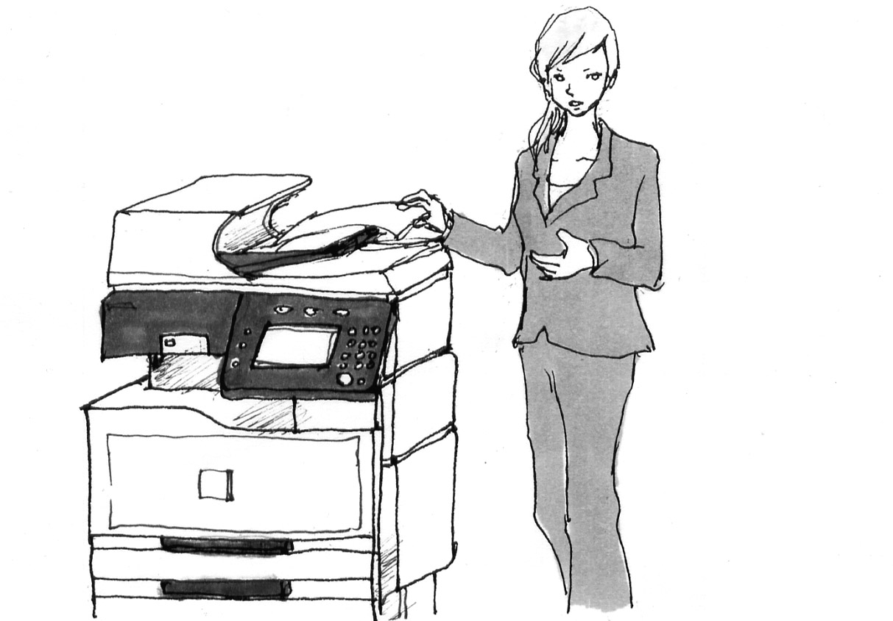

| [音声DL付]究極のイギリス英語リスニング Standard 究極のイギリス英語リスニングシリーズ | |
| アルク英語出版編集部 | |
| (2009) | |
※参照項目から元の箇所に戻るには、お使いのビューワーの仕様に従ってください。または一旦目次を表示し、戻りたい箇所の近くの見出しをタップして戻ってください。
Foreword
は じ め に
イギリス英語に慣れていなくても3000語レベルの英文ならやさしく、楽しく、聞き取れる！
『究極のイギリス英語リスニング Standard（スタンダード）』は、アルクの「標準語彙水準12000」（Standard Vocabulary List、SVL 12000）をベースにしたリスニング教材、「究極のリスニング」シリーズの姉妹編です。本書は「イギリス英語を聞き取れるようになりたいけれど、何から始めていいのかわからない」という方のために編集されています。
本書の英文は、SVLのレベル1～3（初級レベル）の英単語を中心に構成されています。難しすぎる単語がないので、イギリス英語になじみのない方でも、気楽にリスニングに取り組んでいただくことができます。
英文の内容は、日常生活、ビジネス、観光、歴史、文化など、バラエティーに富んでおり、かの国独特のユーモア感覚にあふれています。プロのイギリス人ナレーターによる美しい発音で、ライブ感たっぷりの会話や、イギリス情報満載のモノローグをお楽しみください。リスニング力だけでなく会話力もアップし、イギリスに関する知識も増えること請け合いです。
Contents
目 次
Features
本 書 の 特 徴
１ 初級3000語さえ押さえていればイギリス英語も聞き取れる！
標準語彙水準12000（SVL 12000）*1は、日本人英語学習者にとって有用な英単語１万2000語を12段階にレベル分けした語彙リストです。本書で扱っている英文は、SVL 12000の初級レベルに相当するLEVEL 1～3の単語3000語を中心としています*2。この3000語は日常生活で頻繁に使われている単語ばかりなので、なじみのないイギリス英語のアクセントで聞いたとしても、英文の内容を理解しやすいはず。その分、聞き取りにじっくり集中できます。
また、よりリアルなイギリス英語に触れていただくために、イギリス英語特有の単語、イギリスの生活・文化に深く根ざした表現なども使用しています。何度も聞いて、ぜひご自分でも使えるようになってください。
*1 SVL収録単語については、既刊「究極の英単語」シリーズ、あるいは「標準語彙水準SVL12000単語一覧」（http://www.alc.co.jp/vocgram/article/svl/）をご参照ください
*2 SVL1～3外で使われている語：①イギリス英語・文化特有の語、②人名や地名などの固有名詞、③複合語（old-fashioned、long-distanceなど。ただし、複合語を構成する語がSVL3以下のもの）、略語（DVD、CDなど）
２ 生活、文化、歴史も学べるバリエーション豊かな英文を収録！
本書に収録されている英文は全部で45本です。「日常生活」「ビジネス」「観光」「長文ナレーション」「パロディー」という５つのジャンルがあり、内容も構成もさまざまですから、飽きずに取り組んでいただけます。また、速さと長さにより３段階の難易度に分けられているので、ご自身の実力に合った英文から取り組むのもいいでしょう。
３ ３つのmodeでキッチリ聞き取り！
本書では１つの英文に対し、以下の３つのmodeを用意しています。

ヒントなしで英文を聞きます。何も見ずに英文を聞いて、内容が把握できるか確認しましょう。

語彙ヒントを見て、わからない語句を確認してから英文に取り組みます。
日本語訳を見て、内容を理解してから英文を聞きます。
一度で聞き取れなくても、あきらめずに繰り返し聞くことで、英語に耳が慣れ、少しずつ聞き取れる部分が増えてきます。最初は難易度が低い英文から取り組み、少しずつレベルを上げることで、英文の聞き取り能力をアップしてください。
４ イギリス発音のスタンダード、容認発音（Received Pronunciation）になじめる！
本書で学習する英文の音声は無料でダウンロードできます。音声は主に容認発音（Received Pronunciation、RP）と、ロンドン周辺のアクセントで読まれています。それぞれの英文には、イギリス英語の音声研究の第一人者である聖徳大学教授・小川直樹先生による解説が付属（イギリス英語の「音」レッスン）。イギリス英語の発音の特徴をしっかり学ぶことができます。この解説を読んで音声を聞き、音読やシャドーイングに取り組めば、あなたの発音もUK仕様に近づきます。
音声ファイルのダウンロードと再生方法、ダウンロード特典
アルクダウンロードセンターより無料でご利用いただけます！
※PC・スマートフォンアプリ「語学のオトモALCO（アルコ）」（無料）対応
アルクのメールアドレスIDをお持ちの方が対象です。
簡単なアンケートの記入をお願いしています。
＜入手方法＞
１）ダウンロードセンターにアクセスする
PCでダウンロードする場合：アルク ダウンロードセンター（http://www.alc.co.jp/dl/）にアクセスする。
スマートフォン上でダウンロードする場合：スマートフォンアプリ「語学のオトモ ALCO（アルコ）」（無料）をApp StoreもしくはGoogle Playダウンロードの上、ダウンロードセンターにアクセスする。
２）アルクのメールアドレスIDでログインする。
※お持ちでない方はhttp://www.alc.co.jp/dl/より登録の上、ご利用ください。
３）アンケートを記入する。
PCもしくは、アプリ（ダウンロードセンターボタンをクリック）より電子書籍版『究極のイギリス英語リスニング Standard』を選択し、アンケートを記入して送信する。コンテンツのダウンロード画面が表示されます。
※本書奥付に記載のPCコード（7桁）をご準備いただくと便利です。
※コンテンツのダウンロード画面に表示されているダウンロードボタンを押してください。ファイルは一部のPDFを除き圧縮（zip形式）されています。
４）コンテンツをダウンロードする。
＜パソコンでダウンロードする場合＞
ダウンロード後、圧縮ファイルは解凍ソフト（Lhaplusなど）で解凍の上ご利用ください。
＜スマートフォンアプリ「語学のオトモALCO（アルコ）」でダウンロードする場合＞
ダウンロード後、アプリ内で自動的に解凍され所定のフォルダに格納されます（PDFファイルは「ALCO」でご利用いただけません）。
◆PC上でダウンロードした音声ファイルについて
PCにダウンロードした圧縮ファイルを解凍ソフトで展開の上、iTunesなどの音声再生ソフトで取り込んでご利用ください。音声再生ソフトでのファイル取り込み方法や携帯音楽プレーヤーでの利用方法については、ソフトやプレーヤーに付属するマニュアルでご確認ください。
音声ファイルは、音声再生ソフトで次のように表示されます。
出版社名（アーティスト名）：「ALC PRESS INC.」と表示
書名（アルバム名）：『究極のイギリス英語リスニング Standard』
ダウンロードした音声はトラック番号が表示されます。
（2016年7月1日時点の情報。今後詳細が変更になる可能性があります）
How to use
本 書 の 使 い 方
音声のトラック番号
語数／難易度
①「ダウンロードした音声の12を再生してください」という意味です。
②取り上げる英文の総語数です。
③取り上げる英文の難易度です。３段階に分かれています。
★☆☆：易。130WPM（１分間に130語）未満のスピードで読まれている、200語未満の英文です。
★★☆：普通。130WPM以上、165WPM未満のスピードで読まれている、300語未満の英文です（130WPM未満でも、200語～300語の英文はここに分類されます）。
★★★：難。165WPM以上のスピードで読まれている英文です（165WPM未満でも、300語以上の英文は、ここに分類されます）。
状況
取り上げる英文の状況や背景を説明します。
mode 1
ヒントなし
何も見ずに英文を聞くmodeです。続いて、会話の内容に基づくクイズに挑戦してみましょう。答えはなるべく英語で書いてください（つづりがわからなければカタカナでもOK）。自信を持って解答できない場合は、次のmode 2に進みます。
mode 2
語彙ヒント
聞き取りにくい単語や、背景知識がなければ理解しにくい表現、定型表現などを紹介しています。mode 1で理解の妨げとなった語句を確認してから、もう一度英文を聞き、再びmode 1のクイズに挑戦しましょう。
イギリス英語の「音」レッスン
イギリス英語の音やリズムの特徴、話者の話し方のくせなどを解説したコラムです。
mode 3
和訳ヒント
mode 1と2では内容が理解できなった場合は、和訳を読んで英文の内容を理解します。その後もう一度英文を聞き、答えを導ける部分が聞き取れたら、mode 1のクイズの答えを書き込みましょう。
話されていた英文はコレだ！
音声トラックに収録されている英文のトランスクリプション（音声を文字で書き起こしたもの）です。各単語がどのように発音されていたのか、文字を見ながら音声を聞いて、確認しましょう。下線部はmode 1のクイズの答えを導ける部分です。
解答例
mode 1のクイズの解答例と訳です。
第１章
イギリス人の日常を聞いてみよう
語数：178／聞き取り難易度：★☆☆
語数：174／聞き取り難易度：★★☆
語数：239／聞き取り難易度：★★★
語数：203／聞き取り難易度：★★☆
語数：184／聞き取り難易度：★★★
語数：182／聞き取り難易度：★★☆
語数：231／聞き取り難易度：★★☆
語数：210／聞き取り難易度：★★★
語数：236／聞き取り難易度：★★☆
語数：204／聞き取り難易度：★★★
語数：173／聞き取り難易度：★★☆
第１章 イギリス人の日常を聞いてみよう
01 忘れ物をしちゃったみたい
DL01
語数：178／難易度：★☆☆
デパートのサービスカウンターに、あわてた様子の女性客がやって来ました。係員とのやりとりを聞いてみましょう
まずはヒントなしで会話の聞き取りにチャレンジ。
その後、会話の内容に基づく３つのクイズに答えて、聞き取れたかをチェックしてみましょう。
解答はできるだけ英語で書くこと。つづりがわからない場合はカタカナでもOKです

①女性が忘れたバッグはどんなバッグ？
②バッグには何が入っていた？
③バッグはどこで見つかった？
すべての質問に答えられなかった人は、mode 2へ ≫
聞き取りづらい語句や、定型表現などに目を通しましょう。その後、もう一度音声を聞いて、mode 1のクイズに再度挑戦してみてください。
□I realised that ...：...ということに気づいた ※realiseはアメリカ英語ではrealizeとつづる。
□I'd left it up there：それをそこに置き忘れた ※I'd=I had
□by mistake：誤って
□Has anything been handed in?：何か届いていませんか？ ※be handed inは「届けられる」。
□a few more ...：...をもう少し
□details：詳細、詳しいこと
□plastic bag：ビニールのバッグ、ビニール袋
□plain white：無地で白い
□men's shirts：男もののシャツ
□call up to the third floor：４階に電話をかける ※イギリスの階数の数え方は日本とは異なる。１階がground floorになり、そこからfirst floor、second floor ...と上がっていくので、third floorは日本の数え方で言えば「４階」になる。
□handed a bag in to staff：スタッフにバッグを渡した
□They're holding it up there：彼らがそこでそれを預かっている
□What a relief!：ホッとしました！
イギリス英語の「音」レッスン①
解説＝小川直樹（聖徳大学人文学部外国語学科教授）
RP（容認発音）とは？
この会話は、標準的な発音で行われている。ここで聞けるような発音をRP（Received Pronunciation、「容認発音」）という。
RPは、イギリス英語の代表的な発音だが、イングランドの人口の３～５パーセント程度の人しか話していない。それだけに、イギリス英語の難しさの１つは発音の多様性にあるといえる。RPを話す人々は、社会的に見て上の階層の人々だ。代表的なのは、政治家・高級官僚・高位聖職者・王室や貴族などの家柄のよい人などだ。
このサービスカウンターでの会話はゆっくり、抑えた声で行われている。やや人工的な感もあるが、RP話者はこれに近い話し方をする人も多い。ゆっくり、穏やかな口調には生活の余裕が垣間見えるのである。
まだすべての質問に答えられない人は、mode 3へ ≫
和訳を読んで、話されている内容を確認しましょう。その後また音声を再生し、クイズの解答につながる部分を注意して聞いてみてください。
サービス係：いらっしゃいませ。ご用を承りましょうか？
女性：こんにちは。ええ、あの......私、20分前ぐらいに子ども服売り場にいたんですけど、そこから移動した後で、バッグをなくしたことに気づいたんです。うっかりそこに置き忘れてしまったのかなと思って。何か届いていませんか？
サ：ちょっとお待ちください、お調べしますね。もう少し詳しく教えていただけますか？ なくされたのはハンドバッグですか？
女：いいえ。大きなビニールのバッグです。無地の白いバッグで、男物のシャツが２枚入っているはずです。
サ：４階に電話して、見つかったかどうか聞いてみますね。
女：そうしてくれると助かるわ、ありがとう。
＊ ＊ ＊
サ：朗報です。あるお客様が子ども服売り場のスタッフに届けてくださったそうです。お客様のバッグのようですよ。そちらでお預かりしております。
女：ああ、よかった！ 午前中に行ったお店を全部回らなければならないかと心配していたの！
サ：誰でも結構ですので、４階のスタッフにお声を掛けてください。
女：探していただいて本当にありがとう。
サ：どういたしまして。
次項でトランスクリプションと解答例を確認 ≫
最後に、トランスクリプションを確認しましょう。下線部がmode 1のクイズの解答を導ける部分です。
Service: Good afternoon. How may I help you, madam?
Woman: Hello. Yes, umm ... I was here maybe 20 minutes ago, in your children's clothing department and when I left, I realised that I was missing a bag. I was wondering if I'd left it up there by mistake. Has anything been handed in?
S: Just a moment and I'll check for you. Can I ask for a few more details? Is it a handbag you've lost?
W: No.①It's a large plastic bag. It's plain white and②there should be two men's shirts in it.
S: I'll just call up to the third floor for you and ask if it has been found.
W: That would be great, thanks.
＊ ＊ ＊
S: Good news.③A customer handed a bag in to staff in the children's department. It sounds like yours. They're holding it up there for you.
W: Phew. What a relief! I thought I was going to have to go back to every shop I've been in this morning!
S: Just ask any member of staff on the third floor.
W: Thanks very much for your help.
S: You're welcome.
解答例
① It's a large, plain white plastic bag.（大きい、無地の白いビニールバッグ）
② There are two men's shirts in the bag.（男物のシャツが２枚入っている）
③ It was found in the children's department.（子ども用品売り場で見つかった）
02 天気予報をチェック
DL02
語数：174／難易度：★★☆
イギリスの天気は変わりやすいとよく言われますが、今日はどうでしょう？ 天気予報をチェックしてみましょう
まずはヒントなしで予報の聞き取りにチャレンジ。
その後、予報の内容に基づく３つのクイズに答えて、聞き取れたかをチェックしてみましょう。
解答はできるだけ英語で書くこと。つづりがわからない場合はカタカナでもOKです
①昨日の都市部の最高気温は何度だった？
②今日は雨は降る？
③来週前半の天気はどうなる？
すべての質問に答えられなかった人は、mode 2へ ≫
聞き取りづらい語句や、定型表現などに目を通しましょう。その後、もう一度音声を聞いて、mode 1のクイズに再度挑戦してみてください。
□weather：天候
□yesterday saw a high of 23 degrees：昨日は最高気温が23度になった
□similar：同様の
□brolly：傘 ※（SVL外）イギリス英語。
□overnight：夜の間
□temperatures：温度
□will drop to as low as ...：...まで下がるだろう
□pick up：強くなる
□greyer：より曇った：※アメリカ英語のつづりはgrayer。
□chances of showers：にわか雨がふる可能性
□make the most of ...：...を最大限に活用する、...を大いに楽しむ
イギリス英語の「音」レッスン②
天気予報の聞き取りは慣れるしかない！
天気予報の聞き取りは一見（一聴？）難しいが、慣れればやさしい。使われる用語や表現が決まっているからだ。天候に関する表現、温度で使われる範囲の数字、それに地名などを覚えておけばよい（ただ、イギリスの天気は変わりやすいので、いつも晴れ・曇り・雨などを言っていて、代わり映えしない気もするが）。このスクリプトを何度も音読して慣れておくのは、よい練習になる。
なお、このナレーターは非常に明瞭な発音だが、実際のイギリスの気象予報士の多くはもう少し庶民的な発音であることが多く、これよりも聞き取りにくいだろう。
まだすべての質問に答えられない人は、mode 3へ ≫
和訳を読んで、話されている内容を確認しましょう。その後また音声を再生し、クイズの解答につながる部分を注意して聞いてみてください。
お天気リポーター：４月18日、金曜日のお天気をお伝えします。昨日はさんさんと降り注ぐ美しい春の日差しを受けて、市内の最高気温は23度まで上がりましたが、本日も同じような天候が続くでしょう。朝からとても素晴らしいお天気に恵まれますが、お昼前から午後に日が高くなるまでは、少し涼しく感じられるでしょう。今日は雨は降らない見込みですので、傘は家に置いていっても大丈夫です。夜のうちは晴れますが、気温は３度まで下がるでしょう。
週末になると、土曜日は晴れ間が続き、最高気温も20度ぐらいまで上がります。土曜の午後になると風が強まり、南西から雲が広がるでしょう。日曜日は雲がさらに厚くなって最高気温も16、17度にとどまり、午後や夜にはにわか雨が降るかもしれません。月曜日にかけて雨は激しくなる見込みで、その雨は数日間続くでしょう。ですから、今日と明日を最大限にご活用ください。
次項でトランスクリプションと解答例を確認 ≫
最後に、トランスクリプションを確認しましょう。下線部がmode 1のクイズの解答を導ける部分です。
Weather Reporter: Here's the weather for Friday the 18th of April.①Yesterday saw a high of 23 degrees in the city with plenty of beautiful spring sunshine and it looks like today is going to be similar. It's a very bright start to the day although it will feel a little cool until the sun gets higher in the late morning and afternoon.②We're not expecting any rain today so you can leave the brolly at home. Overnight, skies will be clear and temperatures will drop to as low as 3 degrees.
Moving into the weekend, Saturday will see more sun with a high of 20. The winds are expected to pick up on Saturday afternoon and we may already see some cloud moving in from the south-west. Sunday will be much greyer and colder with a high temperature of 16 or 17 and chances of showers in the afternoon and evening.③We can expect heavier rain moving into Monday and staying around for the next few days, so make the most of today and tomorrow.
解答例
① Yesterday saw a high of 23 degrees in the city.（昨日の都市部の最高気温は23度に至った）
② They're not expecting any rain today.（今日は雨は降らない見込みである）
③ They can expect heavier rain moving into Monday and staying around for the next few days.（月曜日にかけて雨が激しくなり、その後数日間、その雨が続く見込みである）
03 ノー制服デー、何を着ていく？
DL03
語数：239／難易度：★★★
女子中学生２人が一緒に登校しています。話題は制服を着なくていい「ノー制服デー」のこと。何を着ていくつもりなのでしょう？
まずはヒントなしで会話の聞き取りにチャレンジ。
その後、会話の内容に基づく３つのクイズに答えて、聞き取れたかをチェックしてみましょう。
解答はできるだけ英語で書くこと。つづりがわからない場合はカタカナでもOKです
①少女Aは昨夜、何をしていた？
②「ノー制服デー」は何曜日？
③少女Bは「ノー制服デー」に何を着るつもり？
すべての質問に答えられなかった人は、mode 2へ ≫
聞き取りづらい語句や、定型表現などに目を通しましょう。その後、もう一度音声を聞いて、mode 1のクイズに再度挑戦してみてください。
□Hiya：やあ ※（SVL外）イギリス英語で一般的な、カジュアルなあいさつ。
□bit：ちょっと
□I could hardly ...：とても...できなかった
□... was up late：...は遅くまで起きていた
□Mum：ママ、お母さん ※アメリカ英語のつづりはMom。
□gran：おばあちゃん ※（SVL外）イギリス英語で一般的な呼び方。口語。
□loads：負担、重荷、面倒くさいこと
□Lucky you.：よかったね。、いいなあ。
□No Uniform Day：ノー制服デー ※制服を着ずに私服で登校してもいい日。
□I've made a short list：絞り込んだ ※make a short listは「候補を絞り込む」。
□go mad with ...：...に見境がなくなる、...のことで大騒ぎする
□a couple of ...：数人の...
□made a right show of themselves：いい笑い者になった ※make a show of ...で「...をさらしものにする」。
□the Oscars：アカデミー賞授与式
□trying too hard：頑張りすぎている
□trousers：ズボン ※アメリカ英語ではpants。
□grey top：グレーの上衣 ※greyのアメリカ英語のつづりはgray。top（トップス、上衣）はセーターやブラウスなど、上半身に着る衣服のこと。
□come round to ...：...にやって来る
□mine：私の家
□pick something out：何か選び出す
□as well：おまけに、そのほかに
イギリス英語の「音」レッスン③
イギリス女性の発音が似通っている理由
この会話は２人の女性の間で行われているが、会話の流れがつかみにくいかもしれない。２人のナレーターの声が非常に似ているためだ。しかし、それも理由のないことではない。イギリスでは、若い女性同士、高齢の女性同士の声は、妙に似通っているのである。というのも、イギリス英語では、アメリカ英語に比べ、高い声域を使うことがはるかに多い。とりわけRP話者では、穏やかに優しそうに話す人が多いため、か細い小さい声がよく聞かれる。若い女性の場合、さらに鼻の詰まったような声もよく聞かれる。そういうわけで、イギリスでは男女とも甲高い声の人が多く、声も似通ってしまうのである。
まだすべての質問に答えられない人は、mode 3へ ≫
和訳を読んで、話されている内容を確認しましょう。その後また音声を再生し、クイズの解答につながる部分を注意して聞いてみてください。
少女A：おはよ。
少女B：おはよ。今日はちょっと遅いじゃない。
A：うん。なかなか起きれなかったんだ。遅くまでDVDを見てたもんだから。
B：あなたんちの親、そんなに遅くまで起きてても何も言わないんだ？ うちじゃあ絶対に無理だよ。
A：うちだってそうよ。ママとパパが２、３日家を空けてるから、おばあちゃんが私と妹と一緒に留守番してるんだ。おばあちゃんが世話してくれるときは、面倒なことはパスできるの。
B：いいなあ。算数の宿題全部やった？ すごく大変だったよ。
A：うん、大体ね。でもまだ金曜日までにやらなきゃいけない例の国語の作文があるんだ。やる時間があるかわかんないけど。
B：金曜日の「ノー制服デー」に何を着るか決めた？
A：ううん、まだ。ほとんど絞り込んだけど。たぶん、ジーンズをはく程度にする。必死になっておしゃれしてるように思われたくないから。
B：そうだよね。私もそう思う。去年の４Bの一部の女子はちょっと笑えたな。まるでアカデミー賞か何かに出席するみたいなカッコして。気合が入りすぎてるみたいに見えたらいやだよね。
A：そうそう。
B：新しい黒のズボンをはこうかな、それと、あのグレーの上衣、わかる？
A：うん。いいんじゃない。木曜日の放課後にうちに来て、私の洋服選びを手伝ってくれない？
B：いいよ。あなたが借りたがってたCDも持ってくね。
次項でトランスクリプションと解答例を確認 ≫
最後に、トランスクリプションを確認しましょう。下線部がmode 1のクイズの解答を導ける部分です。
Girl A: Hiya.
Girl B: Hiya. You're a bit late today.
A: Yeah. I could hardly get up.①I was up late watching a DVD.
B: Do your parents let you stay up late like that, then? I've no chance with mine.
A: No. Mum and Dad are away for a few days and my gran is staying with me and my sister. We can get away with loads when she's looking after us.
B: Lucky you. Did you get all that mathematics homework done? It was really hard.
A: Yeah, just about. I've still got that English essay to finish for Friday though. Don't know when I'm gonna get the time.
B: Have you decided what you're going to wear for②No Uniform Day on Friday?
A: No, not yet. But I've made a short list. I'll probably just wear jeans. Don't want to go mad with the dressing up.
B: No. I know what you mean. There were a couple of girls in 4B made a right show of themselves last year. They looked like they were going to the Oscars or something. You don't want to look like you're trying too hard, do you?
A: Exactly.
B:③I think I'm going to wear my new black trousers and you know that grey top I've got?
A: Yeah. That would be good. Do you want to come round to mine on Thursday after school and help me pick something out?
B: OK. I'll bring that CD you wanted to borrow, as well.
解答例
① She was up late watching a DVD.（DVDを見て夜更かしをしていた）
② No Uniform Day is on Friday.（「ノー制服デー」は金曜日である）
③ New black trousers and a grey top.（新しい黒いズボンと、グレーの上衣）
04 ブロッコリーも食べなくちゃだめ！
DL04
語数：203／難易度：★★☆
もう夕食の用意ができるというのに、男の子はゲームに夢中。
お母さんはおかんむりです。２人の食卓での攻防（?）を聞いてみましょう
まずはヒントなしで会話の聞き取りにチャレンジ。
その後、会話の内容に基づく３つのクイズに答えて、聞き取れたかをチェックしてみましょう。
解答はできるだけ英語で書くこと。つづりがわからない場合はカタカナでもOKです
①母親は息子に何を頼んでいる？
②今日の夕食は何？
③息子はデザートに何を食べたがっている？
すべての質問に答えられなかった人は、mode 2へ ≫
聞き取りづらい語句や、定型表現などに目を通しましょう。その後、もう一度音声を聞いて、mode 1のクイズに再度挑戦してみてください。
□set the table：食卓の準備をする
□I'm just about to ...：私は今にも...しようとしている
□providing you with ...：あなたに...を提供する
□knives and forks and stuff：ナイフやフォークなど ※ ... and stuffは「...とか、...など」にあたる口語的な表現。
□What if ...?：...したらどうする？、...しましょうか？
□straw：ストロー
□Cool!：いいじゃん！、かっこいい！ ※口語。
□Don't be silly.：ばかを言わないで。
□anyway：とにかく
□broccoli：ブロッコリー
□baked beans：ベークドビーンズ ※いんげん豆のトマトソース煮。
□turn into ...：...に変わる
□horrible：ぞっとする
□arguments：口論
□afters：デザート ※イギリス英語の口語表現で、特に子どもが使う。アメリカ英語ではdessertと言う方が一般的。
イギリス英語の「音」レッスン④
つながってしまう音に注意しよう
37秒（こちら参照）からのWhat if ...?、soup in a cup with a strawが非常に聞き取りにくい。下線部がつながってしまっているためだ。また、soupがやや「スィープ」に近い。[uː]の母音は、最近では唇をあまり丸めず発音され、「イー」に近い響きを持つようになってきているためだ。それで、「スィーペナカップェヅァスチュロー」となる。
また、続くdrink itの下線部も結び付き、しかもitの[t]が落ちてしまって、「ヂュインケッ」となっている。イギリス英語では、語中や語末の[t]が「ッ」のようになり、完全に聞こえなくなることが多い。
まだすべての質問に答えられない人は、mode 3へ ≫
和訳を読んで、話されている内容を確認しましょう。その後また音声を再生し、クイズの解答につながる部分を注意して聞いてみてください。
母親：ジャック、食卓の用意をしてくれる？ あと５分で晩ごはんができるから。
息子：忙しいんだ。
母：ジャック！ すぐに用意してちょうだい。
息：お願い、ママ！ もう少しでレベル６なんだ。
母：知りません。今すぐ食卓の用意をしてちょうだい。
息：もうレベル６まで行けることはないかもしれないのに、全部ママのせいだからね！
母：そう、ごはんを作ってあげたのがご迷惑だったかしら！
息：ごはんは食べたいけど、ナイフとかフォークとか、いらないよ。手で食べられるもん。
母：スープにストローをつけて出しましょうか、テレビゲームをしながら飲めるように。
息：うん！ それがいい！
母：ばかなこと言わないの！ さあ。テーブルの用意をして。
息：で、晩ごはんは何なの？
母：チキンのポテトとブロッコリー添えよ。
息：もう、ママ。僕がブロッコリー嫌いなの知っているでしょ！ 代わりにベークドビーンズ食べちゃだめ？
母：だめよ。それ以上食べたら、ベークドビーンズになっちゃうわよ。ブロッコリーは体にいいのよ。
息：ブロッコリーになるよりベークドビーンズになる方がましだよ。ブロッコリーは真緑で気持ち悪いよ。
母：体にいいから晩ごはんに食べるんです。もう口応えはやめなさい。
息：デザートは何？
母：チキンと野菜を食べたらデザートを食べてもいいわよ。
息：デザートにベークドビーンズを食べてもいい？
次項でトランスクリプションと解答例を確認 ≫
最後に、トランスクリプションを確認しましょう。下線部がmode 1のクイズの解答を導ける部分です。
Mum: Jack,①can you set the table for me now, please? Dinner will be ready in five minutes.
Son: I'm busy.
M: Jack! Now, please.
S: Oh, Mum! I'm just about to get into Level 6.
M: I don't care. Set the table now, please.
S: I might never get to Level 6, ever, now, and it's all your fault!
M: Well, excuse me for providing you with food!
S: I want to eat but we don't need knives and forks and stuff. I could just eat with my fingers.
M: What if I give you soup in a cup with a straw and you can drink it while playing your video games?
S: Yeah! Cool!
M: Don't be silly. Here. Go and set the table.
S: What's for dinner anyway?
M:②Chicken with potatoes and broccoli.
S: Oh, mum. You know I hate broccoli! Can't I have baked beans instead?
M: No. You'll turn into a baked bean if you eat any more of them. Broccoli is good for you.
S: I'd rather turn into a baked bean than turn into broccoli. It's all green and horrible.
M: It's healthy and we're having it for dinner. No more arguments.
S: What about afters?
M: You'll get afters if you finish your chicken and vegetables.
S:③Can I have baked beans for afters?
解答例
① To set the table.（テーブルの準備）
② Chicken with potatoes and broccoli.（チキンのジャガイモとブロッコリー添え）
③ Baked beans.（ベークドビーンズ）
05 楽しいショッピング
DL05
語数：184／難易度：★★★
ショッピング中の女性２人が、これからどうするか話し合っています。
どこに行って何をするのか、聞き取ってみましょう
まずはヒントなしで会話の聞き取りにチャレンジ。
その後、会話の内容に基づく３つのクイズに答えて、聞き取れたかをチェックしてみましょう。
解答はできるだけ英語で書くこと。つづりがわからない場合はカタカナでもOKです
①女性Bが買わなければいけない物は？
②ショッピングセンターに行く前に、２人はどこで何をする？
③女性Aは②の前にどこに寄りたい？
すべての質問に答えられなかった人は、mode 2へ ≫
聞き取りづらい語句や、定型表現などに目を通しましょう。その後、もう一度音声を聞いて、mode 1のクイズに再度挑戦してみてください。
□follow your lead：あなたの後についていく、あなたに合わせる
□in particular：特に
□a couple of pairs of stockings：２、３足のストッキング
□finishing ...：...を終える、...を終わりにする
□high street：目抜き通り
□shopping centre：ショッピングセンター ※centreのアメリカ英語つづりはcenter。
□head over to ...：...へ向かう
□end up on ...：...に行き着く、...に行き当たる
□nice wee place：小ぢんまりしたすてきな店 ※wee（SVL外）はスコットランド方言で「とても小さい」。
□Next：ネクスト ※イギリスを中心に展開する洋服ブランド。
□break：休憩
□otherwise：そうでなければ
□Just a coffee will do me.：私はコーヒーだけで十分です。
□a piece of ...：一切れの...
□stop off at ...：...に立ち寄る
□pay off：全額支払う
□like mad：猛烈に
イギリス英語の「音」レッスン⑤
まだすべての質問に答えられない人は、mode 3へ ≫
和訳を読んで、話されている内容を確認しましょう。その後また音声を再生し、クイズの解答につながる部分を注意して聞いてみてください。
女性A：次はどこに行きたい？
女性B：私はどこでもいいわよ。あなたの後についていくだけで楽しいから。
A：じゃあ、特に行かなきゃいけないところはないのね？
B：別にないわ。仕事用のストッキングを２、３足買わなきゃいけないんだけど、それはどこでも買えるから。
A：じゃあ、大通りは終わりにして、どこかすてきな所でコーヒーか何か飲んで、それからショッピングセンターの方に行こうか？
B：いいわよ。そっちの方に行ってノースストリートに出たら、ネクストの角を曲がったところに小さくてすてきなお店があるの。何か食べたいかしら、それとも、飲み物を飲んで休憩するだけでいい？
A：あなたが食べたければ食べてもいいわよ。そうじゃないんだったら、私は帰るまでコーヒーだけで十分よ。家には夕食用にスープを用意してあるから。
B：ううん、いい。私もコーヒーでいいわ。それとケーキでもあればいいかも。
A：そうね。途中で銀行にも寄りたいんだけど。また散財する前に、クレジットカードの支払いを済ませておいた方がよさそうだから。
次項でトランスクリプションと解答例を確認 ≫
最後に、トランスクリプションを確認しましょう。下線部がmode 1のクイズの解答を導ける部分です。
Woman A: Where do you want to go next?
Woman B: I don't really mind. I'm happy enough to follow your lead.
A: So there's nowhere you have to go in particular?
B: Not really.①I have to buy a couple of pairs of stockings for work but I can get them anywhere.
A: OK, how about finishing the high street and②finding somewhere nice for a coffee or something before we head over to the shopping centre?
B: Fine with me. If we head up that way, and end up on North Street,②there's a nice wee place just round the corner from Next. Do you want to eat something or is it just a drink and a break you want?
A: We can eat if you want. Otherwise just a coffee will do me until I get home. I've got some soup at home for dinner.
B: No, no. A coffee will do me too. And maybe a piece of cake or something.
A: Great.③On our way, I want to stop off at the bank as well. I should probably pay off my credit card before I go spending like mad again.
解答例
① A couple of pairs of stockings.（ストッキングを２、３足買わなければいけない）
② They're going to have coffee or something at a nice wee place around the corner from Next.（ネクストの角を曲がったところにある、小さくてすてきなお店でコーヒーなどを飲む）
③ She wants to stop off at the bank.（銀行に寄りたい）
06 ここでニュースです
DL06
語数：182／難易度：★★☆
11時、短いニュースの時間です。アナウンサーが読み上げる４つの話題をきちんと把握できるでしょうか？
まずはヒントなしでニュースの聞き取りにチャレンジ。
その後、ニュースの内容に基づく３つのクイズに答えて、聞き取れたかをチェックしてみましょう。
解答はできるだけ英語で書くこと。つづりがわからない場合はカタカナでもOKです
①工場の閉鎖で、失業する人の数は？
②マンチェスターの窃盗事件の被害額は？
③皇太子は何のためにリーズにいる？
すべての質問に答えられなかった人は、mode 2へ ≫
聞き取りづらい語句や、定型表現などに目を通しましょう。その後、もう一度音声を聞いて、mode 1のクイズに再度挑戦してみてください。
□The Berker & Co.：バーカー社 ※架空の社名。
□Tyneside：タインサイド ※イングランド北部、タイン川のニューカッスルから河口にいたる地域。
□with the loss of ...：...を失って
□leather goods：皮革製品
□decision：決定
□MPs：国会議員たち、英下院議員たち ※MPはMember of Parliamentの略。
□spending：支出
□Wales：ウェールズ ※グレートブリテン島南西部の地方。
□the Scottish Highlands：スコットランド高地 ※スコットランドの北部および西部。
□Manchester：マンチェスター ※イングランド北西部の商工業都市。
□in connection with ...：...に関連して
□a series of ...：一連の...
□antique shops：アンティークショップ、古物商
□off-licence：酒屋 ※酒類販売免許を持つ店のこと。イギリスではコンビニエンスストアのような位置付け。
□targeted：狙われた
□to the value of ...：金額にして...の
□Prince Charles：チャールズ皇太子
□Leeds：リーズ ※イングランド北部の都市。
□funded：資金を提供された
□the Prince's Trust：英皇太子信託基金
□care home：介護施設
□traffic news：交通ニュース
イギリス英語の「音」レッスン⑥
「プロデュース」でなく「プロヂュース」
15秒（こちら参照）produce(s)の発音に注目したい。現代イギリス英語では、[djuː]や[tjuː]はそれぞれ[dʒuː]（「ヂュー」）、[tʃuː]（「チュー」）と発音されることが多い。ナレーターのようなRP話者でもかなり使っている。reduce、duty、tube、studentなどあちこちで現れる。また、immediatelyの下線部などにも現れる。「イミーヂェットリ」となるわけだ（⑲参照）。
28秒（こちら参照）のBritainは「ブリンー」のように聞こえる。イギリス英語でもアメリカ英語でも、[tn]、[dn]という組み合わせはいずれも「ンー」のように発音される。12秒（こちら参照）の450（four hundred and fifty）でも現れている。
まだすべての質問に答えられない人は、mode 3へ ≫
和訳を読んで、話されている内容を確認しましょう。その後また音声を再生し、クイズの解答につながる部分を注意して聞いてみてください。
アンカー：11時です。短くニュースをお伝えします。タインサイドのバーカー社の工場が閉鎖され、450人が職を失うことになりました。皮革製品メーカーであるバーカー社は今朝この決定を発表しましたが、同社によると過去18カ月間、赤字が続いているそうです。
国会は、北部イングランド、ウェールズ、スコットランド高地の各地において公共交通機関が最大80パーセントも減少しているという報告を受けて、イギリス各地の交通対策費を増額するよう政府に要求しました。
警察は、マンチェスターで発生した一連の事件に関連して３人の男を同市内において逮捕しました。過去３カ月間に、２軒の古物商と酒店が襲われました。盗まれた品物の総額は２万5000ポンドに上るとみられています。
チャールズ皇太子は本日、リーズにおいて、英皇太子信託基金が資金を提供した新しいコミュニティーセンターの開所式に出席します。皇太子はさらにリーズ大学で講演を行い、その後、地域の高齢者介護施設を訪れて職員や入居者と交流することになっています。
正午から再びニュースをお伝えします。では、交通情報です......
次項でトランスクリプションと解答例を確認 ≫
最後に、トランスクリプションを確認しましょう。下線部がmode 1のクイズの解答を導ける部分です。
Anchor: It's 11 o'clock and here's a short news report.①The Berker & Co. factory in Tyneside is to close with the loss of 450 jobs. Berker & Co., which produces leather goods, announced the decision this morning, saying the company had been experiencing losses for the last 18 months.
MPs have called on the government to increase spending for transport in parts of Britain after reports showed that many areas of northern England, Wales and the Scottish Highlands have had public transport cut by up to 80 per cent.
Police have arrested three men in Manchester in connection with a series of crimes in the city. In the last three months, two antique shops and an off-licence have been targeted.②Goods stolen are said to be to the value of £25,000.
③Prince Charles is in Leeds today to open a new community centre funded by the Prince's Trust. He will also be giving a speech at Leeds University and spending some time talking to staff and patients in a local old people's care home.
More news at 12. Now the traffic news ...
解答例
① 450 jobs.（450人の雇用が失われる）
② Goods stolen are said to be to the value of £25,000.（価格にして２万5000ポンドに上る品物が盗まれたとされている）
③ To open a new community centre, to give a speech at Leeds University, and to spend some time talking to staff and patients in a local old people's care home.（新しいコミュニティーセンターを開館させ、リーズ大学でスピーチを行い、地元の老人ホームで職員や入所者と語らうため）
07 赤ちゃんの落とし物
DL07
語数：231／難易度：★★☆
お母さんと一緒にベビーカーでお散歩中の赤ちゃん。おや、何か落としたようです。年配の女性が声を掛けています
まずはヒントなしで会話の聞き取りにチャレンジ。
その後、会話の内容に基づく３つのクイズに答えて、聞き取れたかをチェックしてみましょう。
解答はできるだけ英語で書くこと。つづりがわからない場合はカタカナでもOKです
①赤ちゃんは何を落とした？
②赤ちゃんの年齢は？
③赤ちゃんはどんなことをしてお母さんを困らせる？
すべての質問に答えられなかった人は、mode 2へ ≫
聞き取りづらい語句や、定型表現などに目を通しましょう。その後、もう一度音声を聞いて、mode 1のクイズに再度挑戦してみてください。
□sock：短い靴下
□He's always pulling them off.：彼はいつもそれら（靴下）を脱いでしまう ※pull ... offで「...を脱ぐ」。
□odd：片方の、半端な
□ended up ...：...で終わった、...ということになった
□Time flies.：時は速く過ぎ去る。、光陰矢のごとし。
□this little man：この小さな男性 ※ここでは赤ちゃんのことをこう呼んでいる。
□make the most of ...：...を最大限に活用する
□He keeps me busy, alright.：間違いなく彼のことで手一杯です ※このalright（SVL外）は口語で「確かに」「間違いなく」の意。
□keep up with ...：...に遅れない
□(be) into everything：何にでも興味を持つ
□emptying ...：...を空にする
□cupboards：戸棚
□swinging on ...：...にぶら下がる
□couldn't be worse：これ以上悪いはずがない
□discovers：発見する
□fortunate：幸せな
□fully dressed：きちんと服を着た
イギリス英語の「音」レッスン⑦
まだすべての質問に答えられない人は、mode 3へ ≫
和訳を読んで、話されている内容を確認しましょう。その後また音声を再生し、クイズの解答につながる部分を注意して聞いてみてください。
老婦人：あのう。何か落とされましたよ。
若い母親：何でしょう？ まあ！ この子の靴下！ ありがとうございます。この子、いつも脱いでしまうので。家には片方だけの靴下が数え切れないほどあるんです。なくしてばかりなんですよ。
老：うちの息子もそうでした。靴、靴下、手袋、帽子......何でも落としてしまって。息子さんはおいくつ？
母：ちょうど13カ月になります。時が経つのは速いですね。信じられません！
老：そうね。今では孫が２人いますが、息子たちがこの小さな殿方のようにすわっていたのがまるで昨日のことのようだわ。あっという間に大きくなりますからね。今はお子さんとの時間を楽しんでね。
母：そうします。本当にこの子の世話に追われていて。
老：そうでしょうね。もう歩いているの？
母：ええ。付いていくのが大変です。何にでも興味を持つので。戸棚の中のものを全部出してしまったり、おもちゃをトイレに入れたり、カーテンにぶら下がったり......女の子はもっと楽だと聞いていますけど。きっとこれほどひどくはないですよね！
老：私は男の子しかいないから、わからないけれど。クレヨンで遊ぶようになったら、もっと大変よ！ なんてかわいい笑顔でしょう！ 歯もたくさん生えて。
母：ええ、歯が生え始めるのがとても早くて。歯にはあまりトラブルがなかったのでラッキーでした。
老：それはよかったわね。お母さんのためにいい子にしているわよね？
母：どうでしょう。何もなくさずに家まで帰れたらいいのですが。
次項でトランスクリプションと解答例を確認 ≫
最後に、トランスクリプションを確認しましょう。下線部がmode 1のクイズの解答を導ける部分です。
Old woman: Excuse me. I think you dropped something there.
Young mother: Sorry? Oh!①Yes, his sock! Thank you. He's always pulling them off. I can't tell you the number of odd socks we've got at home. We're forever losing them.
O: My son was exactly the same. Shoes, socks, gloves, hats ... everything ended up on the floor. How old is he?
Y:②Just over 13 months now. Time flies. I can hardly believe it!
O: Oh, I know. I've got two grandchildren now but it seems like only yesterday my own boys were sitting there like this little man. They grow up so fast. Make the most of your time with him now.
Y: I intend to. He keeps me busy, alright.
O: I'm sure he does. Is he walking yet?
Y: Oh yes. I can hardly keep up with him. He's into everything.③Emptying cupboards, putting toys in the toilet, swinging on the curtains ... I've heard girls are easier. They certainly couldn't be worse!
O: I only had boys myself so I couldn't say. Just wait until he discovers crayons! Oh, what a beautiful smile you have! Oh, and so many teeth!
Y: Yes, he got his first teeth very early. He didn't have too many problems with them so we were quite lucky.
O: Yes, that is fortunate. Are you going to be a good boy for your mummy?
Y: We'll see. I'll be happy if I can get him home fully dressed!
解答例
① He dropped his sock.（靴下を片方落とした）
② He's just over 13 months.（13カ月を過ぎたばかり）
③ He empties cupboards, puts toys in the toilets, swings on the curtains.（食器棚の中のものを全部出したり、おもちゃをトイレに入れたり、カーテンにぶら下がったりする）
08 昨日の夜、あなたの家に...
DL08
語数：210／難易度：★★★

カレンが帰宅して留守電をチェックすると、ジュリーからメッセージが。
何やらあわてている様子。用件は何でしょう？
まずはヒントなしで留守電の聞き取りにチャレンジ。
その後、話の内容に基づく３つのクイズに答えて、聞き取れたかをチェックしてみましょう。
解答はできるだけ英語で書くこと。つづりがわからない場合はカタカナでもOKです
①ジュリーは何をなくした？
②ジュリーはカレンに何をしてほしい？
③ジュリーはカレンに何を送る？
すべての質問に答えられなかった人は、mode 2へ ≫
聞き取りづらい語句や、定型表現などに目を通しましょう。その後、もう一度音声を聞いて、mode 1のクイズに再度挑戦してみてください。
□I'm going mad looking for ...：やっきになって...を探している、...を必死で探している
□I was wondering if ...：...じゃないかと思っているのですが
□nephew：おい
□on the way home：家に帰る途中で
□... and stuff：...など
□get back to ...：（電話で）折り返し...に連絡する
□lying ...：...にある
□I'd rather be safe than sorry.：後悔するよりは用心した方がいい。、用心するに越したことはない。
□get on to ...：...に連絡する
□a couple of ...：２、３枚の...
□attach them to ...：...に添付する
イギリス英語の「音」レッスン⑧
速い発話の聞き取りは「リズム」がポイント
イギリス英語らしい、テキパキとした速い英語だ。慣れない人にはかなり手ごわく感じられるだろう。ただ、このくらいのスピードで話す人はかなりいる。何度も聞いて、この速さに慣れたいものだ。
イギリス英語が速く感じられるのは、実はリズムの影響だ。英語は強弱リズムだ。「弱」部分は短くあいまいに発音されるが、その弱まり方がアメリカ英語以上なのだ。
12秒のleftit at your（こちら参照）、15秒のtakingit out of my bag（こちら参照）の下線部は、ほとんど聞こえないくらいだ。一方、bagはゆっくり発音されている。この対比が大きいのがイギリス英語のリズムの特徴だ。なお、弱い個所は重要度が低い情報なので、聞き取れなくても慌てなくてよい。
まだすべての質問に答えられない人は、mode 3へ ≫
和訳を読んで、話されている内容を確認しましょう。その後また音声を再生し、クイズの解答につながる部分を注意して聞いてみてください。
ジュリー：あ、もしもし、カレン？ ジュリーよ。あのね、いま財布を必死で探しているの。どこにもないから、夕べあなたの家に忘れてきたんじゃないかと思って。財布をバッグから取り出して、中にいつも入れていたおいの写真をエマに見せたのは覚えているんだけど......あの財布なのよ。とにかく、その時あったのは確かなんだけど、そこに忘れたのか、家に帰る途中でなくしたのかがわからないの。中にカードとかいろいろなものが入ってるから、この伝言を聞いたら、ちょっと家の中を見て、電話してもらえないかしら？ そうする必要がないなら、銀行のカードやクレジットカードを全部止めたりしたくはないの。でも、もしあなたの家のどこかにないなら、用心するに越したことはないから、銀行に連絡するべきだしね。
ところで、夕べはどうもありがとう。私たちのせいで、寝るのが遅くなったりしてなければいいんだけど。面白い写真が何枚か撮れたわ。Eメールに添付して、一両日中に送るわね。では、電話を待ってます。いい知らせだといいんだけど。じゃあね。
次項でトランスクリプションと解答例を確認 ≫
最後に、トランスクリプションを確認しましょう。下線部がmode 1のクイズの解答を導ける部分です。
Julie: Ah, yes, hello, Karen. It's Julie here. Listen,①I'm going mad looking for my purse. I can't find it anywhere and I was wondering if I had maybe left it at your house last night. I remember taking it out of my bag to show Emma that photo of my nephew that I always keep in it ... you know the one. Anyway, I know I had it with me then but I don't know if I forgot it there or have lost it on the way home. It's got all my cards in it and stuff so②when you get this message, can you have a look and get back to me? I don't want to have to cancel all my bank and credit cards if it's not necessary but if it's not lying at your place somewhere, I'd rather be safe than sorry and get on to the bank, you know?
And thanks for a great evening yesterday by the way. I hope we didn't keep you out of bed too late.③I got a couple of funny photos. I'll attach them to an e-mail and send them to you in the next day or two. Right, well, I'll hear from you, then. I hope it's good news. Bye.
解答例
① She's lost her purse.（財布をなくした）
② She wants Karen to look around the house for her purse, and give her a call.（財布が家の中にないかどうか見て、電話をしてほしい）
③ She'll send Karen a couple of funny photos.（面白い写真を何枚か送る）
09 郵便局にて
DL09
語数：236／難易度：★★☆
おばあさんが小包を抱えて郵便局の窓口にやってきました。
送料や切手代など、金額の聞き取りにチャレンジしてみましょう
まずはヒントなしで会話の聞き取りにチャレンジ。
その後、会話の内容に基づく３つのクイズに答えて、聞き取れたかをチェックしてみましょう。
解答はできるだけ英語で書くこと。つづりがわからない場合はカタカナでもOKです
①おばあさんは小包を誰に送りたい？
②小包をAirsureで送ると、代金はいくらかかる？
③切手２枚の代金はいくら？
すべての質問に答えられなかった人は、mode 2へ ≫
聞き取りづらい語句や、定型表現などに目を通しましょう。その後、もう一度音声を聞いて、mode 1のクイズに再度挑戦してみてください。
□parcel：小包
□niece：めい
□weigh：重さを計る
□pop it onto the scales：それをはかりの上に置く
□That's the job.：それで結構です。
□Right then.：さて。、それでは。
□890 grammes：890グラム ※grammesは、書く場合、gと省略されることもある。アメリカ英語ではgrams。
□send it airmail：航空便で送る ※このairmailは副詞。send it by airmailと言っても同じ意味。
□11 pounds 11 pence：11ポンド11ペンス ※11 pounds 11と読まれることもある。書く場合は、£11.11となる。penceはpennyの複数形。100ペンスで１ポンド。
□insurance：保険
□Airsure：エアシュア ※インターネットで追跡が可能な郵便。
□customs label：税関用ラベル
□worth ...：...の値打ちがある
□second-class：第２種郵便 ※普通郵便のこと。アメリカでは雑誌や出版物向け郵便のこと。
□p：ペンス ※penceの省略。[pi:]と発音する。
□small change：小銭
イギリス英語の「音」レッスン⑨
年配の人たちの話し方の特徴とは
前のトラックとは打って変わってゆっくりした会話だ。老人の場合、まさにこの会話のようなペースである（女性ナレーターは、前のトラックと同じRachelさん。その意味で、うまく演じ分けているといえよう）。
ペースがゆっくりしているというほかにも、年配者、特に女性の話し方には特徴がある。それは、降昇調（下降上昇調）（）というイントネーションをよく使う点だ。9秒のplease（こちら参照）、48秒からのright、magazines（こちら参照）、66秒および106秒のpounds（こちら、こちら参照）などだ。これらを含む文は平叙文なので、本来は下降調でよい。ただ、降昇調にすると、最後が上がるため、断定を避けた柔らかい印象を与える。それが年配女性に好まれる理由だろう。
まだすべての質問に答えられない人は、mode 3へ ≫
和訳を読んで、話されている内容を確認しましょう。その後また音声を再生し、クイズの解答につながる部分を注意して聞いてみてください。
職員：次の方、どうぞ。
老婦人：おはよう。カナダにいるめいにこの小包を送りたいのですが。
職：えーと、重さを計る必要がありますので、左側にあるはかりの上に置いてください。
老：こうですか？
職：それで結構です。さてと。890グラムです。航空便で送りますか？
老：はい、お願いします。おいくらになりますか？
職：11ポンド11ペンスです。保険を付けますか？ エアシュアで送ると、さらに４ポンド50ペンスかかりますが。
老：結構です。大丈夫です。古い雑誌が数冊入っているだけですから。
職：わかりました。こちらにください、切手と税関用ラベルを貼りますから。雑誌でしたね。おいくらぐらいの物ですか？
老：ええと......７ポンドです。
職：わかりました......ここにサインしてくださいますか？
老：はい。書きました。それと、忘れないうちに、普通郵便の切手も２枚ください。
職：はい、それは60ペンスで、小包が11ポンド11ペンスなので......合計で11ポンド71ペンスになりますね。
老：小銭がたくさんあるの。それで払ってもいいかしら？
職：ええ、もちろんです。ここでは小銭はいつでも必要ですから。お客様の財布もだいぶ軽くなりますしね。
老：ええと......11ポンドと、50、60、65、67、69、70、71ペンス。そうですよね？
職：そうです。それで、こちらが切手２枚です。
次項でトランスクリプションと解答例を確認 ≫
最後に、トランスクリプションを確認しましょう。下線部がmode 1のクイズの解答を導ける部分です。
Assistant: Next, please.
Old woman: Good morning.①I'd like to send this parcel to my niece in Canada, please.
A: OK, let's see. We need to weigh that for you. Can you just pop it onto the scales there on your left?
O: Like this?
A: Yes, that's the job. Right then. That's 890g. Do you want to send it airmail?
O: Oh, yes, please. How much is it going to cost me?
A:②It'll be £11.11. Did you want insurance for it at all? I can send it by Airsure for an extra £4.50.
O: Oh, no. That's quite all right. It's just a couple of old magazines.
A: No problem. If you just pass it through to me, I'll put the stamp and customs label on it for you. Magazines, you say? Worth how much?
O: Let's say ... £7.
A: OK ... could you just sign here for me?
O: Certainly. There you are. And before I forget, could I have two second-class stamps as well, please?
A: Yes,③that'll be 60p and £11.11 for the parcel ... £11.71, please.
O: I have a lot of small change here. Do you mind taking it?
A: No, not at all. We can always use it and your wallet will be a lot lighter.
O: Let's see ... there's the £11 and 50, 60, 65, 67, 69, 70, 71p. That's right, now, isn't it?
A: That's right. And there are your two stamps.
解答例
① To her niece in Canada.（カナダにいるめいに送りたい）
② It will cost £15.61.（15ポンド61ペンスかかる）
③ It will be 60p.（60ペンスになる）
10 何時に、どこに集合？
DL10
語数：204／難易度：★★★
友人同士が電話で、週末のプランについて話し合っています。
集合場所や集合時間をきちんと押さえられるでしょうか？
まずはヒントなしで会話の聞き取りにチャレンジ。
その後、会話の内容に基づく３つのクイズに答えて、聞き取れたかをチェックしてみましょう。
解答はできるだけ英語で書くこと。つづりがわからない場合はカタカナでもOKです
①コンサートの開場時間は？
②マットはどういう交通手段で会場へ行く？
③電話相手の男性は何時にこの男性の家に来ればいい？
すべての質問に答えられなかった人は、mode 2へ ≫
聞き取りづらい語句や、定型表現などに目を通しましょう。その後、もう一度音声を聞いて、mode 1のクイズに再度挑戦してみてください。
□after all：結局は
□the Tube：地下鉄 ※イギリス英語。アメリカ英語ではsubwayが一般的。
□He's picking me up at my place：彼が家まで僕を迎えに来ることになっている
□quarter to seven：７時15分前、６時45分 ※quarterは「15分、４分の１」。
□come round：来る
□room：余地、スペース
□boot：車のトランク ※イギリス英語。アメリカ英語ではtrunkが一般的。
□tie me to ...：...に私を縛りつける
□roof：屋根
□seriously, ...：冗談は別として...
□hold on to ...：...を持ち続ける
□Cheers.：ありがとう。
□load of bother：たくさんの面倒くさいこと ※イギリス的な言い回し。bother（SVL4）は「やっかいなこと」。
イギリス英語の「音」レッスン⑩
ロンドンなまりをちょっと聞いてみよう
the Tube（地下鉄）、half six（６時半）、boot（車のトランク）、cheers（ありがとう）などイギリス英語特有の表現が多い。また、この会話は街の人の会話らしく、若干のロンドンなまりが再現されている。22秒のdrive（こちら参照）、42秒のfine（こちら参照）の母音が「オイ」に近いのがそれ。また、43秒のticket here（こちら参照）が「ティケッヒー」のように聞こえる。語中や語末の[t]が「ッ」のようになったり、[ɪə]や[ɛə]などの二重母音が[ɪː]や[ɛː]のような長母音になったりするのだ。
とはいえ、この２人のナレーターの発音は、一般のロンドンっ子に比べればはるかに標準的で聞きやすい。このレベルであれば、しっかり聞きこんで、確実に聞けるようにしたい。
まだすべての質問に答えられない人は、mode 3へ ≫
和訳を読んで、話されている内容を確認しましょう。その後また音声を再生し、クイズの解答につながる部分を注意して聞いてみてください。
男性A：じゃあ、土曜日、一緒に行けるんだね？
男性B：ああ。そうなりそうだね。結局、仕事をしなくてもよくなったから、空いてるんだ。何時だったっけ？
A：開場は６時30分だけど、コンサートが始まるのは８時30分だ。チケットはもう買ってあるから、それほど早く行く必要はないよ。会場までどうやって行くつもり？
B：たぶん、地下鉄で行くかな。
A：マットが車を出すよ、公演が終わったらできるだけ早く家に帰りたいから。彼が７時15分前くらいに、うちに僕を迎えに来ることになっているんだ。君も６時半ごろにうちに来て、みんなで車で一緒に行くのはどう？
B：僕も乗れる？
A：うん、大丈夫。トランクに入ってもらうことになるけど。
B：ハハハ。屋根に縛りつけてもいいよ。
A：まあ、冗談は別として、僕たち４人だけだから大丈夫だ。君のチケットも僕のと一緒に持ってるよ。
B：ありがとう。面倒が省けて助かるよ。じゃあ、６時半に君の家でいいんだね。
A：そうだね。予定が変わったら連絡するよ。それじゃ、その時に。
B：オーケー、ありがとう。じゃあ、土曜日ね。
次項でトランスクリプションと解答例を確認 ≫
最後に、トランスクリプションを確認しましょう。下線部がmode 1のクイズの解答を導ける部分です。
Man A: So will you be able to come with us on Saturday, then?
Man B: Yeah, it looks like it. I don't have to work after all so I'm free. What time were you thinking of?
A: Well①the doors open at 6:30 but the concert doesn't start until 8:30. We've already got our tickets so we don't have to be there that early. How are you getting there?
B: I'll take the Tube from here, I suppose.
A:②Matt is going to drive because he wants to get home as quickly as possible after the show. He's picking me up at my place at about quarter to seven.③Why don't you come round here at half six or so and we can all go in the car together.
B: Will there be room for me?
A: Yeah, no problem. You can go in the boot.
B: Ha-ha. Or you can tie me to the roof.
A: No, seriously, there'll only be the four of us so it'll be fine. And I'll hold on to your ticket here with mine.
B: Cheers. That'll save me a load of bother.③So that's half six at yours, right?
A: Yeah. I'll let you know if there's any change in the plans. See you then.
B: OK, thanks. See you Saturday.
解答例
① The doors open at 6:30 for the concert.（コンサート会場が開くのは６時半）
② Matt will drive to the concert hall.（車でコンサート会場まで行く）
③ At half six.（６時半）
11 メラニーはいますか？
DL11
語数：173／難易度：★★☆

ウォルシュ夫人が、娘メラニーのクラスメート、
ハンナからの電話を受けています。彼女の用件とは......？
まずはヒントなしで会話の聞き取りにチャレンジ。
その後、会話の内容に基づく３つのクイズに答えて、聞き取れたかをチェックしてみましょう。
解答はできるだけ英語で書くこと。つづりがわからない場合はカタカナでもOKです
①メラニーはなぜ家にいない？
②ハンナがメラニーに頼みたかったことは？
③ウォルシュ夫人はメラニーに何を聞く？
すべての質問に答えられなかった人は、mode 2へ ≫
聞き取りづらい語句や、定型表現などに目を通しましょう。その後、もう一度音声を聞いて、mode 1のクイズに再度挑戦してみてください。
□Mrs Walsh：ウォルシュさん ※イギリス英語ではMrsやMrの後にピリオド[.]を入れないのが一般的。
□(have) just missed ...：...に間に合わなかった、...に会いそこなった
□a couple of ...：２、３の...、いくつかの...
□If you're sure.：あなたがそれでよければ。
□gets in：到着する
□sort it out：それを解決する
□Will that do?：それでいいですか？
イギリス英語の「音」レッスン⑪
声量でも階層がわかる?!
Hannahが、小さな声で話していることに注目（注耳？）してほしい。ここから、おそらくは中流以上の、暮らし向きのよい家の子ということが想像できる。なまりのない英語からも判断できるが、声の出し方だけでもわかるものなのだ。
Mrs WalshのDo you want her to call you later?（29秒、こちら参照）のイントネーションは極めてイギリス的だ。まず、疑問文なのに下降調が使われている点。アメリカ英語なら確実に上昇調が使われるだろう。また、laterが
のように、段を下りていくような形で音程が変化している点も、イギリス的である。
まだすべての質問に答えられない人は、mode 3へ ≫
和訳を読んで、話されている内容を確認しましょう。その後また音声を再生し、クイズの解答につながる部分を注意して聞いてみてください。
ハンナ：ああ、こんにちは、ウォルシュさん。ハンナ・ミッチェルです。メラニーをお願いできますか？
ウォルシュ夫人：あら、こんにちは、ハンナ。いえ、ごめんなさい。ちょっと行き違いになっちゃったわね。メラニーは今夜は柔道のレッスンがあるの。ほんの数分前に出掛けちゃったわ。
ハ：ああ、そうだ、忘れてたわ。いつも何時ごろに帰ってきますか？
ウ：１時間ぐらいで戻ると思うわ。後で電話させましょうか？
ハ：ええと......私ももうすぐピアノのレッスンに行かなければならないので、結構です。それほど重要なことではないし。
ウ：そう、それならいいけど。メラニーが戻ったら、メッセージを伝えましょうか。
ハ：では、ぜひお願いします。明日、フランス語の辞書を貸してもらえるかどうか聞きたかったんです。もしメラニーも使うなら、きっとほかで見つけますから、大丈夫です。１回の授業のためだけだし。
ウ：聞いてみるわね。いずれにしても、明日学校に辞書を持って行かせるわ。そしたら２人で相談できるでしょ。そういうことでいいかしら？
ハ：ありがとうございます、ウォルシュさん。彼女にまた明日ねって伝えてください。
ウ：わかったわ、さようなら。
ハ：さようなら。
次項でトランスクリプションと解答例を確認 ≫
最後に、トランスクリプションを確認しましょう。下線部がmode 1のクイズの解答を導ける部分です。
Hannah: Ah, hello Mrs Walsh. This is Hannah Mitchell. Is Melanie there, please?
Mrs Walsh: Oh, hello, Hannah. No, I'm sorry. You've just missed her.①She has her judo class tonight.She left a couple of minutes ago.
H: Oh, right. I forgot about that. What time does she usually get back?
W: She should be back in an hour or so. Do you want her to call you later?
H: Umm ... I've got to go out myself soon for a piano lesson. It's OK. It wasn't very important.
W: Well, if you're sure. I can give her a message when she gets in, if you like.
H: OK, that would be great.②I wanted to ask if I could borrow her French dictionary tomorrow, but if she needs it I'll find one somewhere else, I'm sure. It's only for one class.
W:③I'll ask her and she can take hers to school tomorrow anyway. The two of you can sort it out then. Will that do?
H: Yes. Thank you, Mrs Walsh. Tell her I'll see her tomorrow.
W: OK, dear. Bye.
H: Bye.
解答例
① Melanie has her judo class tonight.（柔道のレッスンがある）
② Hannah wanted to ask Melanie if she could borrow a French dictionary.（フランス語の辞書を貸してくれるよう頼みたかった）
③ Mrs Walsh will ask Melanie about the dictionary so that she can take it to school tomorrow.（メラニーに辞書のことを聞いてみて、明日学校に持って行かせるようにする）
第２章
イギリスのビジネスシーンを疑似体験！
語数：183／聞き取り難易度：★★☆
語数：129／聞き取り難易度：★☆☆
語数：252／聞き取り難易度：★★☆
語数：235／聞き取り難易度：★★★
語数：186／聞き取り難易度：★★★
語数：270／聞き取り難易度：★★☆
語数：227／聞き取り難易度：★★☆
語数：258／聞き取り難易度：★★★
語数：238／聞き取り難易度：★★★
語数：230／聞き取り難易度：★★★
第２章 イギリスのビジネスシーンを疑似体験！
12 すみません、渋滞していて
DL12
語数：183／難易度：★★☆
本社での合同会議に遅れてきてしまった男性。
なぜ遅れたのか、一生懸命説明しようとしていますが......
まずはヒントなしで会話の聞き取りにチャレンジ。
その後、会話の内容に基づく３つのクイズに答えて、聞き取れたかをチェックしてみましょう。
解答はできるだけ英語で書くこと。つづりがわからない場合はカタカナでもOKです
①男性は何分遅れた？
②市の中心部はなぜ交通渋滞していた？
③女性は会議室に何を運ばせる？
すべての質問に答えられなかった人は、mode 2へ ≫
聞き取りづらい語句や、定型表現などに目を通しましょう。その後、もう一度音声を聞いて、mode 1のクイズに再度挑戦してみてください。
□terribly：すごく
□quite alright：まったく問題ない
□was kind enough to ...：親切にも...してくれた
□were held up：立ち往生していた、足止めを食らった
□in any case：とにかく
□apologise：謝罪する ※アメリカ英語のつづりはapologize。
□delay：遅れたこと
□parade：パレード
□city centre：市の中心部 ※centreのアメリカ英語のつづりはcenter。
□were closed off：封鎖された
□were jammed：込み合っていた、渋滞していた
□awful：ひどい
□Luton branch：ルートン支社 ※ルートンはロンドンの北西にある町。
□attended to ...：...に取り組んだ
□Chloe：クロイー ※女性の名。発音は[klə́Ui]。
□lovely：結構な ※非常にイギリス的な表現。アメリカ英語ならfineと言う方が一般的。
□biscuits：ビスケット
イギリス英語の「音」レッスン⑫
女性の発する疑問文は機関銃のような速さ
52秒からの... can I maybe get Chloe to get you a coffee or some tea or something?（こちら参照）は、特にcoffeeまでが一気に発音され、機関銃のように速い。皆さんの多くはまごついたかもしれない。だが、これこそイギリス英語での典型的な素早さだ。筆者のまったく独断的な印象だが、女性の疑問文でよく聞かれる気がする。
あまりの速さに、恐れをなす人も多いかもしれないが、ぜひこれを何度も聞いて、発音を真似してみてほしい。このスピードに慣れておけば、イギリスに行っても、かなり余裕を持ってリスニングに対応できるからだ。
まだすべての質問に答えられない人は、mode 3へ ≫
和訳を読んで、話されている内容を確認しましょう。その後また音声を再生し、クイズの解答につながる部分を注意して聞いてみてください。
男性：こんなにお待たせしてすみません。
女性：ご心配なく。ほんの20分でしたし、ご親切にも秘書の方がお電話で、あなたが立ち往生していると教えてくださいましたしね。
男：まあ、いずれにしても、遅れて申し訳ありません。市内で例のパレードがありましてね。いくつかの通りが封鎖されていたんです。ほかのルートを探さなければならなかったんですけど、そこがやはり渋滞しておりまして。
女：わかります。市内を車で抜けるのは、本当に大変なときがありますよね。気になさらないでください。
男：皆さん、もうおそろいですよね。
女：ええ、でも、いずれにしてもルートン支社のアダムズとジャクソンと相談する別の案件もあったので、待っている間にそちらを進めていました。
男：それはよかった。では始めましょうか？
女：そうですね。みんなすぐそこの会議室にいます。お水は用意してありますが、クロイーにコーヒーか紅茶か何か、持ってこさせましょうか？
男：コーヒーをお願いします。
女：クロイー、コーヒーとビスケットをこちらの会議室に手配してくれないかしら？
次項でトランスクリプションと解答例を確認 ≫
最後に、トランスクリプションを確認しましょう。下線部がmode 1のクイズの解答を導ける部分です。
Man:I'm so terribly sorry for keeping you waiting like this.
Woman: That's quite alright.①It's only 20 minutes and your secretary was kind enough to call and tell us that you were held up.
M: Well, in any case I apologise for the delay.②It was that parade in the city centre. Several streets were closed off. We had to find another route through and then when we did, the roads were jammed of course.
W: I know what you mean. Driving through the city is just awful sometimes. Don't worry about it.
M: I suppose the others are already all here.
W: Yes, but we had some other business with Adams and Jackson from the Luton branch anyway so we attended to that while we were waiting.
M: Good. Then shall we get started?
W: Certainly. They're all in the meeting room, just down here. There's water waiting for you in there but, um, can I maybe get Chloe to get you a coffee or some tea or something?
M: A coffee would be lovely.
W: Chloe,③could you have some coffee and biscuits sent down to the meeting room, please?
解答例
① He was 20 minutes late.（20分遅れた）
② There was a parade in the city centre.（市の中心部でパレードがあった）
③ She will have some coffee and biscuits sent down to the meeting room.（コーヒーとビスケットを会議室に運ばせる）
13 ウォーカー・ホテルズのご案内
DL13
語数：129／難易度：★☆☆
大手ホテルグループのプロモーションビデオが流れています。
どういう点をアピールしているのでしょう？
まずはヒントなしでナレーションの聞き取りにチャレンジ。
その後、ナレーションの内容に基づく３つのクイズに答えて、聞き取れたかをチェックしてみましょう。
解答はできるだけ英語で書くこと。つづりがわからない場合はカタカナでもOKです
①ウォーカー・ホテルズは何軒のホテルを経営している？
②最初のホテルは何年にオープンした？
③同社のホテルはどういう点が評価されている？
すべての質問に答えられなかった人は、mode 2へ ≫
聞き取りづらい語句や、定型表現などに目を通しましょう。その後、もう一度音声を聞いて、mode 1のクイズに再度挑戦してみてください。
□Walker Hotels PLC：ウォーカー・ホテルズ社 ※架空のホテルグループの名前。PLCはpublic limited company（公開有限責任［株式］会社）の略。アメリカのcorporationに相当する、株式公開している企業を指す。
□in total：全部で
□the Royal Walker：ロイヤル・ウォーカー ※架空のホテル名。
□opened its doors：開業した
□in the century since then：それからの１世紀で
□have grown to ...：...するまでに成長した
□owns and operates：所有し経営している
□well-known：有名な
□first-class：一流の
□are respected for ...：...により評価されている、...で評判を呼んでいる
□attention to detail：細部にまで届く注意
□is second to none：何ものにも劣らない
□each and every：一人一人に
□take part in ...：...に加入する、...に参加する
□loyalty programme：ロイヤルティー・プログラム ※一定期間・回数利用した会員に現金や景品を贈るシステム。programmeはイギリス英語つづりで、アメリカ英語ではprogram。
□nearest：最も近い
イギリス英語の「音」レッスン⑬
桁数の多い数字の聞き取りに慣れよう
これはアメリカ英語と共通の話だが、万、十万単位の数字に慣れよう。ポイントは、数字で表記した場合のカンマだ。カンマはthousandを表す。カンマが２つあれば、その左側はmillionを示す。そして、各カンマで区切られた範囲は、百・十・一の位である。42,000は42の千（forty-two thousand）、400,000は400の千（four hundred thousand）と読めばよい。
hotelやopenの母音は、イギリス英語では[ə́U]だ。「オウ」に近い発音をする人もいるが、「エウ」、「ウゥ」に近い発音の人もいる。ここでも「フウテウ」や「ウゥプン」と発音している。なお、この母音を使う人は、中流以上の階層と考えてよい。
まだすべての質問に答えられない人は、mode 3へ ≫
和訳を読んで、話されている内容を確認しましょう。その後また音声を再生し、クイズの解答につながる部分を注意して聞いてみてください。
ナレーター：ウォーカー・ホテルズ社は世界最大のホテルグループの一つで、傘下に抱えるホテルは3140軒、部屋数は４万2000室あり、従業員は40万人を超えています。当社の最初のホテル、ロイヤル・ウォーカーは1905年にロンドンでオープンしました。それから１世紀の間に、わが社は55カ国の400以上の都市でお客様をお迎えするほどにまで成長いたしました。グループは有名な一流ホテルチェーンをいくつも所有・運営しており、上質さ、快適さ、きめ細かい顧客サービスが高く評価されております。細部まで行き届く気配りはどこにも引けを取らず、お客様一人一人に、最高に温かなおもてなしをお約束しております。ホテルはすべてウォーカー・グループのロイヤルティー・プログラムに加入しております。詳細につきましては、画面下の所在地リストをごらんになり、お近くのインフォメーション・デスクにお尋ねください。
次項でトランスクリプションと解答例を確認 ≫
最後に、トランスクリプションを確認しましょう。下線部がmode 1のクイズの解答を導ける部分です。
Narrator:Walker Hotels PLC is one of the world's largest hotel groups,①with 3,140 hotels, 42,000 guest rooms and more than 400,000 employees in total.②Our first hotel, the Royal Walker, opened its doors in London in 1905. In the century since then, we have grown to welcome guests in more than 400 cities in 55 countries. The group owns and operates a number of well-known first-class hotel brands,③which are respected for their quality, comfort and high levels of personal customer service. Our attention to detail is second to none and we promise each and every guest the warmest of welcomes. All of our hotels take part in the Walker Group loyalty programme. For further information, please see the list of addresses below and contact your nearest information desk.
解答例
① It owns 3,140 hotels.（3140軒のホテルを所有している）
② Its first hotel opened its doors in 1905.（最初のホテルは1905年に開業した）
③ The hotels are respected for their quality, comfort and high levels of personal customer service.（上質さ、快適さ、きめ細かい顧客サービスが評価されている）
14 シムズ部長のご予定は
DL14
語数：252／難易度：★★☆
外出中の上司あてに、取引先から電話がかかって来ました。
秘書の女性が代わりに対応しています。何を話しているのでしょう？
まずはヒントなしで会話の聞き取りにチャレンジ。
その後、会話の内容に基づく３つのクイズに答えて、聞き取れたかをチェックしてみましょう。
解答はできるだけ英語で書くこと。つづりがわからない場合はカタカナでもOKです
①男性は、何のために電話してきた？
②秘書は何日の何時に①の予定を入れた？
③秘書は今日の午後、何をする？
すべての質問に答えられなかった人は、mode 2へ ≫
聞き取りづらい語句や、定型表現などに目を通しましょう。その後、もう一度音声を聞いて、mode 1のクイズに再度挑戦してみてください。
□ABC Marketing International：ABCマーケティング・インターナショナル ※架空の会社の名前。
□Mediaplan：メディアプラン ※架空の会社の名前。
□put me through to ...：...にこの電話をつなぐ
□Can I help you at all?：何かお手伝いできることはありますか？
□arrange a meeting：会議の日程を決める
□heads of marketing：マーケティング責任者
□schedule：スケジュール
□I was wondering how he would be fixed for ...：彼の...の予定はどうなっているか ※be fixed forは「予定が詰まっている」。
□possibility：可能性、候補
□pencil that in：それを予定表に書き込む、それを予定に入れておく
□go ahead and suggest：どうぞ提案してください
□work it around his timetable：彼の予定に合わせてやりくりする
□(have) put down：記入した
□confirm：確認する
□contact details：詳しい連絡先
イギリス英語の「音」レッスン⑭
アメリカ英語とイギリス英語で発音が異なる単語
29秒のschedule（こちら参照）の発音は[ʃédʒuːl]だ。ただ、若い世代でアメリカ式の[skédʒuːl]も増えている。このように英米で発音が違う単語は他にもある。
●advertisement（UKədvə́ːtɪsmənt USæ̀dvərtáɪzmənt）
●ate（UKét USéɪt）
●figure（UKfÍgə USfÍgjər）
●courage（UKkʌ́rɪdʒ USkə́ːrɪdʒ）
●either（UKáɪðə USíːðər）
●leisure（UKléʒə USlíːʒər）
●mall（UKmǽl USmɑ́ːl）
●squirrel（UKskwírəl USskwə́ːr(ə)l）
●thorough（UKθʌ́rə USθə́ːroU）
●tomato（UKtəmɑ́ːtəU UStəméɪdəU*）
●vase（UKvɑ́ːz USvéɪs）
●vitamin（UKvÍtəmɪn USváɪdəmən）
＊アメリカ英語では母音にはさまれた[t]は、有声化され[d]のようになる。ここでは、イギリス英語との違いを際立たせるため、有声化された[t]は[d]で表記する。vitaminの t も同様。
まだすべての質問に答えられない人は、mode 3へ ≫
和訳を読んで、話されている内容を確認しましょう。その後また音声を再生し、クイズの解答につながる部分を注意して聞いてみてください。
秘書：おはようございます。ABCマーケティング・インターナショナルのシムズのオフィスですが。
男性：ああ、もしもし、こちらはメディアプランのフランク・ゲーツです。シムズさんに電話をつないでいただけますか？
秘：あいにくシムズは今朝は外出しております。私が何かお役に立てますでしょうか？
男：そうですか。実は、先週シムズさんとお話しして、シムズさんとわが社のマーケティング責任者との会議の日取りを今月末までに決めるために、お電話することになっていたのですが。
秘：シムズのスケジュールはこちらで管理しております。ご希望の日にちはありますか？
男：例えば、23日の月曜日のシムズさんのご予定はどうなっていますか？
秘：今、お調べしますね......ああ、だめですね、申し訳ございませんが、その日はすでにいくつか予定が入っております。会議を行うのは当社でしょうか、それとも御社でしょうか？
男：こちらにお越しいただけるとありがたいと思っていたんですけどね。25日の水曜日はいかがでしょうか？
秘：お調べしています......ええ、水曜日なら今のところ可能だと思います。予定に入れておきますね。水曜日の何時にいたしましょうか？
男：10時でどうでしょうか、でも、どうぞシムズさんのご都合のいい時間をおっしゃってください。当方はシムズさんのご予定に合わせますので。
秘：いえ、その時間で大丈夫だと思います。10時に予定を入れておきました。午後にシムズが戻りましたら了解をとって、こちらから確認のお電話をいたします。詳しいご連絡先を確認させてください。014-308-46222のゲーツ様でよろしいでしょうか？
男：ええ、そうです。では、今日の午後、お電話をお待ちしていますね。
秘：はい。お電話ありがとうございました。
男：どうぞよろしく。さようなら。
次項でトランスクリプションと解答例を確認 ≫
最後に、トランスクリプションを確認しましょう。下線部がmode 1のクイズの解答を導ける部分です。
Secretary:Good morning. ABC Marketing International, Mr Simms' office.
Man:Yes, hello. Frank Gates here from Mediaplan. Could you put me through to Mr Simms, please?
S: I'm sorry but Mr Simms is not available this morning. Can I help you at all?
M: I see. Well, I was speaking to him last week and said①I would call back to arrange a meeting before the end of the month with him and our own heads of marketing.
S: I have his schedule here. Do you have a date in mind already?
M: I was wondering how he would be fixed for Monday, the 23rd, for example.
S: Let me just check that for you ... oh, no, I'm afraid he already has several appointments on that day. Will the meeting be taking place here or at your offices?
M: We were hoping he could come here. How about②Wednesday the 25th?
S: Checking that for you ... yes,②so far Wednesday would be a possibility. I can pencil that in for you. What time on the Wednesday?
M: We could say 10 o'clock but go ahead and suggest what's best for Mr Simms. We can work it around his timetable.
S: No, that seems fine.②I've put down 10 o'clock.③I'll check with him when he gets back this afternoon and will call you back to confirm. Let me just make sure I have all your contact details. It's Mr Gates on 014-308-46222. Is that right?
M: Yes, that's right. I'll hear from you this afternoon, then.
S: Yes. Thank you for calling.
M: Thank you. Goodbye.
解答例
① To arrange a meeting with Mr Simms and the heads of marketing of his company.（シムズ氏と自分の会社のマーケティング責任者との会議をセッティングするため）
② On Wednesday the 25th, from 10 o'clock.（25日、水曜日の10時）
③ She will check with Mr Simms and call back to confirm.（シムズ氏の了解をとって、確認の電話をする）
15 彼女のプレゼン、光ってたね
DL15
語数：235／難易度：★★★
ある業界の研究会に出席した２人のビジネスパーソン。ここまでの感想を、休憩時間に話し合っています。彼らが最も興味を引かれたのは......？
まずはヒントなしで会話の聞き取りにチャレンジ。
その後、会話の内容に基づく３つのクイズに答えて、聞き取れたかをチェックしてみましょう。
解答はできるだけ英語で書くこと。つづりがわからない場合はカタカナでもOKです
①午前中の報告は何についてのものだった？
②デビッド・バーカーはどこに出張する？
③ヘレン・プライスの昨日の講演のテーマは？
すべての質問に答えられなかった人は、mode 2へ ≫
聞き取りづらい語句や、定型表現などに目を通しましょう。その後、もう一度音声を聞いて、mode 1のクイズに再度挑戦してみてください。
□So far, so good.：ここまでは順調だ。
□run some of the figures by ...：いくつかのデータについて...の意見を聞く ※the figuresは「数字、統計、データ」。run ～ by ... は「...に～を話してみる、...に～について相談する」。
□he's due to ...：彼は...することになっている
□what impressions he has on ...：...について彼がどういう感想を持つか
□who's stepping in for ...：誰が...の代理をするのか
□keep his accounts running：彼の顧客を引き継ぐ、彼の顧客のケアをする
□Cooper Electro：クーパー・エレクトロ ※架空の会社名。
□coming out：世に出る、発売される
□developments：発展、成り行き
□press release：記者発表、報道発表
□chatting her up：彼女になれなれしく話しかける、彼女を口説く
□heads of R&D：研究開発の責任者 ※R&DはResearch and Developmentの略。
□it's next to impossible：ほとんど不可能だ
イギリス英語の「音」レッスン⑮
母音後の r が発音されるとき
イギリス英語では、母音後（語末や子音前）のｒは発音されない。例えば、16秒のBarker（こちら参照）は「バーカ」に聞こえてしまう（相手をののしっているみたいだが...）。ところが、イギリス英語でも母音語のｒを発音する場合がある。次に母音で始まる単語が来た場合だ。典型例はher up（60秒、こちら参照）。「ラ」と聞こえるだろう。しかも、ｐが[b]に近く発音されているため、「ハラブ」のように聞こえてしまう。71秒（こちら参照）のher upも同様だ。
ちなみに、このように発音されるｒは「つなぎのR」と呼ばれる（ただし、常に発生するわけではない）。ほかにもR &（66秒、こちら参照）が「アールン」のようになっていたり、... sure. I haven't（29秒、こちら参照）の「シュライ」のように、文の区切りを超えて現れたりもする。
まだすべての質問に答えられない人は、mode 3へ ≫
和訳を読んで、話されている内容を確認しましょう。その後また音声を再生し、クイズの解答につながる部分を注意して聞いてみてください。
男性A：ここまでのところは、どう思う？
男性B：今朝の講演はとても面白かったね。ここまでのところはいい感じだな。
A：そうだね、アジア市場に関する報告は大いに勉強になったよ。営業のデビッド・バーカーに、あの統計について聞いてみないといけないだろうな。彼は来月から12週間、香港の事務所に出張することになっていてね。彼がこの状況をどう思うか、話を聞くのが楽しみだ。
B：それは知らなかった。彼の出張中、誰が代理をするの？
A：わからない。聞いてないな。でも、誰かが彼の顧客の管理をしておく必要があるね。
B：そうだね。
A：午後が楽しみだよ。クーパー・エレクトロのヘレン・プライスがまた話をするから。
B：僕もだ。昨日の彼女の、秋に出す新製品についての話は素晴らしかった。それに、今日は何かサプライズを用意していると言っているよね。
A：あの展開には大興奮だね。先週の報道発表を見たけど、オフィス中がクーパーの話で持ちきりだよ。
B：できれば夕食の時、ヘレンと話せるように頑張ってみるよ。
A：彼女にモーションをかけるつもり？
B：そういうわけじゃないけど、うちの研究開発担当者との面会に応じてもらえるように頑張るつもりだ。彼女との面会をとりつけるのは、ほぼ不可能だと聞いてるけどね。
A：いいかい、君が彼女にモーションをかけたところで、有利になることなんかないと思うよ。
次項でトランスクリプションと解答例を確認 ≫
最後に、トランスクリプションを確認しましょう。下線部がmode 1のクイズの解答を導ける部分です。
Man A: So what do you think so far?
Man B: I found this morning's talk very interesting. So far, so good.
A: Yes,①I got a lot out of that report on the Asian markets. I'll have to run some of the figures by David Barker from sales.②He's due to go out to the Hong Kong office next month for 12 weeks. I'd be interested to hear what impressions he has on the situation.
B: I didn't know that. Who's stepping in for him while he's gone?
A: I'm not sure. I haven't heard. They'll need someone to keep his accounts running, though.
B: You're right.
A: I'm looking forward to this afternoon. It's Helen Price again from Cooper Electro.
B: Right. Me too.③That talk she did yesterday on the new products they have coming out in the autumn was wonderful. And she's promising some sort of surprise for today.
A: There's a real excitement about the developments there. I saw a press release last week and the whole office is talking about Cooper.
B: I'm going to do my best to get talking to Helen at dinner if possible.
A: Are you gonna try chatting her up?
B: I don't know about that but I'm going to try and get her to agree to a meeting with the heads of R&D. I've heard it's next to impossible to get a meeting with her, though.
A: Believe me, you chatting her up won't make it any easier.
解答例
① It was a report on the Asian markets.（アジア市場についての報告だった）
② To the Hong Kong office.（香港オフィス）
③ About the new products that are coming out in the autumn.（秋の新製品について）
16 新しい機器を導入したいんです
DL16
語数：186／難易度：★★★
ある通信機器メーカーの販売部に、引き合いの電話がかかってきました。
商談はうまくいくのでしょうか？ 成り行きに注目しましょう
まずはヒントなしで会話の聞き取りにチャレンジ。
その後、会話の内容に基づく３つのクイズに答えて、聞き取れたかをチェックしてみましょう。
解答はできるだけ英語で書くこと。つづりがわからない場合はカタカナでもOKです
①客の抱えている問題は何？
②販売員が提示した解決策は？
③販売員は、いつ客の会社にスタッフを派遣する？
すべての質問に答えられなかった人は、mode 2へ ≫
聞き取りづらい語句や、定型表現などに目を通しましょう。その後、もう一度音声を聞いて、mode 1のクイズに再度挑戦してみてください。
□Hardies：ハーディーズ ※架空の会社名。
□McParland & Co.： マクパーランド社 ※架空の会社名。
□communications equipment：通信機器
□I can't make head nor tail of ...：私は...について何が何だかわからない
□generally：大体
□what we're after：自分たちに何が必要なのか、自分たちの狙いは何なのか
□models：モデル
□come down to：...まで来る
□ideal：理想的な、望ましい
□send someone out：誰かを使いに出す
□How does the beginning of next week sound?：来週の初めではどうでしょうか？ ※このsound ...は「...と思われる」。
イギリス英語の「音」レッスン⑯
消える[t]
25秒のcan't（こちら参照）は、「カーン」としか聞こえない。実は、語末の[t]は消えやすいのだ。特にイギリスの口語（ロンドンなまりなどの大衆的発音）では、語末どころか、語中でも消えることがある。butterが「バ（ッ）ア」となってしまうほどだ。このcan'tの[t]も見事な消えっぷりである。通常、語末の[t]は脱落しても、その「間」だけは残ったりする（そのため「ッ」のように聞こえる）ものだが、それすらない。それだけに、[kɑːn]（しかも後続の[m]に影響されて、実際は[kɑːm]）だけで判断しなければならない。
なお、can'tなどの否定形は情報として重要なので強く発音されるが、肯定形canは通常、弱く[kən]と発音されるので、ここでのようにはっきり聞こえないのが普通。
まだすべての質問に答えられない人は、mode 3へ ≫
和訳を読んで、話されている内容を確認しましょう。その後また音声を再生し、クイズの解答につながる部分を注意して聞いてみてください。
販売員：おはようございます。ハーディーズのジェニファーが承ります。どのようなご用件でしょうか？
客：おはようございます。こちらはマクパーランド社のパトリック・ホールです。うちのオフィスで使う新しい通信機器について、伺いたいことがあるのですが。
販：はい、どうぞ。
客：実は、うちのオフィスの電話をすべて新しくして、新しいプリンターも２、３台設置したいのですが、正直なところ、私はそうした新しい技術についてまったく疎いもので。どういうものが必要なのかは大体わかるのですが、モデルがいろいろあるのでどれを選んだらいいのかわからなくて。
販：そうですか。一番よいのは私どものショールームに来ていただいて、当社の者とお話しいただくか、あるいは、もしその方がご都合がいいなら、当社の販売員の一人が訪問して、ご希望を伺うこともできますよ。
客：そうしてもらえるとありがたいですね。いつごろ派遣していただけますか？
販：来週の初めではいかがでしょうか？
客：いいですよ。火曜日が一番いいですが。
販：お調べします......そうですね、次の火曜日の朝11時なら誰かを派遣することができます。そちらの住所と電話番号を教えていただけますか？
次項でトランスクリプションと解答例を確認 ≫
最後に、トランスクリプションを確認しましょう。下線部がmode 1のクイズの解答を導ける部分です。
Sales Assistant:Good morning. Hardies, Jennifer speaking. How may I help you?
Client:Good morning. Patrick Hall, here, from McParland & Co. I wanted to speak to someone about some new communications equipment for our office here.
S: Certainly. Go ahead.
C: Well,①we would like to provide the office with all new telephones and a couple of new printers but, to be honest, I can't make head nor tail of all this new technology. I know generally what we're after but I don't know how to decide between the different models.
S: I see.②I think the best thing would be if you could either come down to our showroom and speak to someone here or, if it would be more convenient, we can arrange for one of our salespeople to visit you there and talk about your needs.
C: That would be ideal. How soon would you be able to send someone out?
S: How does the beginning of next week sound?
C: Great. Tuesday would be perfect.
S: Let me just check ... Yes,③I can have someone with you next Tuesday morning, 11:00. Can I just get your address and telephone number, please?
解答例
① He wants to provide the office with new telephones and a couple of printers, but he doesn't know how to decide between different models.（新しい電話とプリンター数台を導入したいが、どれを選べばいいかわからない）
② She said it would be best if he could come down to their showroom or they could send one of their salespeople to his office.（彼がショールームに来るか、自社の販売員を派遣する）
③ On next Tuesday at 11:00.（次の火曜日の11時）
17 注文と違うものが届きました
DL17
語数：270／難易度：★★☆
通販で買い物をしたら、注文とまったく違う品物が届いてびっくり。
さっそく電話でクレームを入れます
まずはヒントなしで会話の聞き取りにチャレンジ。
その後、会話の内容に基づく３つのクイズに答えて、聞き取れたかをチェックしてみましょう。
解答はできるだけ英語で書くこと。つづりがわからない場合はカタカナでもOKです
①女性が頼んだ品物は何？ また、届いた物は？
②正しい品物はいつごろ届く？
③通販会社はおわびに女性に何を送る？
すべての質問に答えられなかった人は、mode 2へ ≫
聞き取りづらい語句や、定型表現などに目を通しましょう。その後、もう一度音声を聞いて、mode 1のクイズに再度挑戦してみてください。
□I'm ringing to ...：私は...するために電話をかけている
□complain：苦情を言う
□order：注文品
□has been damaged：損傷を受けた
□in the post：郵送で、配達の過程で
□fix：解決する
□633-802-04：※0をohと言っていることに注意。アメリカ英語ならzeroとする方が一般的。
□B392-005F：※B392 hyphen double O 5Fと言っていることに注意。
□15 Crestview Road：クレストビュー通り15番地 ※架空の住所。
□I can't say why：なぜかはわからない
□immediately：ただちに
□In the meantime：その一方で、その間に
□pop the blue ones back in ...：青いものを...に戻す
□it won't cost you anything：それにはお金は一銭もかからない
□hand them in：それらを提出する、差し出す
□returns label：返品用のラベル
□stick：貼る
□just to be on the safe side：用心のために
□discount ticket：ディスカウント・チケット、割引券
イギリス英語の「音」レッスン⑰
超難関・弱く発音される部分
出だしのorder I receivedは、「つなぎのR」が現れる環境で、Iが極めて弱くなり、後続の[r]が混ざりあい、「オーダラルスィーヴ（ド）」に近くなっている。イギリス英語ではアメリカ英語のようにｒが響くことはないと思われがちだが、このように弱く発音するところに[r]が現れて、聞き取りにくくなることがある。
65秒のthem in at the post office（こちら参照）の素早い連結にも注目したい。口を動かさずに弱く素早く発音した「ゼムイヌヅ」に近いか。イギリス英語では、機能語*は、元の形がわからないほど、極めて弱く短くあいまいになる。正確に聞き取ろうなどと思わないほうがいい。
多くの機能語には、最弱の母音[ə]が使われる。[ə]は一瞬だけ声を出すことで作られる。素早すぎて母音らしく聞こえないほど短いのが特徴だ。
＊機能語...代名詞・助動詞・冠詞・前置詞・接続詞など、文の中で主に文法構造上の関係を示す役割を果たし、語彙的な意味を持たない語群のこと
まだすべての質問に答えられない人は、mode 3へ ≫
和訳を読んで、話されている内容を確認しましょう。その後また音声を再生し、クイズの解答につながる部分を注意して聞いてみてください。
客：ええと、もしもし、今朝受け取った注文品のことで苦情があるのですが。
オペレーター：ああ、申し訳ございません。ご注文品の問題とはいったいどのようなことでしょうか？
客：その、白いシャツを３枚注文したのですが、届いたのはブルーで、そのうちの１枚は配達で傷んでしまっていました。
オ：それは申し訳ございません。もちろん、全力で問題解決にあたらせていただきます。お客様番号をいただけますか、それと、お手元にあれば注文番号もお願いします。
客：はい。お客様番号は633-802-04で、注文番号はB392-005Fです。
オ：シュガーのSですか？
客：いいえ、フレディーのFです。
オ：わかりました。クレストビュー通り15番地のバンクス様ですね。
客：そうです。
オ：バンクス様、ご注文の内容を確認いたしましたが、白いシャツのLサイズが３枚となっております。なぜ間違ったものが発送されたのかわかりませんが、すぐに改めて発送いたしますので、木曜日までにはお手元に届くと思います。その間に、青いシャツを元の包みに戻して、送り返していただけますでしょうか？ 返品に送料は一切かかりません。
客：ただ、郵便局に持って行けばいいのですか？
オ：そうです。袋の中に返品用のラベルが入っていると思います。それを前面に貼って、郵便局で念のためにレシートをもらってください。
客：わかりました。
オ：ご迷惑をおかけして申し訳ございませんでした。５ポンドの割引券を送らせていただきますので、次回のご注文の際にお使いください。
客：わかりました。よかったわ。ありがとう。
次項でトランスクリプションと解答例を確認 ≫
最後に、トランスクリプションを確認しましょう。下線部がmode 1のクイズの解答を導ける部分です。
Client: Uh, yes, hello. I'm ringing to complain about the order I received this morning.
Telephone Operator:Oh. I'm sorry. What is the problem with the order exactly?
C: Well,①I ordered three white shirts but the ones that came were blue and one of them has been damaged in the post.
T: I'm sorry to hear that. Of course we'll do our best to fix the problem for you. Can I take your customer number, please, as well as your order number if you have it there?
C: Yes. My customer number is 633-802-04 and the order number is B392-005F.
T: S for sugar?
C: No, F for Freddie.
T: I see. And you are Mrs Banks, 15 Crestview Road?
C: Yes, that's right.
T: OK, Mrs Banks. I have your order here and it says three white shirts, size L. I can't say why the wrong ones were delivered to you.②I'll have the shirts sent out to you immediately and they should be with you by Thursday. In the meantime, can I ask you to just pop the blue ones back in their original packing and send them back to us? It won't cost you anything to return them.
C: I just hand them in at the post office?
T: That's right. Er, there should be a returns label in the bag. Just stick it on the front and ask at the post office for a receipt, just to be on the safe side.
C: OK.
T: I apologise for all the trouble and③will send you out a £5 discount ticket to use against your next order with us.
C: Oh. OK. Great. Thanks for your help.
解答例
① She ordered three white shirts, but the ones that came were blue.（白いシャツを３枚頼んだが、届いたのはブルーのシャツだった）
② They should come by Thursday.（木曜日までには届く）
③ They will send her a £5 discount ticket.（５ポンドの割引券を送る）
18 ファクス機の使い方
DL18
語数：227／難易度：★★☆

新製品のファクス機の使い方のインストラクションを聞いてみましょう。
複雑な操作方法を、きちんと把握することができるでしょうか？
まずはヒントなしでインストラクションの聞き取りにチャレンジ。
その後、インストラクションの内容に基づく３つのクイズに答えて、聞き取れたかをチェックしてみましょう。
解答はできるだけ英語で書くこと。つづりがわからない場合はカタカナでもOKです
①このファクスで一度に送ることができる枚数は？
②紙詰まりを起こしてしまったときはどうする？
③紙が足りないときにファクスを受信するとどうなる？
すべての質問に答えられなかった人は、mode 2へ ≫
聞き取りづらい語句や、定型表現などに目を通しましょう。その後、もう一度音声を聞いて、mode 1のクイズに再度挑戦してみてください。
□load ...：...を装置に置く
□face-down：表を下にして
□document feed：原稿差し込み口
□handle：処理する
□at the most：最大で
□gradually：徐々に
□line is busy：回線が使用中である
□the third attempt：３回目の試み
□hold down the stop button：停止ボタンを押し続ける
□a sheet of paper：１枚の紙
□leads to ...：...につながる
□serious damage：深刻な損傷、破損
□paper jam：紙詰まり
□occurs：起きる
□as above：先に述べたように、上記のように
□gently：静かに
□remaining sheets：残った用紙
□automatic：自動の
□will be stored：記憶される
□not sufficient for ...：...に十分でない
□simply：ただ、単純に
イギリス英語の「音」レッスン⑱
イギリス英語らしさの特徴、母音の[ə́U] [ɑ́ː]
load、only、mostなど、出だしでイギリス英語らしい[ə́U]が使われている。「オウ」ではなく「ウウ」のようだ。人によっては「エウ」のようにも響く。
37秒のAfter（こちら参照）の出だしの母音は[ɑː]だ。アメリカ英語なら[æ]となる。can'tも同種の例だが、ほかにもたくさんある。
（1）鼻音＋子音が続く場合：answer、aunt、dance、demand、fast、plant、sample
（2）摩擦音が続く場合：ask、bath、castle、chance、class、half、last、laugh、pass
基本語が多いので、この喉の奥から出す、抜けるような響きの[ɑː]が使われることは多く、イギリス英語らしさの特徴の１つといえる。
ただし例外も多い。ant、pants、passiveでは[æ]が使われる。１語１語辞書で確認しよう。
まだすべての質問に答えられない人は、mode 3へ ≫
和訳を読んで、話されている内容を確認しましょう。その後また音声を再生し、クイズの解答につながる部分を注意して聞いてみてください。
インストラクター：原稿の表を下に向けてファクス機上部の原稿差し込み口に入れてください。一度に最大30枚までしか処理することができません。それ以上枚数がある場合は、最初に20枚ほど差し込んで、残りは差し込み口が空になりかけてから少しずつ入れてください。普通の電話と同じように、送り先のファクス番号に電話してください。スタートボタンを押すとファクスが送信されます。回線が使用中の場合は、ファクス機が数分後に同じ番号に再度発信します。３回発信してもつながらない場合は、ご自分でもう一度かけ直してください。
ファクスを途中で止める場合は、「停止」の表示がディスプレーに出るまで、停止ボタンを押してください。機械がすでに紙を取り込み始めている場合は、無理やり引っ張り出さないでください。破損の原因になります。紙詰まりの場合は、前述のように停止ボタンを押せば、紙は下から出てきます。紙が機械の中に残ってしまった時は、カバーを開けて、詰まった紙を下から静かに引っ張り出してください。
受信したファクスの印刷は自動的に行われます。印刷用紙が不足した場合は、メッセージはメモリに記録されます。記録されたメッセージを印刷するには、ただ紙を機械に補充してください。印刷が始まります。
次項でトランスクリプションと解答例を確認 ≫
最後に、トランスクリプションを確認しましょう。下線部がmode 1のクイズの解答を導ける部分です。
Instructor:Load your documents face-down in the document feed on the top of the fax machine.①The machine can only handle 30 pages at the most at one time. If you have more than this, load the first 20 pages or so and add the rest gradually when the document feed is almost empty. Dial the fax number you require, just as you would for a normal telephone. Press start to begin sending your fax. If the line is busy, the fax machine will try the same number again after a few minutes. After the third attempt, you will have to dial the number again.
To stop a fax going through, hold down the stop button until the message, "STOPPED" appears on the display. If the machine has already started taking a sheet of paper in, do not pull it out as this can lead to serious damage to the machine.②If a paper jam occurs, press the stop button as above and the sheets will come out through the bottom. If paper remains jammed in the machine, lift the cover and gently pull the remaining sheets down and out.
The printing of faxes received by the machine is automatic;③messages will be stored in the memory if paper is not sufficient for printing. To print stored messages, simply load paper into the machine and printing will begin.
解答例
① 30 pages at the most at one time.（最大で30ページ処理できる）
② Press the stop button until the message "STOPPED" appears on the display, and the sheets will come out through the bottom.（「停止」の表示がディスプレーに出るまで停止ボタンを押せば、紙が下から出てくる）
③ Messages will be stored in the memory if paper is not sufficient for printing.（印刷に十分な紙がない場合は、メッセージはメモリに記録される）
19 １週間の支店研修
DL19
語数：258／難易度：★★★
ロンドン本社の社員がシェフィールド支社に研修にやってきました。
担当者が支社の体制について説明をしています
まずはヒントなしで会話の聞き取りにチャレンジ。
その後、会話の内容に基づく３つのクイズに答えて、聞き取れたかをチェックしてみましょう。
解答はできるだけ英語で書くこと。つづりがわからない場合はカタカナでもOKです
①本社から来た社員は、いつまで支店にいる？
②シェフィールド支社の販売責任者は誰？
③支社では今日この後、何が行われる？
すべての質問に答えられなかった人は、mode 2へ ≫
聞き取りづらい語句や、定型表現などに目を通しましょう。その後、もう一度音声を聞いて、mode 1のクイズに再度挑戦してみてください。
□Sheffield：シェフィールド ※イングランド中部にある工業都市。
□You found us OK?：ここを無事に見つけられましたか？
□in the end：結局
□stayed overnight：一泊した
□part of ...：...の一部
□pleasant：快適な、楽しい
□need explained：説明を必要とする
□feel free to ...：連慮しないで...する
□branch：支店
□useful：役に立つ
□wouldn't mind ...：...してみたい、...するのも悪くない
□shadowing ...：...について回る
□for a day or two：１日か２日
□copy machine：コピー機
□holds our purse strings：私たちの財布のひもを握る、わが社の収支を管理する
□financial figures：財務関係の数字
□sit in on ...：...に飛び入りで参加する、...に同席する
イギリス英語の「音」レッスン⑲
大衆的な発音では「デュー」が「ヂュー」になる
50秒のintroduce（こちら参照）の下線部が「ヂュー」となっている。実は、大衆的な現代イギリス英語では、このように「デュー」（[djuː]）と発音すべきところが頻繁に「ヂュー」（[dʒuː]）となる。produce、reduceなどduとつづる語が典型だが、[dj]と読まれる語なら現れ得る。例えばimmediateは「イミーヂェット」だ。
dutyやdewなどの語頭でも[dʒuː]は現れる。語頭では聞こえ方の印象がかなり変わるので要注意。テニスのdeuceも「ヂュース」だ。アメリカ英語では[djuː]は[duː]となることが多く、deuceも「ドゥース」となる。
さらに、tubeやtuneなどの「テュ」は、「チュ」となる。ロンドンの地下鉄the Tubeは「チューブ」と発音される方が多いだろう。
まだすべての質問に答えられない人は、mode 3へ ≫
和訳を読んで、話されている内容を確認しましょう。その後また音声を再生し、クイズの解答につながる部分を注意して聞いてみてください。
男性A：こんにちは、ミラーさん。シェフィールドにようこそ。
男性B：どうぞ、ピーターと呼んでください。
A：ピーター、何事もなくここまで来られました？
B：ええ。結局、昨日の夜ロンドンから来たんです。駅の近くのホテルに一泊して、今朝タクシーでここに来ました。
A：金曜日までここにいらっしゃるのですよね？
B：そうです。すべて研修の一環です。
A：楽しく過ごしてくださいね。何か必要な物や説明してほしいことがありましたら、部内の誰にでも遠慮なく聞いてください。
B：ありがとう。この支社のこの部署はどのくらいの規模なのですか？
A：私たちは総勢20名です。うちの支社のマーケティング部は、わが社の中でも最大なんですよ。あそこに灰色のシャツに赤いネクタイの男性がいますよね......あれがジェフです。この部署のアシスタント・マネージャーで、販売部の責任者なんです。ここでは販売部はマーケティング部に組み込まれているんですよ。後で彼に紹介しますね。彼と知り合いになっておくと得だから。
B：助かります。これまで販売部門にはあまりいなかったから、ジェフに時間があれば、１日か２日、彼について回ってもいいかもしれないな。
A：問題ないと思いますよ。それと、あそこのコピー機のところにいるのがジェーン・ウィルソンです。彼女がこの会社の財布のひもを握っているんです。あれはきっと、今日の午後に行われる週一の定例会議用に、最新の財務報告書をコピーしているのでしょう。あなたも出席したいならどうぞ。
B：ぜひ出席させてください。楽しみだな。
A：そう、週決めの定例会議を楽しみだなんて言った人は、あなたが初めてですよ！
次項でトランスクリプションと解答例を確認 ≫
最後に、トランスクリプションを確認しましょう。下線部がmode 1のクイズの解答を導ける部分です。
Man A: Hello, Mr Miller. Welcome to Sheffield.
Man B: Please, call me Peter.
A: Peter. You found us OK?
B: Yes. I decided in the end to come up last night from London. I stayed overnight in a hotel near the station and got a taxi out here this morning.
A:①And you're with us here until Friday, right?
B:①That's right. All part of my training.
A: Well, I hope you'll have a pleasant stay with us. Anything we can get you or if there's anything you need explained, feel free to ask anybody in the department.
B: Thanks. How big is the department at this branch?
A: We're 20 altogether. We have the biggest marketing department in the whole company. That guy over there in the grey shirt and red tie ...②that's Jeff. He's assistant manager of the department and is head of sales. We have sales here as a section of marketing. I'll introduce you to him later. He's a very useful man to know.
B: That would be great. I haven't spent much time in sales so far and wouldn't mind shadowing Jeff for a day or two, if he has the time.
A: I'm sure it'll be no problem. And the woman over there at the copy machine is Jane Wilson. She holds our purse strings. That'll be the new financial figures she's copying for③the weekly meeting later today. You can sit in on that if you want.
B: I'd love to. I'll look forward to it.
A: You know, I think that's the first time I've ever heard anyone say that about the weekly meeting!
解答例
① He'll be at Sheffield branch until Friday.（金曜日までシェフィールド支社にいる）
② Jeff is the head of sales.（ジェフが販売責任者である）
③ There will be the weekly meeting later today.（後で週一の会議が行われる）
20 書類の山に埋もれていたもの
DL20
語数：238／難易度：★★★
大事な書類がなくなった！ のんびりしていた午後の秘書室に緊張が走ります。書類はいったい、どこにあるのでしょうか？
まずはヒントなしで会話の聞き取りにチャレンジ。
その後、会話の内容に基づく３つのクイズに答えて、聞き取れたかをチェックしてみましょう。
解答はできるだけ英語で書くこと。つづりがわからない場合はカタカナでもOKです
①行方不明なのは、どのような書類？
②その書類の本来の担当者は誰？
③書類はどこで見つかった？
すべての質問に答えられなかった人は、mode 2へ ≫
聞き取りづらい語句や、定型表現などに目を通しましょう。その後、もう一度音声を聞いて、mode 1のクイズに再度挑戦してみてください。
□Gillian in accounts：経理部のジリアン ※Gillianは女性の名。
□the Jennings account：ジェニングス社の取引口座 ※Jenningsは架空の会社名。
□throw any light on ...：...を解明する、...について何かヒントを与える
□deal with ...：...を担当する
□She's been off sick.：彼女は病気で休んでいる。
□... are lying about：...が散らばっている
□in a minute：すぐに
□has already been passed on to ...：すでに...に回された
□stuff：（漠然と）もの ※ここでは、「パムから引き継いだ書類」を指す。
□I bet ...：きっと...に違いない
□went completely out of my head：完全に忘れていた
□stupid：ばかな
□is going mad：怒る
□she's not best pleased：彼女はあまりうれしくはない
□face the music：堂々と批判を受ける
□Tell you what.：こうしたらどうかしら。 ※=I'll tell you what.
□right away：今すぐに
□owes me one：私に一つ借りがある
□set her up with ...：彼女を...とデートさせた、彼女を...と引き合わせた
□mate's：配偶者の
イギリス英語の「音」レッスン⑳
wh-は[hw] ではなく[w]
私たちはwhatを「ホワット」のように覚えているが、これはアメリカ英語的な発音（[hwʌ́t]ないしは[hwɑ́t]）。32秒（こちら参照）のwhatを聞いてみると、「ゥオット」（[wt]）に近いことがわかる。電力の単位wattと同じ発音だ（アメリカ英語ではwhatとwattは同音異義語にはならない）。
what、which、when、where、whyなどアメリカでは[hw]と発音されるwhは、イギリスでは単に[w]で発音される。これは疑問詞ばかりでなく、whale、wheelなどでも同様だ。ただし、who、whose、wholeなどのwhは、英米ともに[h]である。
まだすべての質問に答えられない人は、mode 3へ ≫
和訳を読んで、話されている内容を確認しましょう。その後また音声を再生し、クイズの解答につながる部分を注意して聞いてみてください。
秘書A：ジェニファー、ちょっと、いい？
秘書B：何？
A：今、経理部のジリアンから電話があったの。ジェニングス社の取引口座の先月の書類が見当たらないって言うのよ。私のところにはないし。あなた、何か知ってる？
B：ジェニングス社の取引口座？ いいえ、ジェニングス社は私の担当じゃないわ。担当はパムよ。だけど、彼女は病気でずっと休んでるわ。
A：書類は彼女の机の上のどこかにあるんじゃないかしら。
B：すぐに行って見てみるけど、彼女の仕事はもう全部私たちが引き継いだはずよ......あら、いけない！
A：どうしたの？
B：ジェニングス社の口座よね。私が持ってるわ。パムの書類の中にあったんだった。先月のものはきっとこのファイルの中よ。待って。ほら、あったわ。すっかり忘れてた。何日も私の机の上にあったのに、ほかのファイルの下になっていて気付かなかったのね。私って、なんてばかなの。ジリアンはきっと怒るでしょうね？
A：そうね、喜びはしないでしょうね。
B：私が電話して、潔く怒られるべきよね。彼女、きっとこのことを報告するわね。
A：こうしたらどうかしら。私が彼女に電話して、ちょっと問題があったけど、書類はすぐに届けますからって言うの。あなたのことを言う必要はないわ。なんて言ったって、彼女は私に借りがあるのよ、私の夫の弟とのデートをお膳立てしてあげたんだから。
B：ありがとう、ダイアン。私もあなたに借りができたわね。
次項でトランスクリプションと解答例を確認 ≫
最後に、トランスクリプションを確認しましょう。下線部がmode 1のクイズの解答を導ける部分です。
Secretary A: Hey, Jennifer?
Secretary B: Yeah?
A: I've just had a call from Gillian in accounts.①She says the documents for the Jennings account from last month are missing.I don't have them here. Can you throw any light on it?
B: The Jennings account?②No, I don't deal with Jennings. That's Pam.But she's been off sick.
A: Maybe the papers are lying about on her desk somewhere.
B: I'll go over and have a look in a minute but I'm sure all her work has already been passed on to the rest of us. ... Oh no!
A: What?
B: The Jennings account. I do have it. It was in Pam's stuff. I bet the last month's stuff is in one of these files here. Hold on.③Yes. There it is. It went completely out of my head. I've had this on my desk for days now but I didn't notice it under all those other files. I'm so stupid. I suppose Gillian is going mad, is she?
A: Yes, she's not best pleased.
B: I suppose I'm going to have to ring her and face the music. I'm sure she's gonna report this.
A: Tell you what. I'll call her, tell her there was a little bit of a problem and that we'll have them down to her right away. I don't have to mention you. She owes me one anyway after I set her up with my mate's brother.
B: Cheers, Diane. I owe you one now too.
解答例
① The documents for the Jennings account from last month.（先月のジェニングス社の取引口座の書類）
② Pam deals with Jennings.（パムが担当者である）
③ On Jennifer's desk.（ジェニファーの机の上）
21 会議を終えるにあたって
DL21
語数：230／難易度：★★★
会議を終える前に、マネージャーが連絡事項を伝えています。
親睦会の時期や経費精算の締切など、重要な情報を聞き逃さないように！
まずはヒントなしでスピーチの聞き取りにチャレンジ。
その後、スピーチの内容に基づく３つのクイズに答えて、聞き取れたかをチェックしてみましょう。
解答はできるだけ英語で書くこと。つづりがわからない場合はカタカナでもOKです
①国際マネージャー親睦会は何月に行われる？
②経費精算請求書の提出期限はいつ？
③次回の会議はいつごろ招集される？
すべての質問に答えられなかった人は、mode 2へ ≫
聞き取りづらい語句や、定型表現などに目を通しましょう。その後、もう一度音声を聞いて、mode 1のクイズに再度挑戦してみてください。
□add：付け足す
□Good work.：お疲れ様でした。、ご苦労様でした。
□disappear：姿を消す
□be hosting ...：...を主催することになる
□get-together：集まり、会合、親睦会
□this time round：今回の持ち回り
□put the whole thing together：すべてをまとめる、全体を企画する
□have a look at ...：...を調べる、...に目を通す
□spare：（時間などを）割く
□sort ... out：...を整える、...を処理する
□Finance：財務部
□claims forms for expenses：経費の請求書
□due ...：...に期限が来て
□there are still some missing：まだいくつか抜けている
□It just remains for me to ...：あと私は...をするだけでいい、最後に...をしたい
□pass on (to ...)：（...に）伝える
□right then：それでは
□the minutes from today：今日の議事録
□will be posted：インターネットのウェブサイトにアップされる
□raise：提起する
イギリス英語の「音」レッスン㉑
きわめてあいまいな最弱母音[ə]
remind（36秒・43秒、こちら参照）、remains（48秒、こちら参照）、remaining（66秒、こちら参照）のreに注目。私たちはこのreを「リ」と思っているが、すべてぼやっとした「ル」に聞こえる。これはなぜか。
英語では、強勢のない音節の発音は弱く、短く、あいまいになる。その代表が、最弱母音の[ə]である。これは⑰で述べたように、口の力を抜いて一瞬だけ出した声だ。その響きはアイウエオのどれでもなく、（ウ＋エ）÷２くらいのあいまいな感じだ。
ナレーターのremindやremainのreの母音は、弱音節だからまさに[ə]なのだ。その結果、ぼやっとした「ル」に聞こえるのである。ちなみに、to remindのtoも[tə]だ。ネイティブにとって、弱音節があいまいな音になるのは正しい発音なのである。
まだすべての質問に答えられない人は、mode 3へ ≫
和訳を読んで、話されている内容を確認しましょう。その後また音声を再生し、クイズの解答につながる部分を注意して聞いてみてください。
マネージャー：はい、では、どなたもさらに付け加えることがなければ、そろそろ会議を終わりにしたいと思います。皆さん、ご苦労様でした。解散する前に２、３伝えたいことがあります。今回は私たちが国際マネージャー親睦会を主催することになりそうですので、次回、何名かの方に全体の取りまとめをお願いしたいと思います。開催は例年どおり５月の末ごろですが、各自、自分のスケジュールを見て、準備にあてる時間的余裕があるかどうか、確認していただけたらありがたいです。
それから、財務部からの伝言ですが、経費の請求書の提出期限は今週末ですので、忘れないようにしてください。財務部はすでにその旨を全員にメールしたそうですが、まだ未提出のものがあるそうです。
最後ですが、ここにいるケニーに、われわれ全員からのお祝いを述べたいと思います。彼は、ほとんどの方はご存じのとおり、次に私たちが集まるときには既婚者になっています。
それでは、２週間以内にまた皆さんにお集まりいただきたいと思います。ところで、本日の議事録は明日の午後にアップしますが、まだ疑問や提起したい問題がある人は、遠慮なく私にメールしてください。皆さん、お疲れ様でした。
次項でトランスクリプションと解答例を確認 ≫
最後に、トランスクリプションを確認しましょう。下線部がmode 1のクイズの解答を導ける部分です。
Manager:OK, well, if no one has anything more to add, I suppose we can end the meeting here. Good work, everybody. Just a couple of things before you all disappear: it looks like we are going to be hosting the international managers' get-together this time round so I'm going to be asking next time for some of you to help me put the whole thing together.①It'll be held, as usual, around the end of Mayso if you could all just have a look at your schedules to see if you would have a few hours to spare to sort everything out, I would be grateful.
I also have a note here from Finance to remind you all that②claims forms for expenses are due by the end of the week. They say they've already sent out a mail to remind everyone but there are still some missing.
I think it just remains for me to pass on all our best wishes to Kenny, here, who as most of you know, will be a married man by the next time we see him.
Right then,③I'll be calling you all together in about 2 weeks. In the meantime, the minutes from today will be posted tomorrow afternoon and if anyone has any remaining questions or points they would like to raise, please feel free to mail me. Thank you, everyone.
解答例
① It will be held around the end of May.（５月末ごろに開催される）
② They are due by the end of the week.（週末が期限である）
③ He will call them in about two weeks.（２週間以内に招集をかける）
第３章
イギリスの見どころ・食べどころ
語数：262／聞き取り難易度：★★☆
語数：265／聞き取り難易度：★★☆
語数：163／聞き取り難易度：★☆☆
語数：232／聞き取り難易度：★★☆
語数：151／聞き取り難易度：★☆☆
語数：177／聞き取り難易度：★★★
語数：165／聞き取り難易度：★★☆
語数：218／聞き取り難易度：★★☆
語数：264／聞き取り難易度：★★☆
語数：179／聞き取り難易度：★☆☆
第３章 イギリスの見どころ・食べどころ
22 運転手さん、景気はどう？
DL22
語数：262／難易度：★★☆
久しぶりにロンドンにやってきたビジネスマンが、タクシーに乗りました。
話好きの運転手さんに聞かされたこととは......
まずはヒントなしで会話の聞き取りにチャレンジ。
その後、会話の内容に基づく３つのクイズに答えて、聞き取れたかをチェックしてみましょう。
解答はできるだけ英語で書くこと。つづりがわからない場合はカタカナでもOKです
①ビジネスマンはどこから来た？
②運転手は物価高騰は何のせいだと思っている？
③ピカデリーサーカスまでの運賃は？
すべての質問に答えられなかった人は、mode 2へ ≫
聞き取りづらい語句や、定型表現などに目を通しましょう。その後、もう一度音声を聞いて、mode 1のクイズに再度挑戦してみてください。
□Piccadilly Circus：ピカデリーサーカス ※ロンドンの繁華街の中心にある広場。
□Right you are, sir.：承知しました。
□all things considered：あれこれ考えると、全体的に見れば
□cabbie：タクシー運転手 ※（SVL外）＝taxi driver。イギリス口語でよく使われる表現。
□profession：職業
□believe you me：本当だよ
□you bet ...：間違いなく...
□prices：物価
□the situation's upsetting ...：この状況は...を動揺させている
□cab：タクシー
□Got it in one.：大当たり。
□bloody：ひどい、いまいましい、すごい ※（SVL4）原義は「血まみれの」だが、イギリス英語では強意を表す形容詞、副詞として頻出する。スラング。
□a bunch of ...：...の一団
□wankers：ばか野郎ども ※（SVL外）「ろくでもない人間、役立たず」という意味のスラング。非常に汚い言葉とされている。
□quid：１ポンド ※（SVL10）＝pound。英口語。複数形でもquidであることに注意。
□Blimey!：とんでもない！、ちくしょう！ ※（SVL外）God blind me.が縮まった間投詞。スラング。
□fiver：５ポンド札 ※（SVL外）＝5 pounds。英口語。
□traffic：交通量
□Do me a favour!：頼むよ！ ※favourはアメリカ英語ではfavorとつづる。
□tenner：10ポンド札 ※（SVL外）＝10 pounds。英口語。
イギリス英語の「音」レッスン㉒
ロンドン下町方言の発音の特徴
ロンドンに行って困るのは、タクシーやバスの運転手、店員、町の人など、現地の人の英語がわからないことだ。標準語ではなく、庶民の英語を話しているからだ。コックニー（Cockney）といわれるロンドン下町方言がその代表。発音上の特徴を挙げてみよう。
①[éɪ]が[áɪ]になる。blame「ブライム」（60秒、こちら参照）、favour「ファイヴァ」（85秒、こちら参照）、way「ゥワイ」（96秒、こちら参照）
②[áɪ]が[ɪ]になる。prices「プロイセェズ」（49秒、こちら参照）、five「フォーイヴ」（80秒、こちら参照）、kind「コーインド」（94秒、こちら参照）
③[iː]が[Íi]、[əi]になる。me「メイ」（41秒、こちら参照）、indeed「インデイド」（62秒、こちら参照）
④[h]が落ちる。how「ェアウ」（24秒、こちら参照）、hard「アード」（46秒、こちら参照）
④ 語中、語末の[t]が「ッ」のようになる。better「ベッア」、night「ノイッ」
まだすべての質問に答えられない人は、mode 3へ ≫
和訳を読んで、話されている内容を確認しましょう。その後また音声を再生し、クイズの解答につながる部分を注意して聞いてみてください。
タクシー運転手：こんばんは。どちらまで？
客：ピカデリーサーカスまでお願いします。
タ：わかりました。
客：最近、調子はどうですか？
タ：悪くはないですよ、全体的に見れば。お客さんはいかがですか？
客：おかげさまで快調ですよ。マンチェスターから出張で１週間ロンドンに来ているんです。何年かぶりですが、とても楽しく過ごしていますよ、本当に。最近、景気の方はどうなんですか？
タ：ひどいもんですよ！ ロンドンのタクシー運転手なんて生業にするもんじゃないです、本当にね。
客：それは大変ですね。そんなに問題があるんですか？
タ：まったく問題だらけですよ。何からお話したらいいかわかりませんが、実際のところ、ロンドンの物価が高すぎるんですよ。ホテルの宿泊料はバカ高いし、観光客は怒っていますよ。ひどいもんです。タクシー運転手も、そのとばっちりを食っているわけで。誰のせいだか申し上げましょうか？
客：うーむ......政府かな？
タ：そうです。大当たり。いまいましい政府め！ 私に言わせれば、政治家なんてばかばっかりなんですけどね。まったく信用ならない。さて、ピカデリーサーカスです。10ポンドになります。
客：何だって！ こんな少しの距離で10ポンドなんて。以前来た時は５ポンドだったはずだ。
タ：5ポンド！ この時間帯に、この渋滞で？ 冗談じゃない！
客：自分で思っていた以上にロンドンに来ていなかったんだな。ともかく、10ポンドと、あと数ポンドはチップですよ。
タ：どうもご親切に。ありがたいです、経済がこんなですから。ありがとうございました。
次項でトランスクリプションと解答例を確認 ≫
最後に、トランスクリプションを確認しましょう。下線部がmode 1のクイズの解答を導ける部分です。
Taxi Driver:Good evening, sir. Where can I take you?
Passenger:Piccadilly Circus, please.
T:Right you are, sir.
P:How are you these days?
T:I'm not so bad, all things considered. And how are you, sir?
P:I'm very well, thank you.①I'm in London for a week on business, down from Manchester. I haven't been here for years, but I'm enjoying it very much, I must say. How is business with you at the moment?
T:Terrible! Being a London cabbie is not a profession I would recommend, believe you me.
P:I'm sorry to hear that. Are there lot of problems?
T:You bet there are problems. It's hard to know where to begin, but the truth is London prices are just too high. The cost of a hotel room is crazy, and the situation's upsetting the tourists. It's awful. And we cab drivers suffer as a result.②Shall I tell you who's to blame?
P:②Er ... the government?
T:②Yes, indeed. Got it in one. This bloody government! Though all politicians are a bunch of wankers in my opinion. You can't trust them for a minute. Here we are. Piccadilly Circus.③That'll be ten quid, sir.
P:Blimey! Ten pounds for that short trip? The last time I was here it would have cost a fiver.
T:Five quid! At this time of the day, in this traffic? Do me a favour!
P:Clearly I've been away from London longer than I thought. Anyway, there's a tenner and a couple of pounds extra for the tip.
T:Well, that's very kind, sir, very welcome with the economy the way it is. Cheers.
解答例
① He is from Manchester.（マンチェスターから来た）
② He thinks the government is to blame.（政府のせいだと思っている）
③ It cost 10 pounds/quid to get there.（10ポンドかかった）
23 彼氏と彼女とストーンヘンジ
DL23
語数：265／難易度：★★☆
イギリス南部にある謎の遺跡、ストーンヘンジをカップルが訪れました。しかし、彼女はなんだかご機嫌ななめのよう。なぜでしょう？
まずはヒントなしで会話の聞き取りにチャレンジ。
その後、会話の内容に基づく３つのクイズに答えて、聞き取れたかをチェックしてみましょう。
解答はできるだけ英語で書くこと。つづりがわからない場合はカタカナでもOKです
①この日は彼女にとってどういう日だった？
②ストーンヘンジが建てられた目的は？
③来週末、二人はどこに行くことになりそう？
すべての質問に答えられなかった人は、mode 2へ ≫
聞き取りづらい語句や、定型表現などに目を通しましょう。その後、もう一度音声を聞いて、mode 1のクイズに再度挑戦してみてください。
□a pile of ...：大量の...、山積みの...
□Salisbury Plain in Wiltshire：ウィルトシャーのソールズベリー平原 ※ウィルトシャーはイングランド南部の地域。
□sites：遺跡
□Stonehenge：ストーンヘンジ ※先史時代の環状列石。
□engineering：土木工事、工事技術
□clever：頭の良い
□were transported：運ばれた
□long-distance：長距離を
□Wales：ウェールズ ※グレートブリテン島南西部の地方。
□puzzled：混乱した
□(were) placed：置かれた
□labour：労働 ※アメリカ英語のつづりはlabor。
□religious：信仰深い
□folk：人々
□pray：祈る
□at hand：手近に
□bury：埋葬する
□telescope：望遠鏡
□observe：観察する
□keep track of ...：...を見失わない
□great-great-grandfathers：曽曽祖父たち
□hobby：趣味
□remains ...：...のままである
□you're so fond of ...：あなたは...が非常に好きだ
□clear away ...：...を取り除く
イギリス英語の「音」レッスン㉓
つづりと発音が一致しない地名に注意
Salisburyは「ソールズベリー」（[sɔ́ːlzb(ə)ri]）だが、つづりから正しく読める人はいないだろう。イギリスの地名は、つづりと発音の関係が複雑だ。
Berkshire[bɑ́ːkʃə]（バークシャー）、Carlisle[kɑːláɪl]（現地では[kɑ́ːlaɪl]、カーライル）、Derby[dɑ́ːbi]（ダービー）、Durham[dʌ́rəm]（ダラム）、Gloucester[glstə]（グロスター）、Greenwich[grénɪtʃ]（グリニッジ）、Leicester[léstə]（レスター）、Norwich[nrɪdʒ]（ノリッジ）、Pall Mall[pæ̀l mǽl]（パルマル街。ロンドンの高級クラブ街。昔の発音は[pèl mél]）、Peterborough[píːtəb(ə)rə]（ピーターバラ）、Southwark[sʌ́ðək]（サザーク）、Tottenham[ttnəm]（トテナム）、Vauxhall[vksɔːl]（ボクソール）、Worcester[wÚstə]（ウースター）
また、アメリカ英語では違う発音になるものもある。サイモンとガーファンクルの歌で有名な「スカーボロウ」[skɑ́ːrbə̀roU]はScarboroughのアメリカ発音。イギリスでは[skɑ́ːb(ə)rə]（スカーバラ）となる。
まだすべての質問に答えられない人は、mode 3へ ≫
和訳を読んで、話されている内容を確認しましょう。その後また音声を再生し、クイズの解答につながる部分を注意して聞いてみてください。
女性：ここに連れてくることが私の誕生日のサプライズなの？ 何もないところに石が積んであるだけじゃない！
男性：何もないところじゃないよ。それどころか、われわれはウィルトシャーのソールズベリー平原で、美しい直立する巨石群を見ているんだよ。ここはイングランドで、いや、おそらく世界でも屈指の重要かつ興味深い場所なんだ。ストーンヘンジを語るとすれば、工学技術の偉大なる作品だ。非常に優れた人々が4000年以上も前に、この地に巨石を円形に並べたんだよ。ストーンヘンジを建てるには少なくとも1500年、おそらくそれ以上かかったとみられているんだ。一部の石はウェールズから川を使って長い距離を運ばれてきたんだよ。
女：なるほどね、教授、でもちょっと不思議だわ。巨石が興味深いことは認めるけれど、なぜここに置いたの？ なぜ、そんな大変なことをしたの？
男：そうだね、研究者もよくわからないみたいで、ストーンヘンジの目的についてはいろいろな説があるんだ。信仰深い人たちが祈りをささげた教会で、すぐそばには死者を埋葬するための場所があったと言う人もいる。星を観察した初期の望遠鏡のようなものだとか、おそらく季節を知るためのカレンダーのようなものだったと言う人もいる。
女：じゃあ、ストーンヘンジは私たちの遠い遠い祖先が、楽しみのために、日曜の午後に趣味でつくったものではないということね。
男：ああ、もちろん違うよ。
女：じゃあ、謎のままなのね。
男：そうなんだ。
女：まあ、なんてためになる誕生日でしょう。あなたがどんなに石が好きかわかったから、次の週末の計画を思いついたわ。両親の家の裏庭に、あなたに片付けてもらえる古い石がごろごろしてるの。２人とも喜ぶわよ。
次項でトランスクリプションと解答例を確認 ≫
最後に、トランスクリプションを確認しましょう。下線部がmode 1のクイズの解答を導ける部分です。
Woman:①So this is where you take me for my birthday surprise: to a pile of stones in the middle of nowhere!
Man:We are not in the middle of nowhere. We are, in fact, on Salisbury Plain in Wiltshire, looking at a beautiful group of standing stones that happens to be one of the most important and interesting sites in England, and perhaps in the whole world. I refer to Stonehenge, a great piece of engineering by the very clever people who put these circles of huge stones in position over 4,000 years ago. It's likely Stonehenge took at least 1,500 years to build, probably longer. Some of the stones were transported long-distance by river from Wales.
W:I see, professor, but I'm a bit puzzled. I agree that the stones are interesting, but why were they placed here? What was the reason for all that labour?
M:Well,②scientists aren't really certain and they don't agree on Stonehenge's purpose.Some believe it was a church, where religious folk could pray, with space near at hand to bury dead people. Others say it was a kind of early telescope to observe the stars, or perhaps a calendar to keep track of the seasons.
W:So Stonehenge wasn't just something our great-great-grandfathers made for fun as a Sunday afternoon hobby?
M:No. Certainly not.
W:②And it remains a mystery.
M:②Indeed.
W:Well, what an educational birthday. And now I know you're so fond of stones③I have a plan for next weekend. There are plenty of old stones you can clear away in my Mum and Dad's back garden. They'll be delighted.
解答例
① It was her birthday.（彼女の誕生日だった）
② Scientists aren't really certain about Stonehenge's purpose and it remains a mystery.（科学者にもストーンヘンジの目的ははっきりわからず、謎のままである）
③ They'll probably visit the woman's parents.（彼女の両親の家を訪れることになる）
24 イギリスの名物が食べたい！
DL24
語数：163／難易度：★☆☆
イギリスならではの料理を食べてみたいという友人を、ロンドンっ子はいったいどんな店に案内するのでしょう？
まずはヒントなしで会話の聞き取りにチャレンジ。
その後、会話の内容に基づく３つのクイズに答えて、聞き取れたかをチェックしてみましょう。
解答はできるだけ英語で書くこと。つづりがわからない場合はカタカナでもOKです
①友人は空港から市の中心部にどうやって来た？
②友人はどういう料理が食べたい？
③２人はこれから何料理の店に行く？
すべての質問に答えられなかった人は、mode 2へ ≫
聞き取りづらい語句や、定型表現などに目を通しましょう。その後、もう一度音声を聞いて、mode 1のクイズに再度挑戦してみてください。
□delays：遅延
□Heathrow Airport：ヒースロー空港 ※ロンドン西部にある国際空港。
□take ages：長い時間かかる
□Paddington station：パディントン駅 ※パディントンはロンドン西部の住宅区域。
□downtown：町の中心部へ
□a good bottle of ...：１本のおいしい...
□meal：食事
□What ... do you fancy?：どんな...がいい？ ※fancyは「...を好む、...したい気がする」。
□typical：典型的な
□taste ...：...を味わう
□Indian restaurants in London：ロンドンのインド料理屋 ※ロンドンにはインドからの移民がたくさんおり、インド料理の店がたくさんある。
イギリス英語の「音」レッスン㉔
ゆっくりした発話でも油断禁物！ 「音の崩れ」が理解を妨げる
from（4秒、こちら参照）の発音をよく聞いてほしい。「フロム」ではなく「フン」だ。わずかに[r]も響いているので、発音記号で表記すれば[frm]だが、さらに弱まれば[fm]になる。
ゆっくりした発音でも、このような音の崩れは生ずる。ネイティブとしてはゆっくり丁寧に発音したつもりでも、外国人にはわかりにくい場合があるということだ。ある英語が苦手な日本人の教授は、イギリス人女性にゆっくりと、「ヂュー ライク イングリッシュ フード？」と尋ねられて、うろたえてしまったことがあるという。出だしの「ヂュー」がわからず、その後もわからなくなってしまったのだ。なんのことはない、「ヂュー」はDo youだったのだ。イギリス英語では、たとえゆっくりでも、D'youのようにひとまとめにして発音されることが多い。この発音は[djuː]だが、現代イギリス英語では、この音は[dʒuː]に変わりやすい（⑲参照）。
まだすべての質問に答えられない人は、mode 3へ ≫
和訳を読んで、話されている内容を確認しましょう。その後また音声を再生し、クイズの解答につながる部分を注意して聞いてみてください。
男性A：パリからのフライトはどうだった？
男性B：快適だったよ。遅れなかったし、飛行機の座席はとても快適だったし。ヒースロー空港の出口もすぐにわかったしね。
A：そりゃ、よかった。ヒースローからなかなか出られないこともあるんだ。ロンドンの真ん中までどうやって来たの？
B：パディントン駅までヒースロー・エクスプレスに乗ったよ。
A：賢明だね。それが町の中心に出る一番速い方法だよ。それほど値段も高くないし。旅をしてきてお腹がすいてるんじゃないか？
B：そうだね。おいしいワインと食事を楽しみたいな。
A：わかった。どういう料理がいいかな？ この近くにとてもおいしいイタリアンレストランがあるんだけど。
B：それもいいけど、イギリスらしいメニューにどんなものがあるか知りたいし、伝統的な地元の料理を食べてみたいな。イギリスの人が外で食事をする時に食べるのと同じものを食べてみたいんだ。
A：了解。ここから10分のところにある、ロンドンで一番おいしいインド料理レストランで食べよう。タクシー！
次項でトランスクリプションと解答例を確認 ≫
最後に、トランスクリプションを確認しましょう。下線部がmode 1のクイズの解答を導ける部分です。
Man A:How was your flight from Paris?
Man B:Fine. No delays, and I had a very comfortable seat on the plane. I even found my way out of Heathrow Airport easily.
A:Well done! Escaping Heathrow can sometimes take ages. How did you get into central London?
B:I took the Heathrow Express train to Paddington station.
A:Excellent. That's the fastest way to get downtown. And it's not too expensive. I expect you're hungry after your journey.
B:I certainly am. I'm really looking forward to a good bottle of wine and a nice meal.
A:OK. What type of food do you fancy? I know a very good Italian restaurant near here.
B:That sounds interesting, but②I'd really like to see what's on a typical English menu and try some traditional local food. I want to taste the same food British people enjoy when they go out for a meal.
A:No problem.③We'll be eating in one of the best Indian restaurants in London in 10 minutes. Taxi!
解答例
① He took the Heathrow Express train to Paddington station.（ヒースロー・エクスプレスでパディントン駅に出た）
② He'd like to see what's on a typical English menu and try some traditional local food.（イギリスらしいメニューにどんなものがあるか見て、地元の伝統料理を食べてみたい）
③ They'll be eating in an Indian restaurant.（インド料理の店に行く）
25 ロンドン塔へようこそ
DL25
語数：232／難易度：★★☆
血塗られた歴史を持つロンドン塔も今はたくさんの人が訪れる観光名所。この塔の守衛兼ガイド、「ビーフィーター」の語りを聞きましょう
まずはヒントなしでガイドの聞き取りにチャレンジ。
その後、ガイドの内容に基づく３つのクイズに答えて、聞き取れたかをチェックしてみましょう。
解答はできるだけ英語で書くこと。つづりがわからない場合はカタカナでもOKです
①ロンドン塔には何人の「ビーフィーター」がいる？
②ホワイトタワーの壁の高さと厚さは？
③ロンドン塔にいるというのは誰の亡霊？
すべての質問に答えられなかった人は、mode 2へ ≫
聞き取りづらい語句や、定型表現などに目を通しましょう。その後、もう一度音声を聞いて、mode 1のクイズに再度挑戦してみてください。
□the Tower of London：ロンドン塔 ※11世紀に建てられたテムズ川岸の城砦。
□Her Majesty：陛下
□palaces：宮殿
□honour：名誉 ※アメリカ英語のつづりはhonor。
□Yeoman Warder：ヨーマンウォーダー ※ロンドン塔の衛兵で、別名「ビーフィーター」。
□British crown jewels：英国の王冠の宝石
□large black birds：大きな黒い鳥 ※塔の敷地内で飼われているワタリガラス（raven）のこと。
□White Tower：ホワイトタワー ※ロンドン塔の中心となる建物。
□90 feet high and 15 feet thick：高さ90フィート、厚さ15フィート ※90フィートは約27メートル、15フィートは約4.5メートル。
□Ann Boleyn, Henry VIII's second queen：ヘンリー８世の２番目の妃アン・ブーリン ※（1507?-1636）。姦通罪の疑いでヘンリー８世に斬首刑にされた。
□walking around holding her head under her arm：頭を小脇に抱えて歩き回る
□Bloody Tower：ブラディータワー ※ホワイトタワーの別名。「血塗られた塔」の意。
□watch out for ...：...に気をつける
イギリス英語の「音」レッスン㉕
三重母音の発音
towerの本来の発音は[táUə]。[áUə]は、いわゆる三重母音だ。ただ、イギリス英語では、中央の母音が弱まり、奥まった「ア」が強調された[ɑ́ːə]となることが多い。この結果、このナレーションのtowerは「ターア」ないしは「ターワ」に近く聞こえる。さらに口を動かさず、[ɑ́ː]とだけ発音する人もいる。
三重母音には、もう一つ[áɪə]もある。これも中央の母音が弱まり、[áːə]となる。さらに口を動かさずに、[áː]と発音する人もいる（[a]は口の前のほうで出す「ア」）。
こうなると、towerとtyreはそれぞれ[tɑ́ː]、[táː]となり、「ア」の奥まり感が決め手となる。どちらも[tɑ́ː]と同じ母音で発音する人すらいる。このような発音は、RPやロンドン、北部地方のなまりなど全国的に聞かれる。
なお、このビーフィーターにはロンドンなまりがある。five、today、famous、dayなどがそうだ（詳しくは㉒参照）。ghost(s)、holdingの母音が「アウ」に聞こえるのも特徴である。
まだすべての質問に答えられない人は、mode 3へ ≫
和訳を読んで、話されている内容を確認しましょう。その後また音声を再生し、クイズの解答につながる部分を注意して聞いてみてください。
衛士：紳士淑女の皆さん、そして小さなお客様も、本日はロンドン塔にようこそ。この塔は女王陛下の宮殿の一つです。女王陛下がここに滞在されることはありませんが、ヨーマンウォーダーとして陛下にお仕えすることを名誉に思っております。私はビーフィーターという名で知られており、ほかの35人のビーフィーターと共に塔と英国王冠の宝石の警備を任務としています。それらは1303年からここで安全に守られております。私はまた、本日、皆様に塔をご案内できることを大変うれしく思っております。
私たちがビーフィーターと呼ばれるのはなぜでしょう？ それは誰にもわかりませんが、私たちは元々兵士だったので、牛肉を食べると力がつくからかもしれません。私はあまり肉を食べませんが、塔の中庭にいる大きな黒い鳥は毎日牛肉を食べています。
皆さんは囚人としてではなく観光客として塔に入ることができて幸運でした。ホワイトタワーの1000年の歴史がある古い壁は、高さ90フィート、厚さ15フィートもあり、多くの有名な囚人たちが収容されていました。その中には国王、女王、王子も含まれ、中にはここで生涯を終えた人もいました。この塔には、イングランドのほかのどの建物よりもたくさんの幽霊が出ます。自分の頭を小脇に抱えてさまよう、ヘンリー８世の２人目の妻、アン・ブーリンの幽霊を見た人もいます。では、ブラディータワーにご案内します、幽霊にお気をつけて。
次項でトランスクリプションと解答例を確認 ≫
最後に、トランスクリプションを確認しましょう。下線部がmode 1のクイズの解答を導ける部分です。
Beefeater:Ladies and gentlemen, and our younger guests here today, welcome to the Tower of London. The Tower is one of Her Majesty the Queen's palaces, though she never stays here, but it is my honour to serve Her Majesty as a Yeoman Warder. I am more often known①as a Beefeater, and along with 35 other Beefeaters, it is my duty to guard the Tower and the British crown jewels, which have been kept safely here since the year 1303. I am also very happy to be your guide around the Tower today.
Why are we called Beefeaters? No one really knows, though we are former soldiers, and beef keeps a man strong. I don't eat a lot of meat, though the large black birds you will see in the Tower grounds eat beef every day.
You are all lucky to be visiting the Tower as tourists and not as prisoners.②The thousand-year old walls of the White Tower, which are 90 feet high and 15 feet thick, have held many famous prisoners, including kings, queens, and princes, and some of them even ended their lives here. The Tower has more ghosts than any other building in England, and③some people have seen the ghost of Anne Boleyn, Henry VIII's second queen, walking around holding her head under her arm. Please follow me into the Bloody Tower, and watch out for ghosts.
解答例
① There are 36 Beefeaters in London Tower.（36人のビーフィーターがいる）
② The walls are 90 feet high and 15 feet thick.（高さ90フィート、厚さ15フィート）
③ The ghost of Anne Boleyn, Henry VIII's second wife.（ヘンリー８世の２番目の妻、アン・ブーリンの亡霊）
26 こんなすてきなお天気の日に
DL26
語数：151／難易度：★☆☆
話好きのタクシー運転手がこの日乗せたのは、日本から来た観光客。
きまじめな彼女に英国流ジョークは、ちょっとスベり気味？
まずはヒントなしで会話の聞き取りにチャレンジ。
その後、会話の内容に基づく３つのクイズに答えて、聞き取れたかをチェックしてみましょう。
解答はできるだけ英語で書くこと。つづりがわからない場合はカタカナでもOKです
①この日のお天気は？
②運転手はロンドンの長雨は何週間続くと言った？
③彼女は何を買いに行くつもり？
すべての質問に答えられなかった人は、mode 2へ ≫
聞き取りづらい語句や、定型表現などに目を通しましょう。その後、もう一度音声を聞いて、mode 1のクイズに再度挑戦してみてください。
□lovely：素晴らしい
□wet：雨降りの
□Harrods：ハロッズ ※ロンドンの老舗デパート。
□opportunity：機会
□get out of ...：...を避ける
□pouring：雨が激しく降っている
□lasts：続く
□love：あなた、お嬢さん ※女性に対する呼び掛け。
□I'm only pulling your leg.：私はあなたをからかっているだけです。
□you name it：どんなものでも、何もかも ※このnameは「名前を挙げる」の意。
□in particular：特に
イギリス英語の「音」レッスン㉖
まじめな顔でジョークを言われたら
運転手のロンドンなまりはかなり自然だ。特に８秒～26秒あたりのリズムやイントネーションは、実際にいる話好きのおじさんのようだ。ただ、これでもなまりは少なく、発音も明瞭で聞きやすい方。実際はこの程度ではすまないと覚悟しよう。
この会話にあるような皮肉っぽいユーモアは、イギリスではよく聞かれる。まじめな顔で話されると、つい真に受けてしまい、ついていけなくなる。こういった社交の（悪く言えば暇つぶしの）会話は、わからなければ流して差し支えない。適当に聞くくらいでよい。
pulling your leg（63秒、こちら参照）は直訳すれば「足を引っ張る」だが、実は「だます、からかう」という意味だ。表面的には知らない単語はないのに話がわからない、というときは、知らない熟語が使われている可能性がある。マメに辞書を調べよう。
まだすべての質問に答えられない人は、mode 3へ ≫
和訳を読んで、話されている内容を確認しましょう。その後また音声を再生し、クイズの解答につながる部分を注意して聞いてみてください。
客：こんにちは。
タクシー運転手：こんにちは、お嬢さん、こんな素晴らしい雨の午後に、どちらに参りましょうか？
客：ハロッズまでお願いします。
タ：ハロッズですね。前にもそこでお買い物をされているんですか？
客：いいえ。ロンドンに来たのは初めてで、ハロッズに行くのも初めてなの。
タ：すてきなイギリスの夏の天気から逃れるにはちょうどいいですね。１日中どしゃ降りですからね。こんな雨は経験したことがないでしょう？
客：それがね、実は日本にも６月と７月に梅雨があって、６週間から７週間も、雨がたくさん降るのよ。
タ：おや、それは知らなかった。それでもロンドンよりはましですよ。ここでは梅雨が52週間ずっと続くんですから。
客：本当に？ それは大変ね。
タ：いいや、ご心配いりませんよ。冗談です。ハロッズはお気に召すと思いますよ。何でもありますから。どんなものでも買えます。特に何かお探しのものがあるんですか？
客：傘よ。
次項でトランスクリプションと解答例を確認 ≫
最後に、トランスクリプションを確認しましょう。下線部がmode 1のクイズの解答を導ける部分です。
Passenger:Hello.
Taxi Driver:Hello, my dear, where can I take you on①this lovely wet afternoon?
P:I want to go to Harrods, please.
T:Harrods it is. Have you been shopping there before?
P:No. This is my first visit to London and my first opportunity to visit Harrods.
T:It's certainly an opportunity to get out of this lovely English summer weather.①It's been pouring all day. I'll bet you've never seen rain quite like this?
P:Well, actually, in Japan we have a long rainy season in June and July with very heavy rain that lasts about six to seven weeks.
T:Well, I never knew that. Still,②that's better than London, where the rainy season always lasts 52 weeks!
P:Really? I hope not.
T:No, don't worry, love. I'm only pulling your leg. You'll love Harrods. They've got everything there. You name it, you can buy it. Are you looking for anything in particular?
P:③An umbrella.
解答例
① It's raining.（雨が降っている）
② He says the rainy season lasts 52 weeks in London.（ロンドンでは梅雨が52週間続くと言っている）
③ She's going to buy an umbrella.（傘を買う）
27 ビールの本場で何を飲む？
DL27
語数：177／難易度：★★★
ロンドンの楽しみといえばパブ。さまざまな飲み物がそろっていて、注文に迷う人もいるようです。このお客は、何を頼むのでしょう？
まずはヒントなしで会話の聞き取りにチャレンジ。
その後、会話の内容に基づく３つのクイズに答えて、聞き取れたかをチェックしてみましょう。
解答はできるだけ英語で書くこと。つづりがわからない場合はカタカナでもOKです
①客は何を飲んでみたいと思っている？
②すぐに出せるラガービールは何種類？
③客は結局、一杯目に何を飲む？
すべての質問に答えられなかった人は、mode 2へ ≫
聞き取りづらい語句や、定型表現などに目を通しましょう。その後、もう一度音声を聞いて、mode 1のクイズに再度挑戦してみてください。
□a pint of ...：１パイントの... ※pint（SVL6）はイギリスの液量の単位で、0.568リットルに相当する。
□real ale：リアルエール ※ale（SVL10）はイギリスの伝統的な製法でつくられる、上面発酵のビール。さまざまなスタイルがある。常温で飲まれることが多い。
□Fullers：フラーズ ※＝Fullers, Smith & Turner。イギリスの老舗ビールメーカー。「フラーズ・ロンドン・プライド」などたくさんのブランドを製造している。
□dark beer：ダークビール ※黒ビール。
□bitter ale：ビターエール ※ホップが利いた苦味のあるエール。
□Guinness：ギネス ※アイルランドの老舗ビールメーカー。Guinnessは黒ビールの代名詞的存在。
□stout：スタウト ※（SVL7）。エール同様、上面発酵のビールで、ローストした麦芽で濃く色づけする。
□chilled lager：冷やしたラガー ※lager（SVL外）はドイツ発祥の、下面発酵のビール。エールやスタウトと違い、冷やした（chilled、SVL4）状態で飲むことが多い。
□on tap：すぐ出せるように用意されて ※tapは「蛇口、飲み口」のこと。パブのカウンターにはレバー式の蛇口があり、生ビールが注げるようになっていることが多い。
□spirits：スピリッツ ※蒸留酒のこと。
イギリス英語の「音」レッスン㉗
店員とのやりとりは難関。会話例に慣れておこう
聞き取り力を上げるコツの一つは、場にふさわしい表現を事前に知っておくことだ。この会話のような場面であれば、パブで使いそうな表現を知っておけば、まごつくことはない。例えば、まずはWhat can I get you to drink?と質問されるだろうと予想していれば、万一聞き取れなくても焦らなくてすむ。ウイスキーや清涼飲料などを注文すれば、With ice?という質問も付き物。
実は、このような質問は聞き取りにくいものだ。録音では明瞭な発音だが、実際の店は騒々しいし、店員は１日に何百回とこのセリフを言っているので、早口で崩れた発音になりがちだ。日本語でも、チェーン店などのマニュアルを暗記しただけの店員の説明は、早口でわかりにくかったりする。
店員とのやり取りは、容易ではない。聞き取れないと、英語に自信のある人ほど落ち込んでしまう。まずは、このような会話例に慣れておこう。
まだすべての質問に答えられない人は、mode 3へ ≫
和訳を読んで、話されている内容を確認しましょう。その後また音声を再生し、クイズの解答につながる部分を注意して聞いてみてください。
客：こんばんは。
主人：こんばんは。何をお飲みになりますか？
客：そうだな、ロンドンにいるのは週末だけなんだけど、何かロンドンのビールを飲みたいと思って。お勧めはありますか？
主：たくさんの種類のビールがありますよ。リアルエールを試してみませんか？ 例えばフラーズなどは、とても人気がある銘柄ですよ。
客：それはいわゆるダークビールですか？
主：いいえ、とてもおいしいビターエールです。
客：ダークビールはどんなものがありますか？ ギネスはあります？
主：もちろん、ありますよ。ギネスはおそらく世界で一番有名なスタウトでしょうね。
客：今日はとても暑いから。冷たいものが飲みたいな。
主：では、冷えたラガーはどうですか？ すぐに出せるのは２種類ですが、ボトルならアルコール度数の高いヨーロッパのラガーがいろいろあります。
客：ワインは？ おいしい白ワインはありますか？
主：ありますよ。ここはパブですから。ビールもワインもスピリッツもあります。
客：スピリッツ！ それはいい。ウイスキーが飲みたいな。
主：氷は？
客：入れてください。あとでビターエールも試してみよう。時間はたっぷりあるから。
次項でトランスクリプションと解答例を確認 ≫
最後に、トランスクリプションを確認しましょう。下線部がmode 1のクイズの解答を導ける部分です。
Customer:Good evening.
Landlord:Good evening, sir. What can I get you to drink?
C:I'm not sure, I'm only staying in London for the weekend, but①I would like to try some London beer. What do you recommend?
L:We have plenty of different kinds of beer. Why don't you try a pint of real ale. Fullers, for example, is a very popular brand.
C:Would you call that a dark beer?
L:No, it's one of our best bitter ales.
C:What dark beers do you have? Do you serve Guinness?
L:Of course I do, although Guinness is probably the world's most famous stout.
C:It's such a hot day. I'd like something cold.
L:Why not try a chilled lager, then?②We have two lagers on tap, and plenty of strong, European lager in bottles.
C:What about wine? Er, do you have any good white wine?
L:Certainly, sir. This is a pub. I sell beers, wines and spirits.
C:Spirits! That's a good idea.③I'd love a whisky.
L:③With ice?
C:③Yes, please. And I'll try your bitter ale later. I've got plenty of time.
解答例
① He wants to try some London beer.（ロンドンのビールを飲んでみたい）
② They have two lagers on tap.（２種類のラガーを出せる）
③ He'll have a whisky with ice.（ウイスキーに氷を入れたものを飲む）
28 フィッシュ・アンド・チップス
DL28
語数：165／難易度：★★☆
イギリスを代表するファストフード、フィッシュ・アンド・チップス。
家路を急ぐこの夫婦も、おいしい匂いに誘われて店に入りますが...
まずはヒントなしで会話の聞き取りにチャレンジ。
その後、会話の内容に基づく３つのクイズに答えて、聞き取れたかをチェックしてみましょう。
解答はできるだけ英語で書くこと。つづりがわからない場合はカタカナでもOKです
①妻はフィッシュ・アンド・チップスに何をかける？
②妻が夫の追加注文を止めようとするのはなぜ？
③結局夫は、ほかに何を頼む？
すべての質問に答えられなかった人は、mode 2へ ≫
聞き取りづらい語句や、定型表現などに目を通しましょう。その後、もう一度音声を聞いて、mode 1のクイズに再度挑戦してみてください。
□fish and chips：フィッシュ・アンド・チップス ※フライドポテトを添えた魚フライ。
□twice：２回
□vinegar：酢
□(are) supposed to be ...：...のはずだ
□on a diet：ダイエット中の
□Come on.：いいじゃないか。、お願いだから。
□slices of ...：...の薄切り
□Go on then.：じゃあ、そうしなさい。
□Don't blame me if ...：...になっても私を責めるな。、...しても私のせいではないよ。
□start putting on weight：体重が増え始める
□mushy peas：マッシー・ピー ※mushy（SVL外）は「マッシュした」。えんどう豆を煮てつぶした、イギリスの家庭料理。
□by any chance：もしかして
□Why not?：ぜひそうしよう。、いいじゃないか。
イギリス英語の「音」レッスン㉘
A and B の and の発音
この会話には、A and Bの形の表現が、３カ所出てくる。fish and chips、salt and vinegar、bread and butterだ。andは弱く[ən]と発音され、前の名詞と結び付き、それぞれ[fíʃən]、[sɔ́ːltən]、[brédən]となる。場合によっては、[ə]すら落ちてしまう。２度出てくるbread and butterがそう。「ブレンーバタ」という具合だ（「ンー」については⑥参照）。[fÍʃn]、[sɔ́ːltn]もありうるが、ここでは現れていない。
ちなみに、A and Bの形では、強勢は後ろのBに来る。日本人が発音すると、前のAが強くなりがちだ。自然な英語にしたいなら、後を強く発音すること。英語の句は、A and Bに限らず、基本的に後ろ側に強勢が来る。
ところで、Go on then.（44秒、こちら参照）のthenは「ネンヌ」となっている。[n]の後の[ð]は、[n]に近く発音されるためだ。
まだすべての質問に答えられない人は、mode 3へ ≫
和訳を読んで、話されている内容を確認しましょう。その後また音声を再生し、クイズの解答につながる部分を注意して聞いてみてください。
夫：腹ぺこなんだ。フィッシュ・アンド・チップスが食べたいな。
妻：私も。フィッシュ・アンド・チップスを２つ注文して、大急ぎで家に帰りましょう。
夫：そうだね。フィッシュ・アンド・チップスを２つ。
店員：はい。フィッシュ・アンド・チップスを２つですね。塩と酢はいりますか？
夫：はい、お願いします、でも、君はお酢はどうする？
妻：お酢はいらないわ。お塩だけお願いします。
店：フィッシュ・アンド・チップス２つ。１つは塩と酢。１つは塩だけ。
夫：あ、ほら、バター付きパンもあるよ。
妻：バター付きパンはいらないでしょう。あなた、ダイエット中のはずよ！
夫：いいじゃないか、バター付きパンをほんの２切れ、フィッシュ・アンド・チップスと一緒に食べるとおいしいんだけどな。
妻：じゃあ勝手になさいよ。また太り始めても私のせいじゃないわよ。
夫：ところで、もしかしてマッシー・ピーはありますか？
妻：もう、だめよ！
店：ありますよ。
夫：ではマッシー・ピーもください。いいだろう？
妻：ジョン、あなたのおなかは毎日大きくなっているわ。私は子ゾウと結婚していると思われるかも！
次項でトランスクリプションと解答例を確認 ≫
最後に、トランスクリプションを確認しましょう。下線部がmode 1のクイズの解答を導ける部分です。
Husband:I'm really hungry. Fish and chips is just what I need.
Wife:Me too. Let's order fish and chips twice and get home quickly.
H:Right then. That's fish and chips twice, please.
Staff:Certainly, sir. Two fish and chips coming up. Do you want salt and vinegar?
H:Yes, I do, dear, but do you want vinegar?
W:①No vinegar, please, just salt.
S:Two fish and chips. One with salt and vinegar, and one with just salt.
H:Oh, look, they've got some bread and butter.
W:You don't need bread and butter.②You're supposed to be on a diet!
H:Come on,③just two slices of bread and butter will taste wonderful with my fish and chips.
W:Go on then. Don't blame me if you start putting on weight again.
H:And I don't suppose you do mushy peas by any chance?
W:Oh, no!
S:We do indeed, sir.
H:Then③I'll have some mushy peas. Why not?
W:John, your stomach is getting bigger every day. People'll think I'm married to a baby elephant!
解答例
① She just wants salt on her fish and chips.（塩だけほしい）
② Because he is supposed to be on a diet.（夫はダイエット中のはずだから）
③ He will have two slices of bread and butter, and some mushy peas.（バター付きパン２枚とマッシー・ピー）
29 ワーズワースのふるさとへ
DL29
語数：218／難易度：★★☆
詩人ワーズワースが住んでいた湖水地方のコテージを訪れた新婚の夫婦。
文学通の奥さんは感激していますが、旦那さんの方は......？
まずはヒントなしで会話の聞き取りにチャレンジ。
その後、会話の内容に基づく３つのクイズに答えて、聞き取れたかをチェックしてみましょう。
解答はできるだけ英語で書くこと。つづりがわからない場合はカタカナでもOKです
①夫婦は明日、どこへ帰る？
②ワーズワースがダブコテージに住んだのは何年？
③ダブコテージは昔、何だった？
すべての質問に答えられなかった人は、mode 2へ ≫
聞き取りづらい語句や、定型表現などに目を通しましょう。その後、もう一度音声を聞いて、mode 1のクイズに再度挑戦してみてください。
□here we are：着いたぞ、来たな
□at last：ついに
□map reading：地図の読み方
□there's nothing wrong with ...：...には何の問題もない
□It's no wonder that ...：...となるのも無理はない、...となるのは当然だ
□road signs：道路標識
□Dove Cottage：ダブコテージ ※1799年から1808年までワーズワース兄妹が住んでいた建物。
□The Lake District：湖水地方 ※イングランド北西部の渓谷沿いに湖が連なる地域。
□rush：急ぐ
□Grasmere：グラスミア湖 ※湖水地方にある湖。
□Wordsworth's：ワーズワースの ※ワーズワース（1770-1850）はイギリスの桂冠詩人。発音は[wə̀ːdswəθ]。-worthは[wəθ] で、ほとんど聞こえないくらい弱く短い。
□"I Wandered Lonely as a Cloud"：「雲のように私は一人さまよい歩いていた」 ※ワーズワースの詩、"The Daffodils"（「水仙」）の一節。wanderの発音は[wndə] で、母音は口を最大に開いた「オ」。口の開きの小さい「ア」で発音するwonder（[wʌ́ndə]）との違いに注意。
□Rubbish!：まさか！、くだらない！ ※（SVL6）イギリス英語で頻出する間投詞。
イギリス英語の「音」レッスン㉙
「降昇調」のイントネーションは、「譲歩」「逆説」を表す
There's nothing wrong with my map reading.（10秒、こちら参照）のイントネーションはイギリス的だ。まず、声が裏返るほどの高さで始まり、そこから下降して、最後にmapreadingという降昇調（下降上昇調）が使われている。降昇調は譲歩や逆説の意味を伴う。悪かったのは自分の地図の読み方でなく何かほかのことだ、と示唆しているのだ。
Did they live here long?（49秒、こちら参照）もイギリス的。高く平らにテキパキと読み、最後で一気に下げる（ただ、ここでのlongは、正確には上がり方の十分ではない降昇調のようだ）。アメリカ人なら、出だしを低く始め、徐々に上げるイントネーションを使うだろう。アメリカ英語のようなイントネーションだと柔らかく響くだろうが、高いところから急に下がるイギリス英語のイントネーションは、きつく冷たく感じられるだろう。
まだすべての質問に答えられない人は、mode 3へ ≫
和訳を読んで、話されている内容を確認しましょう。その後また音声を再生し、クイズの解答につながる部分を注意して聞いてみてください。
夫：やっと着いた。君が地図を読めないから、思ったより時間がかかってしまったな。
妻：私の地図の読み方が悪いんじゃないわ。問題はあなたがスピードを出しすぎるからよ。大切な標識を見落とすのも無理ないわ。
夫：それはそうだね。僕はAからBに速く着きたいんだ。でもダブコテージは今日はもうじき閉まってしまうから、明日マンチェスターに戻る前にもっと湖水地方を見たければ、急がなきゃ。
妻：それが問題なのよね。でも、やっと見つかってよかったわ。なんて小さくてかわいい家なんでしょう、それに、グラスミア湖の眺めの美しいことといったら。お天気になってラッキーね。ワーズワースの詩は昔から読んでいるけれど、彼と家族が住んでいた所に来たのは初めてよ。
夫：彼らはここに長く住んでいたの？
妻：それほど長くではないわ、８年ぐらいよ。でも、ワーズワースは彼の最も有名な作品のいくつかをここで書いたの。「雲のように私は一人さまよい歩いていた」という詩とか。
夫：ああ、その詩はよく知っているよ。
妻：うそばっかり！ ワーズワースの詩なんか一度も読んだことないくせに！
夫：でも、このガイドブックを読んだよ。これによると、ダブコテージは以前はパブだったそうだ。さあ、行こう。今もあるかどうか見に行こうよ。
妻：パブですって？ 少なくとも今度は私が運転することになりそうね。
次項でトランスクリプションと解答例を確認 ≫
最後に、トランスクリプションを確認しましょう。下線部がmode 1のクイズの解答を導ける部分です。
Husband:Well, here we are at last. It took us a lot longer than I expected because of your map reading.
Wife:There's nothing wrong with my map reading. The problem is that you always drive too fast. It's no wonder that we miss the important road signs.
H:You're right. I do like to get from A to B quickly, but Dove Cottage will soon close for the day, and if we're to see some more of the Lake District before①getting back to Manchester tomorrow, we have to rush.
W:That's the problem. Still, I'm glad we found it finally. What a pretty little house, and what a beautiful view of Grasmere. We've been so lucky with the weather. I've been reading Wordsworth's poetry for ages, but this is my first time to see where he and his family lived.
H:②Did they live here long?
W:②Not so long, eight years or so. But Wordsworth wrote some of his most famous works here, including "I Wandered Lonely as a Cloud."
H:Yes, I know that poem well.
W:Rubbish! You've never read Wordsworth in your life!
H:Well, I've read this guide book, and it says that③Dove Cottage used to be a pub. Come on. Let's see if we can find one now.
W:A pub? Well, at least I'll get to drive now.
解答例
① They're getting back to Manchester tomorrow.（明日マンチェスターに帰る）
② He lived in the Dove Cottage for eight years or so.（８年くらい住んだ）
③ It used to be a pub.（かつてはパブだった）
30 ハワース・ブロンテ博物館
DL30
語数：264／難易度：★★☆
ブロンテ姉妹が暮らした家は、今は博物館になっています。
館内のガイドの説明を聞いてみましょう
まずはヒントなしでガイドの聞き取りにチャレンジ。
その後、ガイドの内容に基づく３つのクイズに答えて、聞き取れたかをチェックしてみましょう。
解答はできるだけ英語で書くこと。つづりがわからない場合はカタカナでもOKです
①ブロンテ姉妹の弟ブランウェルの職業は？
②博物館の２階の窓から見えるものは？
③ハワース村の向こうの荒野は何の舞台？
すべての質問に答えられなかった人は、mode 2へ ≫
聞き取りづらい語句や、定型表現などに目を通しましょう。その後、もう一度音声を聞いて、mode 1のクイズに再度挑戦してみてください。
□Bronte Parsonage Museum：ブロンテ博物館 ※parsonageは「牧師館」の意。
□The Bronte sisters：ブロンテ姉妹 ※ブロンテ家の三女Charlotte（1816-55）、四女Emily（1818-48）、五女Anne（1820-49）の三姉妹のこと。全員が作家だった。
□Branwell：ブランウェル ※（1827-48）。ブロンテ家の一人息子で画家。過度の飲酒がもとで早世した。
□were all brought up：皆育った
□priest：牧師
□well-known：有名な
□(be) admired：称賛される、尊敬される
□Wuthering Heights：『嵐が丘』 ※1847年の作品。
□Jane Eyre：『ジェーン・エア』 ※1847年の作品。
□upstairs：２階の
□graves：墓
□impression：影響
□Haworth village：ハワース村 ※イングランド北部の町。
□wild land：荒れ地
□Heathcliff and Cathy：ヒースクリフとキャシー ※『嵐が丘』の主人公。
□thirsty：のどが渇いた
イギリス英語の「音」レッスン㉚
語末の e の発音方法
Bronteの発音は[brnteɪ]ないしは[brnti]。ナレーターは主に[brnteɪ]を使っているが、冒頭のthe Bronte Parsonage Museumでは[brnti]を使っている。Sundayなどの-dayがこれに似ている。単独では[-deɪ]となることが多いが、Sunday morningなどのように形容詞的に使われると、[-di]となりやすい*。ナレーターはBronteでも、このような使い分けをしているのだろう。
ところで、Bronteのように語末の e は、[e]とは読まない。英語では、[e]ばかりでなく、[ɪ]、[æ]、[]、[ʌ]、[U]などの短母音は語末に現れないのである。そのため、Bronteのような語末の e は、二重母音の[éɪ]か、長母音[iː]が使われる。ただし、強勢のない語末では音が弱まるため、実際には[eɪ]、[i]という発音になる。
なお、㉘で触れたように、英語では後ろを強く読む。「形容詞＋名詞」の組み合わせはその典型で、ここで登場しているWuthering Heights[wʌ̀ðərɪŋ háɪts]はその例だ。
＊ただし、イギリスでは曜日名を単独でいうときも、頻繁に[-di]が聞かれる。
まだすべての質問に答えられない人は、mode 3へ ≫
和訳を読んで、話されている内容を確認しましょう。その後また音声を再生し、クイズの解答につながる部分を注意して聞いてみてください。
ガイド：本日はブロンテ博物館にようこそお越しくださいました。皆さんもご存じの通り、ここはイギリス文学史上有数の高名な家族が住んでいた家です。ブロンテ姉妹──シャーロット、エミリー、そしてアン──と、弟の画家のブランウェルは皆ここで育ち、悲しいほどに短く波乱に満ちた人生の大半をここで送りました。父親のパトリックは牧師で、彼らよりも長生きしました。しかし姉妹はこの家で書いた名作によって永遠に語り継がれ、称賛されることでしょう。中でも最も有名な作品がエミリーの『嵐が丘』とシャーロットの『ジェーン・エア』です。
パトリック・ブロンテが地元の名士だったので、家もとても大きなものです。彼らが食事をした部屋は、姉妹が創作に励んだ部屋でもありました。２階の窓から外をご覧になると、無数の古いお墓が見えますが、それらは姉妹に強い影響を与えたと思われ、その結果暗い物語が生まれたのでしょう。
お時間のある方は、ハワース村を出て、その先の『嵐が丘』、ヒースクリフとキャシーの激しい恋の舞台になった荒野まで歩かれるとよいでしょう。日本からのお客様でも、日本語の案内板がたくさんありますので、迷子になる心配はありません。お戻りの際にのどが渇いていらっしゃったら、ハワースのとてもすてきなパブで、のどをうるおされてはいかがでしょうか。哀れなブランウェル・ブロンテほど飲みすぎることはお勧めしませんが。
次項でトランスクリプションと解答例を確認 ≫
最後に、トランスクリプションを確認しましょう。下線部がmode 1のクイズの解答を導ける部分です。
Guide:It's a great pleasure to welcome you all here today to the Bronte Parsonage Museum. As I'm sure you all know, this was the home of one of the most famous families in the history of English literature. The Bronte sisters --- Charlotte, Emily and Anne --- and①their brother, Branwell, a painter,were all brought up and spent most of their sadly short and very difficult lives here. Their father, Patrick, a priest, lived longer than all of them. However, these women will always be remembered and admired because of the famous novels they wrote in this house, the most well-known beingWuthering Heights by Emily, andJane Eyre by Charlotte.
As Patrick Bronte was an important local man, the house is quite large. The room where they had their meals was the place where the girls could work on their novels.②If we look out of the upstairs windows, we can see hundreds of old graves,which must have made an impression on the girls and caused the dark stories in their books.
I hope all of you have time to walk out of③Haworth village and onto the wild land which became the setting forWuthering Heights and the romantic passion of Heathcliff and Cathy. If you are visiting us from Japan, you don't have to worry about getting lost, as there are plenty of signs with directions in Japanese. When you return, you may feel thirsty, so why not get a drink in one of Haworth's very attractive pubs, though I advise you not to drink as much as poor Branwell Bronte.
解答例
① A painter.（画家だった）
② Hundreds of old graves.（おびただしい数の墓が見える）
③Wuthering Heights.（『嵐が丘』の舞台だった）
31 演劇、それともミュージカル？
DL31
語数：179／難易度：★☆☆
演劇の本場イギリスでは、毎夜どこかで舞台の幕が上がっています。
久々に出掛けようかと、老夫婦が朝食の席で話し合っていますが......
まずはヒントなしで会話の聞き取りにチャレンジ。
その後、会話の内容に基づく３つのクイズに答えて、聞き取れたかをチェックしてみましょう。
解答はできるだけ英語で書くこと。つづりがわからない場合はカタカナでもOKです
①奥さんはなぜ演劇が嫌い？
②ロンドンで常に上演されているのは誰の演劇？
③結局、夫婦は今夜、何を見に行く？
すべての質問に答えられなかった人は、mode 2へ ≫
聞き取りづらい語句や、定型表現などに目を通しましょう。その後、もう一度音声を聞いて、mode 1のクイズに再度挑戦してみてください。
□theatre：劇場 ※アメリカ英語のつづりはtheater。
□headache：頭痛
□surely：確実に
□live band：生演奏のバンド
□as well as ...：...だけではなく
□speeches：せりふ
□Shakespeare：シェークスピア ※William Shakespeare（1564-1616）。イギリスの劇作家・詩人。
□being performed：上演されている
□Oscar Wilde：オスカー・ワイルド ※（1854-1900）。アイルランド生まれの劇作家・詩人・小説家。
□besides ...：それに...
□sit through ...：...の終わりまでじっとしている
□catching ...：...（映画など）を見る
□James Bond film：ジェームズ・ボンドの映画 ※イアン・フレミングの小説を原作とした映画のシリーズ。イギリスの諜報部員、ジェームズ・ボンド（007）が活躍する。
イギリス英語の「音」レッスン㉛
変わりつつある母音の発音
なまりのない発音から、中流階級以上の品のよい夫婦が想像できる。
on（9秒、こちら参照）は「上演している」という意味の副詞なので、強く発音される。次のinが前置詞でほとんど聞こえないことと比べてほしい。
Surely（33秒、こちら参照）は[ʃɔ́ːli]と発音している。sureを[ʃɔ́ː]と発音するのは、現在では極めて普通。ちなみに㉚の最後のpoorも[pɔ́ː]で、これも今では普通の発音だ。
band（38秒、こちら参照）の通常の発音表記は[bǽnd]だ。しかし、現代イギリス英語では、ここの母音に、日本語の「ア」に近い、短い[a]をよく使う。ここでも、ほとんどすっきりした「バンド」だ。dancingの母音は[ɑː]（奥まった「アー」）だが、日本人には音質の差は小さく、区別が難しいかもしれない。
ちなみに、アメリカ英語の[æ]は、実際にはかなり「エ」に近くて長い[ɛ́ːə]のような音になる。また鼻に掛かることも多い。bandなら「ベーアンド」に近いだろう。
まだすべての質問に答えられない人は、mode 3へ ≫
和訳を読んで、話されている内容を確認しましょう。その後また音声を再生し、クイズの解答につながる部分を注意して聞いてみてください。
夫：今晩、演劇を見に行かないかい？ 今、ロンドンでは面白い劇をたくさんやっているし、何年も劇場に行っていないしな。
妻：そうですね、あなたは演劇を見るのが好きですものね。でも、正直に言うと私は舞台劇を見ると頭が痛くなるのよ、俳優がわめいたり叫んだりするから。私はミュージカルの方が好きだわ。
夫：ミュージカル！ ミュージカルに行ったら、もっとうるさいじゃないか。歌ったり踊ったりするだけじゃなくて、生のバンドが演奏するんだから。素晴らしい英語のせりふを聞きたくないのかい？ シェークスピアの劇はロンドンのどこかでいつも上演されているよ。それとも、オスカー・ワイルドの劇はどうかね？
妻：遠慮しておくわ。シェークスピアやワイルドは学校でさんざん勉強したから。
夫：わしは今晩ミュージカルに行く気はさらさらないね。それに君はもう全部見てしまっているじゃないか、しかも大半のものは２回も。
妻：私だって、大したことも起こらない、長くて難しい劇に付き合う気はありませんよ。
夫：新しいジェームズ・ボンドの映画を見に行くのはどうかな？
妻：いいわね。
次項でトランスクリプションと解答例を確認 ≫
最後に、トランスクリプションを確認しましょう。下線部がmode 1のクイズの解答を導ける部分です。
Husband:Why don't we go to the theatre tonight? There are so many interesting plays on in London at the moment, and we haven't been to the theatre for ages.
Wife:Well, I know you like going to see plays, but to be honest,①live drama gives me a bit of a headache, all those actors shouting and screaming. I'd prefer to go to a musical.
H:A musical! Surely we'll hear even more noise if we go to a musical. There'll be a live band playing as well as the singing and the dancing. Don't you want to go and hear some great English speeches?②There is always a play by Shakespeare being performed somewhere in London. Or how about a play by Oscar Wilde?
W:No thanks. I had enough of Shakespeare and Wilde in school.
H:I'm certainly not going to a musical tonight, and besides you've already been to them all, and most of them twice.
W:And I don't want to sit through another long, difficult play where nothing much happens.
H:③How about catching the new James Bond film?
W:③Perfect.
解答例
① Because live drama gives her a bit of a headache.（ちょっと頭痛がするから）
② There is always a play by Shakespeare being performed somewhere in London.（シェークスピアの劇が常に上演されている）
③ They're going to see the new James Bond film.（ジェームズ・ボンド［007］の新作を見に行く）
第４章
長文リスニングでイギリスを知る！
語数：230／聞き取り難易度：★★☆
語数：310／聞き取り難易度：★★★
語数：263／聞き取り難易度：★★☆
語数：210／聞き取り難易度：★★☆
語数：240／聞き取り難易度：★★☆
語数：230／聞き取り難易度：★★☆
語数：273／聞き取り難易度：★★☆
語数：313／聞き取り難易度：★★★
語数：230／聞き取り難易度：★★☆
第４章 長文リスニングでイギリスを知る！
32 ビッグベンの鐘の音
DL32
語数：230／難易度：★★☆
150歳を迎えた、イギリス国会議事堂の時計塔、ビッグベン。
ロンドンの時を刻む鐘の音は、どのように守られてきたのでしょう？
まずはヒントなしでナレーションの聞き取りにチャレンジ。
その後、ナレーションの内容に基づく３つのクイズに答えて、聞き取れたかをチェックしてみましょう。
解答はできるだけ英語で書くこと。つづりがわからない場合はカタカナでもOKです
①ビッグベンの階段は何段ある？
②ビッグベンの鐘に刻まれた政治家の名前は？
③ビッグベンの時報の前に鳴るメロディーは？
すべての質問に答えられなかった人は、mode 2へ ≫
聞き取りづらい語句や、定型表現などに目を通しましょう。その後、もう一度音声を聞いて、mode 1のクイズに再度挑戦してみてください。
□huge hammer：巨大なハンマー
□strikes：打つ
□clock tower：時計塔
□the Houses of Parliament：イギリス国会議事堂
□four-faced：４面ある
□by the nickname ...：...というあだ名で
□Big Ben：ビッグベン ※時計塔で最も大きい鐘の愛称。時計塔を指すこともある。時計塔にはほかに４つの鐘がある。
□structure：建造物
□has been keeping excellent time：非常に正確に時を刻んでいる
□weights：重り
□wind：巻き上げる
□Sir Benjamin Hall：ベンジャミン・ホール卿 ※（1802-67）政治家で、ビッグベンの工事責任者だった。
□fixing the bell into position：鐘を所定の位置に設置すること
□metal：金属
□boxer：ボクサー
□Benjamin Caunt：ベンジャミン・コーント ※（1815-61）当時活躍していたヘビー級ボクサー。
□Queen Victoria's day：ビクトリア女王時代 ※ビクトリア女王（1819-1901）の治世1837年から1901年を指す。
□ring out ...：...を鳴り響かせる
□famous melody from Handel'sMessiah：ヘンデルの『メサイア』の有名な一節 ※ヘンデルはドイツ生まれでイギリスに帰化した18世紀の作曲家。
イギリス英語の「音」レッスン㉜
単調なリズムに聞こえるのは...
ゆっくり読んでいるために、区切りが多い。これらの区切りは基本的に、ピリオドやカンマなどの後、接続詞や前置詞の前、主部と述部の境目（ただし主部が代名詞なら区切らない）、関係詞節などの後ろに置く修飾語の前など、意味の区切りにある。
そして、区切った場合、その区切り内の最後の内容語（名詞、動詞、形容詞、副詞など）を一番強く読む。25秒からの文で示してみよう。区切りを｜、強い音節を○、最後の特に強い音節を◎、弱い音節を・とする。

◎が後ろにあることがわかる。ここでの読みは比較的単調な印象だが、それはこのリズムの繰り返しから来ているのだ。
まだすべての質問に答えられない人は、mode 3へ ≫
和訳を読んで、話されている内容を確認しましょう。その後また音声を再生し、クイズの解答につながる部分を注意して聞いてみてください。
世界で最も有名な音の一つであり、ロンドンでは確実に最も有名な音は、国会議事堂の大きな時計塔の中にある13トンの鐘を、巨大なハンマーが打つことで、毎時奏でられている音です。この塔と、４面についた時計盤、大きな鐘は、ビッグベンという愛称で親しまれています。ウエストミンスター宮殿の中心にあるこの有名な建物は、150年間正確に時を刻み続けています。
時計は今も非常に重量のある重りによって動いています。重りはゆっくりと建物の下部に向かって降りていきます。従って、３日ごとに、ビッグベンの管理人の一人が鐘楼の334段の階段を上って、重りをてっぺんに巻き上げなければなりません。
どうしてビッグベンというあだ名がついたのかは不明です。政治家のベンジャミン・ホール卿にちなんでつけられたという説もあります。彼は鐘を設置する工事の責任者で、彼の名前は鐘に刻み込まれています。また当時の有名なイギリス人ボクサー、ベンジャミン・コーントにちなんでつけられたという説もあります。
しかし、確かなことは、ロンドンを初めて訪れたほぼすべての人が、ビクトリア女王時代に建てられた、この美しい古い塔のそばで記念写真を撮りたがるということです。そして旅行客は、この大きな鐘が時を刻む前に、ビッグベン（の時計塔）がヘンデルの『メサイア』の有名な一節を奏でるのを楽しむのです。
次項でトランスクリプションと解答例を確認 ≫
最後に、トランスクリプションを確認しましょう。下線部がmode 1のクイズの解答を導ける部分です。
One of the most famous sounds in the world, and certainly the most famous in London, is that made each hour as a huge hammer strikes the 13-ton bell inside the great clock tower of the Houses of Parliament. The tower, the four-faced clock and the bell are all known by the nickname Big Ben, and this famous structure in the heart of Westminster has been keeping excellent time for 150 years.
The clock is still powered by very heavy weights, which slowly move down to the base of the building. So every three days, one of the engineers who maintains Big Ben must climb①the 334 stairs of the bell tower and wind the weights back up to the top.
No one is certain how Big Ben got its nickname. Some people believe②it came from the politician Sir Benjamin Hall. He was in charge of fixing the bell into position, and his name was written into the bell's metal. But other people believe it came from a famous English boxer of the time, Benjamin Caunt.
However, what is certain is that almost anyone visiting London for the first time will want to be photographed by this beautiful old tower from Queen Victoria's day.③Visitors can then listen as the bells of Big Ben ring out their famous melody from Handel'sMessiah, before the great bell marks the hour.
解答例
① Big Ben has 334 stairs.（334段ある）
② The name of Sir Benjamin Hall was written into the bell's metal.（ベンジャミン・ホール卿の名が鐘に刻まれた）
③ The bells ring out the famous melody from Handel's Messiah.（ヘンデルの『メサイア』の有名なメロディー）
33 イギリス人と友達になる方法
DL33
語数：310／難易度：★★★
個人主義でちょっぴり近寄りがたいというイメージを持たれがちなイギリスの人々。でも、彼らと友達になるのは意外に簡単なのです！
まずはヒントなしでナレーションの聞き取りにチャレンジ。
その後、ナレーションの内容に基づく３つのクイズに答えて、聞き取れたかをチェックしてみましょう。
解答はできるだけ英語で書くこと。つづりがわからない場合はカタカナでもOKです
①イギリスの人たちは何を話したがる？
②イギリス人の友達を見つけるのにいい場所は？
③「round」で飲んでいるときは、どうする？
すべての質問に答えられなかった人は、mode 2へ ≫
聞き取りづらい語句や、定型表現などに目を通しましょう。その後、もう一度音声を聞いて、mode 1のクイズに再度挑戦してみてください。
□make friends with ...：...と友達になる
□feel shy：尻込みする、恥ずかしがる
□impossible：不可能な
□firstly：第一に
□the Scots：スコットランド人
□the Welsh：ウェールズ人
□the Tube：地下鉄
□station platform：駅のプラットフォーム
□interrupt：さえぎる
□probably：たぶん
□outside your business circle：仕事の関係以外で
□major city：主要都市
□'the local' pub：「地元の」パブ
□Brits：イギリス人
□alcohol：酒
□'a round'：ラウンド ※１人が全員の飲み物を注文して支払い、順番でおごりあうこと。
□custom：習慣
イギリス英語の「音」レッスン㉝
プロの発音と一般人の発音の違い
㉜で一般の人の話し方・読み方は案外、単調だと述べた。㉝は対照的にメリハリの効いた読みだ。俳優やアナウンサーなどは、トーン（音程の変化）や速度、間などに変化を付けて話す。このナレーションを担当するMichael Rhysさんもその一人だ。
ただ、それゆえに、彼のような発音をする人は、実はイギリスでも極めて限られた人だということになる。①で述べたとおり、RPを話す人はイングランドの人口の３～５パーセントだが、その中でも、Michaelさんのようなプロ的な発音をする人はさらに絞られる。なまりのない日本人が皆、NHKのアナウンサーのように話すわけではないのと同じことだ。そういう意味で、この教材音声を聞き取れたからといって、慢心しないようにしてほしい。イギリスは、地方と階層によって英語が千差万別だからだ。
また、このような長い文章は、音声が聞き取れるだけでは理解できない。むしろ読解力が鍵だ。まずは音読を繰り返し、返り読みしないで理解できるようにしたい。
まだすべての質問に答えられない人は、mode 3へ ≫
和訳を読んで、話されている内容を確認しましょう。その後また音声を再生し、クイズの解答につながる部分を注意して聞いてみてください。
あなたはイギリス人と仲良くなるのは難しいと思っていらっしゃるかもしれません。英語で話すことを気恥ずかしく感じていらっしゃるかもしれませんし、ネイティブスピーカーがとても速く話すので、何を言っているのか理解できないのでは、と心配されているかもしれません。それで、彼らと友人になるのはほとんど不可能のように思われるのでしょう。でも、考え直してください！ イギリスで友人を作るのは簡単です！ 皆さんにいくつかアドバイスを差し上げましょう。
第一に、イギリスやアイルランドの人は、かの地の冬の気候のように冷たいというのはまったくの嘘です！ 一番覚えておいていただきたいのは、イングランド人、スコットランド人、アイルランド人、ウェールズ人は話好きで、面白い話、特にほかの国の人の話を聞くのが好きだということです。ですから、ロンドンの地下鉄で、駅のプラットフォームで、あるいはバスの停留所で誰かがあなたと話したそうにしていたら、恐れずに会話を始めましょう。たいていの場合、イギリス人は自分のことや自分の経験を話したいと思っているはずです。話の途中で質問したい時、あるいは自分の意見を言いたい時は躊躇してはいけません。彼らの話にあなたが興味を持っていることがわかったら、彼らはとても喜ぶでしょう。
おそらく、仕事の仲間以外でイギリス人の友人を見つけるのに一番よい場所は、もちろん、パブです。イギリス人は日本のサラリーマンと同じように、仕事の後に飲みに行くのが大好きで、小さな村に住んでいようと大都市に住んでいようと、「地元の」パブが必ずすぐ近くにあります。
そして、お忘れなく。多くのイギリス人はスポーツ、旅行、最近のニュース、文化について話すのが大好きで、何も食べずにお酒を楽しみます。ですから、飲み始めると同時に食べ物を注文した方がいいこともあるでしょう。そして、もしあなたが、お酒を飲む時のイギリスの伝統的な習慣である「ラウンド」に加わって、新しい友人から飲み物をおごられたら、あなたも必ずおごり返してくださいね。
次項でトランスクリプションと解答例を確認 ≫
最後に、トランスクリプションを確認しましょう。下線部がmode 1のクイズの解答を導ける部分です。
Perhaps you think that it's very difficult to make friends with British people. Perhaps you feel shy talking in English, and you're worried that native speakers are hard to understand because they speak very quickly. So, becoming one of their friends may seem almost impossible. Think again! Making friends in the UK is easy! Here is some advice to help you.
Firstly, it's certainly not true that the people of Britain and Ireland are cold like their winter weather! The most important thing to remember is that the English, the Scots, the Irish and the Welsh love talking, and love listening to interesting stories, especially by people from other countries. So don't be afraid to enter a conversation if someone is trying to be friendly to you on the Tube in London, on a station platform, or at the bus stop.①Most of the time, British people will want to tell you about themselves and their experiences. Don't worry if you want to interrupt and ask them questions, or express your opinions. They will be very pleased if you show them that you are interested in what they are saying.
②Probably the best place to meet some UK friends outside your business circle is, of course, at the pub. British people love to go drinking after work, just as office workers do in Japan, and whether you are in a small village or a major city, you won't ever be far away from 'the local' pub.
Just remember: many Brits love to discuss sport, travel, recent news, and culture and enjoy alcohol without eating, so sometimes it's wise to order food at the same time as you start drinking. And③if you find yourself in 'a round,' a very traditional British drinking custom, make sure you pay for some drinks for your new friends if they've bought some for you.
解答例
① British people will want to tell you about themselves and their experiences.（自分のことや自分の経験について話したがる）
② At the pub.（パブ）
③ You should pay for some drinks for your friends if they've bought some for you.（飲み物をおごられたら、必ずおごり返す）
34 ロンドンアイ
DL34
語数：263／難易度：★★☆
London Eye（ロンドンアイ）は、比較的新しい観光名所ですがすでにこの都市のシンボル的存在です。さて、どんなものなのでしょう？
まずはヒントなしでナレーションの聞き取りにチャレンジ。
その後、ナレーションの内容に基づく３つのクイズに答えて、聞き取れたかをチェックしてみましょう。
解答はできるだけ英語で書くこと。つづりがわからない場合はカタカナでもOKです
①ロンドンアイの別名は？
②ロンドンアイは、どこに建っている？
③ロンドンアイにはこれまで何人の観光客が訪れた？
すべての質問に答えられなかった人は、mode 2へ ≫
聞き取りづらい語句や、定型表現などに目を通しましょう。その後、もう一度音声を聞いて、mode 1のクイズに再度挑戦してみてください。
□structure：建造物
□the Eiffel Tower：エッフェル塔
□television：テレビ ※本来、アメリカ英語同様[télevìsion]という発音でよいが、このナレーションのように[tèlevísion]と発音する人も多い。
□something similar：似たようなもの
□well- known：有名な
□the London Eye：ロンドンアイ
□the Millennium Wheel：ミレニアム・ホイール ※ロンドンアイの別名。1999年に開業した大観覧車。直径135メートル。
□passenger wheels：観覧車
□Singapore Flyer：シンガポール・フライヤー ※2008年に完成した大観覧車。直径150メートル。
□the Beijing Great Wheel：北京の大観覧車 ※2010年開業予定。直径193メートル。
□bird's-eye view：上から見下ろした光景、鳥瞰的な視界
□flight：飛行
□getting on and off：乗ったり降りたりする
□glass cars：ガラスでできたゴンドラ
□hold up to ... people：最大で...人を収容する
□opportunity：機会
□take down：取り壊す
□having entertained：楽しませた
□the New Year fireworks celebrations：新年を祝う花火大会
□permanent place：恒久的な地位
イギリス英語の「音」レッスン㉞
「イギリス的」な響きの秘密は子音の強さ
２語以上からなる地名は、たいてい最後の単語が一番強い。ここに現れる地名で言えば、the Eiffel Tówer、the London Éye、the Millennium Whéel、the Singapore Flýer、the River Thámesなどだ。なお、前の語には第２強勢が付く。私たちは前の語を目立つように発音しがちだが、英語では後ろの語が強いということを覚えておこう。
ところで、あまり意味を取ろうとしないでぼーっとこの録音を聞くと、子音（中でも[t]や[s]）がよく響いていることがわかる。これはイギリス英語の大きな特徴の１つで、日本人にはなかなか再現が難しい。イギリス英語の発音が好きな人は、①常に口先（口の前の方）を意識する、②舌先に力を入れてとがらせる、③強く一点に集中させるようなイメージで息を出す、といったことを心掛けるとよい。
まだすべての質問に答えられない人は、mode 3へ ≫
和訳を読んで、話されている内容を確認しましょう。その後また音声を再生し、クイズの解答につながる部分を注意して聞いてみてください。
あなたがパリに行ったことがなくても、この町で最も有名な建造物であるエッフェル塔のことは、写真、絵画、テレビ、映画などで幾度となく見たことがあるはずです。たいていの人にとって、エッフェル塔はパリのシンボルです。ロンドンにも同様の、現代イギリスの象徴として非常に有名になりつつあるものがあります。2000年以来、ロンドンアイ、別名ミレニアム・ホイールは、シンガポール・フライヤーや世界最大の北京の大観覧車に次いで、世界最大級の観覧車として名をはせています。
ロンドンアイはテムズ川の南岸にそびえており、それに乗ればロンドン中心部を一望することができます。それ以上の絶景を楽しむには、高い料金を払って、町の上空を飛行するヘリコプターに乗らなければなりません。だから、ロンドンアイを経営する会社は、高いお金を払わなくても人々に上空からロンドンを楽しんでもらえることを、誇りに思っています。観覧車はとてもゆっくり回っていますが、例えば、高齢者が乗り降りするのに助けが必要な場合などを除き、止まることはありません。乗客は、最大25人収容の32個の大きなガラスでできたゴンドラに乗ります。ゴンドラの中では楽にすわったり歩き回ったりでき、30分間にわたって上空から素晴らしい写真を撮ることができます。
当初、政府はロンドンアイを５年間で取り壊すことにしていましたが、3300万人以上の観光客がここを訪れ、新年を祝う花火大会でも中心的な役割を果たしていることから、この巨大な観覧車は恒久的にロンドンの生活の一角を占めることになりました。
次項でトランスクリプションと解答例を確認 ≫
最後に、トランスクリプションを確認しましょう。下線部がmode 1のクイズの解答を導ける部分です。
Even if you have never been to Paris, you will have seen the city's most famous structure, the Eiffel Tower, thousands of times in photographs, paintings, on television and in films. For almost everyone, the Eiffel Tower is a symbol of Paris. Now London also has something similar which is becoming very well-known as a symbol of modern Britain. Since the year 2000,①the London Eye, or the Millennium Wheel, has been famous as one of the largest passenger wheels in the world, behind the Singapore Flyer and the largest, the Beijing Great Wheel.
②The Eye, set on the South Bank of the River Thames, offers the best bird's-eye view of central London. To get a better view, you would have to take an expensive flight across the city in a helicopter. For this reason, the company that controls the Eye is proud to let people see London from above without having to pay a lot of money. The wheel goes round very slowly, but never stops turning, unless old people, for example, need help getting on and off. Passengers travel in one of the 32 large glass cars, which can hold up to 25 people. You can sit down or walk around easily inside the cars, while enjoying a 30-minute opportunity to take wonderful photographs from the air.
At first the government planned to take down the Eye after five years, but③having entertained over 33 million tourists, and always playing a central part in the New Year fireworks celebrations, this giant wheel has earned a more permanent place in London life.
解答例
① The Millennium Wheel.（ミレニアム・ホイール）
② It is set on the South Bank of the River Thames.（テムズ川の南岸にある）
③ It has entertained over 33 million tourists.（3300万人以上の観光客を楽しませてきた）
35 スヌーカーのルール
DL35
語数：210／難易度：★★☆
パブで人気の「スヌーカー」というスポーツをご存じですか？ アメリカの「プール」との違いや、競技ルールについて聞いてみましょう
まずはヒントなしでナレーションの聞き取りにチャレンジ。
その後、ナレーションの内容に基づく３つのクイズに答えて、聞き取れたかをチェックしてみましょう。
解答はできるだけ英語で書くこと。つづりがわからない場合はカタカナでもOKです
①プールとスヌーカーの共通点は？（３つ）
②スヌーカーの最高スコアはいくつ？
③スヌーカーが発明されたのはいつごろ？
すべての質問に答えられなかった人は、mode 2へ ≫
聞き取りづらい語句や、定型表現などに目を通しましょう。その後、もう一度音声を聞いて、mode 1のクイズに再度挑戦してみてください。
□snooker：スヌーカー ※（SVL外）＝snooker pool。白い手球で21個の球をポケットに落とすゲーム。
□has some obvious things in common with ...：...と明らかに共通する点がいくつかある
□American pool：アメリカのプール ※白い手球で15個の球をポケットに落とすゲーム。ポケットビリヤードとも言う。
□long stick：長いスティック ※いわゆるcue（キュー）のこと。
□coloured balls：色のついた球、カラーボール ※colouredはイギリス英語のつづり。アメリカ英語ではcolored。
□aim：狙い
□knock the coloured balls into ...：カラーボールを...に打ち込む
□the table's six pocket：テーブルの６つのポケット
□pocket the most balls：できるだけ多くの球をポケットに入れる
□worth ...：...に相当する
□a range of ...：...の範囲
□break：ブレーク、連続の得点
□British Army officers：英国軍士官
□professional snooker：プロ選手によるスヌーカー
イギリス英語の「音」レッスン㉟
句の前の方が強く読まれる場合とは
句など一区切りの表現では、後ろが強く発音される、と㉜で説明した。その代表が「形容詞＋名詞」の組み合わせだ。通常、名詞のほうが目立つように発音される。確かにwhite ball（18秒、こちら参照）、red ball（58秒、こちら参照）ではそうなっている。ballが目立つわけだ。
ところが、19秒（こちら参照）、および61秒（こちら参照）、のcoloured ball(s)では、colouredのほうが強い。これは、直前ですでにballという情報が出ているために、ballには情報価値がなくなっていて、whiteやredと対比しているcolouredが大事な情報になっているためだ。英語では強く読むのは後ろだが、文脈によっては例外もあるということだ。実際、対比のないところでのcoloured balls（24秒、こちら参照と51秒、こちら参照）では後ろのball(s)が強い。
なお、scoreの発音は[skɔ́ː]だ。イギリス英語では、rが発音されないため、すっきりした音になる。日本語式に「スコア」だと思っていると、気付かない場合がある。doorやorなども同じだ。
まだすべての質問に答えられない人は、mode 3へ ≫
和訳を読んで、話されている内容を確認しましょう。その後また音声を再生し、クイズの解答につながる部分を注意して聞いてみてください。
イギリスのスヌーカーというゲームはアメリカのプールと明らかに共通する点がいくつかあります。ゲームは緑色の布で覆われたテーブルの上で行われます。２人のプレーヤーが長いスティックを使って、白い球をカラーボールに向かって打ちます。カラーボールをテーブルの６つのポケットに入れるゲームです。しかし、スヌーカーの方がはるかに難しいゲームです。
スヌーカーでは球をポケットに入れるだけではなく、ほかのプレーヤーよりもポイントを稼がなければなりません。15個ある赤い球は１つが１ポイントです。ほかのカラーボールはそれぞれ２ポイントから７ポイントに相当します。もし赤い球をポケットに入れたら、カラーボールを狙うことができます。こうして得点を増やしていきます。１ゲームで取れる最高点、つまり「ブレーク」は147ポイントです。スヌーカー選手は皆、このブレークを達成することを夢見ています。
スヌーカーは19世紀にインドにいたイギリス軍士官の間で生まれ、それ以来、イギリスの暮らしの一部になっています。最近では、人々はテレビで放送されているプロのスヌーカーの試合を見ることは好みますが、自分たち自身でプレーをする機会はあまりなくなりました。そういう意味では、イギリスのスヌーカーは日本の相撲に似ているかもしれません。
次項でトランスクリプションと解答例を確認 ≫
最後に、トランスクリプションを確認しましょう。下線部がmode 1のクイズの解答を導ける部分です。
The British game of snooker has some obvious things in common with American pool.①The game is played on a green cloth-covered table. The two players use a long stick to hit a white ball against coloured balls. The aim of the game is to knock the coloured balls into the table's six pockets.But snooker is a much more difficult game to play.
The aim of snooker is not just to pocket the most balls, but to score more points than the other player. The 15 red balls are worth one point each. There are a range of other coloured balls that are worth from two to seven points. If you pocket a red ball you can then try to pocket a coloured ball. In this way you increase your score.②The top score, or 'break,' you can get in one game is 147 points. All snooker players dream of getting this break.
③Snooker was created by British Army officers in India in the 19th century, and it has been a part of British life ever since. These days people like to watch professional snooker on TV, and don't often get the chance to play themselves. In this way maybe snooker in Britain is similar to sumo in Japan.
解答例
① ［1］The game is played on a green cloth-covered table. ［2］The two players use a long stick to hit a white ball against coloured balls. ［3］The aim of the game is to knock the coloured balls into the table's six pockets.（［1］緑色の布で覆われたテーブルで行われる。［2］２人のプレーヤーが長い棒で白いボールを突き、カラーボールに当てる。［3］ゲームの目的はカラーボールをテーブルの６つあるポケットに入れることである）
② The top score is 147 points.（最高得点は147点である）
③ It was created in the 19th century.（19世紀に発明された）
36 ポール・ポッツの半生
DL36
語数：240／難易度：★★☆
テレビのオーディション番組から生まれた大スター、ポール・ポッツ。
彼のサクセスストーリーを聞いてみましょう
まずはヒントなしでナレーションの聞き取りにチャレンジ。
その後、ナレーションの内容に基づく３つのクイズに答えて、聞き取れたかをチェックしてみましょう。
解答はできるだけ英語で書くこと。つづりがわからない場合はカタカナでもOKです
①ポッツは何年にどこで生まれた？
②コンテストに出る前の彼の職業は？
③彼の２枚のCDは何枚以上売れた？
すべての質問に答えられなかった人は、mode 2へ ≫
聞き取りづらい語句や、定型表現などに目を通しましょう。その後、もう一度音声を聞いて、mode 1のクイズに再度挑戦してみてください。
□Paul Potts：ポール・ポッツ ※（1970-）。イギリスの歌手。
□Bristol：ブリストル ※イングランド南西部の都市。
□gave him confidence：彼に自信を与えた
□encouraged him to ...：...するように彼を励ました
□talent competition：タレント・コンテスト
□Britain's Got Talent：『ブリテンズ・ゴット・タレント』 ※2007年に放送を開始したイギリスのタレント発掘番組。
□judges：審査員
□nervous-looking：落ち着かない様子の、緊張しているように見える
□rather plain：どちらかといえば地味な
□"Nessun Dorma" from Giacomo Puccini's operaTurandot：ジャコモ・プッチーニのオペラ『トゥーランドット』の「誰も寝てはならぬ」 ※プッチーニはイタリアのオペラ作曲家。
□audience：観客
□performance：演奏、演技、歌
□YouTube：ユーチューブ ※ビデオや録画画像をウェブで公開できるサイト。
□competition final：決勝
□One Chance：『ワン・チャンス』 ※2007年発売のアルバム。
□Passione：『パッシォーネ～燃ゆる想い』 ※2009年発売のアルバム。
イギリス英語の「音」レッスン㊱
鼻濁音の有無で出身地がわかる?!
日本語には「鼻濁音」という音がある。語頭以外に使われる、鼻に掛かった柔らかいガ行音である。「しんぐ（寝具）」、「おがわ（小川）」などのガ行だ。最近の若いアナウンサーの中にはなかなか使いこなせない人もいる。同じようなことはイギリス英語でも起こる。ここで聞こえるsinger（5秒、こちら参照）、singing（15秒、こちら参照）はそれぞれ[síŋgə]、[síŋgɪŋ]と、[g]がはっきり発音されている。本来、これらは鼻濁音を使って[síŋə]、[síŋɪŋ]となるべきだ。実は、リバプールからバーミンガムまでのイングランド中央西側の一帯は、鼻濁音を使わない地域であり、ナレーターのRachelさんも、そのリバプールの出身なのだ。
ちなみに、標準的な発音では、ngで終わる動詞（sing、hang）＋er[ə]では、[g]が添加されず[ŋə]だ。しかし、形容詞（long、strong）＋er[ə]と、fingerやhungerなど最初からngerという形の名詞では、[g]の伴った[ŋgə]という発音だ。
まだすべての質問に答えられない人は、mode 3へ ≫
和訳を読んで、話されている内容を確認しましょう。その後また音声を再生し、クイズの解答につながる部分を注意して聞いてみてください。
多くの人がプロの歌手になることを夢見ています。そして、長い間、ポール・ポッツもその一人にすぎませんでした。
ポールは1970年にブリストルに生まれました。最初に歌の才能を発揮したのは学校や教会でした。彼は、学校で嫌なことがあっても、声で音楽をつくり出す力が彼を大いに支え、自信を持たせてくれた、と、語っています。彼は大学を出ると、電話のセールスマンとして働きました。彼は自分がプロの歌手になれるとは思っていませんでしたが、2007年、彼の妻が『ブリテンズ・ゴット・タレント』というテレビのタレント・オーディションに出場するよう、彼に勧めたのです。
最初のオーディションのためにポールが舞台に上がった時、３人の審査員はポールに対して冷淡に見えました。彼らは、緊張した面持ちの、どちらかというと地味な感じのこの男性が、それほど美しい声を持っているとは思ってもいなかったのです。しかし、彼がジャコモ・プッチーニのオペラ『トゥーランドット』の「誰も寝てはならぬ」を歌い始めたとたん、審査員も観客も非常に驚嘆しました。彼の歌はユーチューブで流れ、ポール・ポッツの名前は瞬く間に世界中に知れ渡りました。彼は決勝を勝ち抜き、一夜にしてスターとなったのです。
それ以来、彼の人生はすっかり変わりました。今では多くの国で公演をして成功を収め、２枚のアルバム、『ワン・チャンス』と『パッシォーネ』は500万枚以上も売れました。今では誰もが彼の才能を認めており、ポール・ポッツも、これほど素晴らしい歌声に恵まれたことはとても幸運だったと語っています。
次項でトランスクリプションと解答例を確認 ≫
最後に、トランスクリプションを確認しましょう。下線部がmode 1のクイズの解答を導ける部分です。
Many people dream of being a professional singer, and for many years Paul Potts was just one of those people.
①Paul was born in 1970 in Bristol, and first showed a talent for singing in school and at the local church. He says that sometimes he had an unhappy time at school, but that his ability to use his voice to make music helped him greatly and gave him confidence.②After leaving university, he worked as a phone salesman. He didn't think he would ever become a professional singer, until in 2007, his wife encouraged him to enter the talent competition on television calledBritain's Got Talent.
When Paul got on the stage for his first audition, the three judges seemed cold to Paul. They weren't expecting this nervous-looking, rather plain man to have such a beautiful voice. But as soon as he began singing "Nessun Dorma" from Giacomo Puccini's operaTurandot, the judges and audience were very surprised. The performance was broadcast on YouTube and the name Paul Potts soon spread around the world. He won the competition final and he became a star overnight.
His life has changed completely since then. He has now performed with great success in many countries, and③his two albums,One Chance andPassione, have sold over five million copies. Now, everyone accepts his talent, and Paul Potts admits, he was very fortunate to have been blessed with such a wonderful singing voice.
解答例
① He was born in 1970 in Bristol.（1970年にブリストルで生まれた）
② He was a phone salesman.（電話のセールスマンだった）
③ His two albums sold over five million copies.（500万枚以上売れた）
37 ティーは紅茶にあらず?!
DL37
語数：230／難易度：★★☆
イギリスを代表する飲み物といえば、紅茶。しかし、teaという単語は紅茶以外を意味することもあるのです
まずはヒントなしでナレーションの聞き取りにチャレンジ。
その後、ナレーションの内容に基づく３つのクイズに答えて、聞き取れたかをチェックしてみましょう。
解答はできるだけ英語で書くこと。つづりがわからない場合はカタカナでもOKです
①イギリスにお茶が入ってきたのはいつ？
②イギリス人にとってteaは何を意味する？
③「アフタヌーン・ティー」では何が出てくる？
すべての質問に答えられなかった人は、mode 2へ ≫
聞き取りづらい語句や、定型表現などに目を通しましょう。その後、もう一度音声を聞いて、mode 1のクイズに再度挑戦してみてください。
□tea：お茶、紅茶 ※ここで説明されているように、「午後半ば過ぎの軽食」という意味もある。また、イギリスの一部の地域では「夕食」を意味することもある。
□favourite：お気に入りの ※イギリス英語つづり。アメリカ英語ではfavoriteとなる。
□represented：象徴した
□the same way as ...：...と同じように
□cricket：クリケット ※（SVL5）イギリスでさかんな野球に似た球技。
□cricketers：クリケット選手 ※（SVL外）
□tea-break：ティーブレーク、お茶の休憩時間 ※午前と午後の間にとる休み時間。
□in the middle of ...：...の最中に
□match：試合
□leave the field：フィールドを離れる
□indeed：実際に
□a light meal：軽い食事
□a greater variety of ...：より多くの種類の...
□sausages：ソーセージ ※[ssɪʒd]と発音されている。auが[]になっているが、通常はAugustやcauseと同様、[ɔː]と発音される。
□quite a big meal：かなりのごちそう、量のある食事
□immediately after ...：...の直後に
イギリス英語の「音」レッスン㊲
正統派RPを受け継ぐ発音
ナレーターのEmmaさんの発音は、正統派RPを受け継ぐ発音だ。それがわかるのは、century（6秒、こちら参照）の y の発音だ。通常、centuryは[séntʃ(ə)ri]と発音される。だが、昔ながらの正統派RPでは[séntʃ(ə)rɪ]なのである。つまり、語末の「イ」が鋭い[i]ではなく、「エ」に近い[ɪ]なのである。若いRP世代は、ここで[i]を使うようになってきているのだ。
high teaとafternoon tea（51秒～、こちら参照）では、両者の比較のため前の語を強めている。本来は共にteaが強い（39秒（こちら参照）、および66秒（こちら参照）がそうだ。）。highはもちろん形容詞で、「形容詞＋名詞」の組み合わせに従っているため、後ろの名詞が強い。afternoonも形容詞として働いているため、同じパターンとなる。
まだすべての質問に答えられない人は、mode 3へ ≫
和訳を読んで、話されている内容を確認しましょう。その後また音声を再生し、クイズの解答につながる部分を注意して聞いてみてください。
お茶が初めて中国から英国にもたらされたのは、17世紀のことです。18世紀の中ごろには、お茶はイギリス国民のお気に入りの飲み物になっていました。それ以来、カップ一杯のお茶を飲むことは、パブに行くことやクリケットをすることと同様に、イギリスの暮らしの象徴でした。
しかしクリケット選手が試合の途中で「ティーブレーク」をとるとき、彼らはお茶を飲むためだけにフィールドを離れるのでしょうか？ 答えはノーです。クリケットの選手にとって、そして実はすべてのイギリス人にとって「tea」とはたいがい、簡単な食事のことを意味します。「アフタヌーン・ティー」が供される場合、サンドイッチやケーキが出てくるでしょう。ただ、この食事は、今よりも、40年、50年前の一般家庭でよく出されていました。
夕方に楽しむ「ハイ・ティー」には「アフタヌーン・ティー」よりももっといろいろな食べ物が含まれ、例えば、肉、パイ、ソーセージ、卵、果物、チーズなどが出てきます。アフタヌーン・ティーはかなり量がある食事なので、その直後にハイ・ティーをとる人はいませんが、夜遅くに「ディナー」というもっとボリュームのある食事をとることはあります。
「tea」という言葉は今日ではさらにわかりにくくなっています。というのも、それが夜の食事全般を指す場合もあり、お茶を飲むこととまったく関係ないことがあるからです。実際に大半のイギリス人は今ではお茶ではなくコーヒーやワインを「tea」に添えて飲むことを好むのです。
次項でトランスクリプションと解答例を確認 ≫
最後に、トランスクリプションを確認しましょう。下線部がmode 1のクイズの解答を導ける部分です。
①Tea was first brought to England from China in the seventeenth century. By the middle of the eighteenth century, tea was the nation's favourite drink. From then on, having a cup of tea represented life in Britain in the same way as going to the pub or playing a game of cricket.
But when cricketers have a tea-break in the middle of a match, do they leave the field only to drink a cup of tea? The answer is no.②"Tea" for cricketers, and indeed for all British people, is as likely to mean a light meal.③If you are offered "afternoon tea," you can expect sandwiches and cakes, though this meal was much more common 40 or 50 years ago in people's homes than it is now.
Later in the day, "high tea" includes a greater variety of food than afternoon tea, such as meat, pies, sausages, eggs, fruit and cheese. As afternoon tea is quite a big meal, no one would eat high tea immediately after it, but people might have a larger meal much later in the evening called "dinner."
The word "tea" is even more difficult these days, as it is used by some people to describe any evening meal, and may not include the drink of tea at all. Indeed, most British people now prefer drinking coffee or wine with their "tea," rather than tea.
解答例
① Tea was brought to England in the seventeenth century.（17世紀に入ってきた）
② "Tea" is likely to mean a light meal for all British people.（teaはイギリス人にとって軽食を意味することが多い）
③ You can expect sandwiches and cakes for "afternoon tea."（サンドイッチやケーキが出る）
38 違う言葉、同じ意味
DL38
語数：273／難易度：★★☆
親しくなってきたら、あいさつもありきたりな"Hello, how are you?"から脱却したいですよね。イギリス流のあいさつを覚えましょう
まずはヒントなしでナレーションの聞き取りにチャレンジ。
その後、ナレーションの内容に基づく３つのクイズに答えて、聞き取れたかをチェックしてみましょう。
解答はできるだけ英語で書くこと。つづりがわからない場合はカタカナでもOKです
①「Good bye.」の代わりに使えるあいさつは？（４つ）
②「I'll see you in a minute.」の意味するところは？
③遅刻の言い訳をする相手には、どう答えるといい？
すべての質問に答えられなかった人は、mode 2へ ≫
聞き取りづらい語句や、定型表現などに目を通しましょう。その後、もう一度音声を聞いて、mode 1のクイズに再度挑戦してみてください。
□ways of saying：話し方
□greet each other：互いにあいさつする
□simply：単純に
□a variety of ...：いろいろな...
□people will probably not say ...：人々はおそらく...とは言わないだろう
□short for ...：...の略で
□Cheers.：さようなら。、乾杯。、ありがとう。
□everyday expressions：日常表現
□particularly：特に
□in a minute：すぐに
□they don't usually mean it exactly：普通は、彼らはそのままのことを意味しているのではない
□is late for an appointment：約束の時間に遅れる
□the problems they've had in reaching you：あなたの元に到着するまでに出くわしたいろいろな問題
□the worst London traffic ever：ロンドンでも最悪の交通渋滞
□is becoming impossible：ほとんど不可能になってきている
□excuse：言い訳
□on the other hand：一方で
イギリス英語の「音」レッスン㊳
日本人が間違って発音しがちな句
日本人が読み方（強弱）を間違えやすい句を２つ指摘しよう。greet each other（11秒、こちら参照）とtalk about it（107秒、こちら参照）だ。これらのリズムはともに、︱◎・・・︱となる。動詞のみ強、その後は弱なのだ。⑰でも述べたように、英語では代名詞・助動詞・冠詞・前置詞・接続詞などの機能語は弱く読まれる。each otherは一種の代名詞、つまり機能語である。about itももちろんそうだ。なので、これらは弱く発音される。
77秒（こちら参照）のimpossibleの o の発音に注意。ほとんど「ア」に聞こえないだろうか。このo、つまりhotやrockなどのつづりの o は、イギリス英語では、日本語の「オ」と同じ発音だと信じている人がいる。しかし、この音は[]であり、口を最大限に開いた「オ」、あるいは唇をわずかに丸めた「ア」だ。つまり「オ」と「ア」の境界線上の音なのである。そのため、力を入れて発音された場合、「ア」と聞こえることもある。
まだすべての質問に答えられない人は、mode 3へ ≫
和訳を読んで、話されている内容を確認しましょう。その後また音声を再生し、クイズの解答につながる部分を注意して聞いてみてください。
イギリスを訪れると、同じことを表現するのに種々の言い回しがあることに驚かれることでしょう。人々はいつも単純な「Hello.」とか「How are you?」だけであいさつをしているわけではありません。その代わりに「How's it going?」、「What's up?」など、いろいろな質問形や表現を使います。会議やパーティーの終わりに「Good bye.」と言うことは少なく、代わりに「See you.」、「Take care.」、「Good night」を縮めた「Night.」、「Cheers.」などの表現を使います。「Cheers.」は、イギリスでは友人と乾杯する時にも使われます。
日常表現の中にも難解なものがあります。特に、電話で話す時は難しいものです。もし「I'll see you in a minute.」と言われた場合、それはたいていの場合文字通りの意味ではなく、「すぐにそちらに行くよ」ということをあなたに理解してほしいのです。また、約束の時間に遅れた場合は、「すみません、お待たせしたくはなかったのですが」と言う代わりに、遅れた理由を持ち出して、「ロンドンでも最悪の交通渋滞につかまりまして」とか「ロンドンで運転するのはもう不可能です」などと言うこともあります。
こうした言い訳に答える時は、「It's all right.」と言えばいいのです。そうすれば相手が謝ろうとしているのを了解したという意味になります。しかし、その「ごめんなさい」と言わなかった人には、あなたの真意が伝わらないかもしれません。というのも、そういう状況では同じ表現でも違った意味を持つことがあるからです。「It's all right.」は「遅れたことは気にしないで」ということを意味しますが、その一方で「腹を立てているので、その話はしたくない！」という意味にもなり得るのです。
次項でトランスクリプションと解答例を確認 ≫
最後に、トランスクリプションを確認しましょう。下線部がmode 1のクイズの解答を導ける部分です。
If you visit the UK, you may be surprised to hear so many ways of saying the same thing. People will not always greet each other by simply saying "Hello" or, "How are you?" Instead they will use a variety of questions and expressions, such as, "How's it going?" or, "What's up?"①At the end of a meeting or a party, people will probably not say "Good bye," but instead use words such as, "See you," "Take care," "Night," short for "Good night," and "Cheers," which is also what most British people say when they have a drink with friends.
Some everyday expressions can be difficult, particularly if you're talking on the telephone. When someone says, "I'll see you in a minute," they don't usually mean it exactly, but instead②want you to understand that they'll be with you very soon. Or perhaps when someone is late for an appointment, they'll think of another way of saying, "I'm sorry, I didn't want to keep you waiting," by talking about the problems they've had in reaching you, such as, "I've just been in the worst London traffic ever" or "driving in London is becoming impossible."
③If someone does make this type of excuse, you can reply, "It's all right." It shows that you know the other person may be trying to say sorry. However, the person who didn't say sorry won't know what you really mean. Because in this situation, the same words can have different meanings. "It's all right," can mean "Don't worry about being late." On the other hand it might mean, "I'm so angry I don't want to talk about it!"
解答例
① People use words such as "See you," "Take care," "Night," and "Cheers."（「See you.」「Take care.」「Night.」「Cheers.」など）
② It means they'll be with you very soon.（「すぐにそちらに行くよ」という意味）
③ You can reply, "It's all right."（「It's all right.」と言えばいい）
39 サッカーの楽しみ
DL39
語数：313／難易度：★★★
サッカーはイギリスで最も人気のあるスポーツです。ここではあるイギリス人男性の、サッカーに関する思い出話を聞いてみましょう
まずはヒントなしでナレーションの聞き取りにチャレンジ。
その後、ナレーションの内容に基づく３つのクイズに答えて、聞き取れたかをチェックしてみましょう。
解答はできるだけ英語で書くこと。つづりがわからない場合はカタカナでもOKです
①語り手の所属チームは何というリーグに加盟していた？
②語り手のチームのゴールキーパーのあだ名は？
③ベルギー遠征時の楽しい思い出とは？
すべての質問に答えられなかった人は、mode 2へ ≫
聞き取りづらい語句や、定型表現などに目を通しましょう。その後、もう一度音声を聞いて、mode 1のクイズに再度挑戦してみてください。
□the beautiful game：美しいゲーム ※ブラジルの名サッカー選手、ヴァルディール・ペレイラがサッカーを例えて言った言葉。
□cruel：残酷な
□Bill Shankly：ビル・シャンクリー ※（1913-81）プロサッカーチーム、リバプールFCの伝説的名監督。
□a matter of life and death：生死のかかった問題
□(am) disappointed with ...：...に失望する、...にがっかりする
□first-hand：体験から直接得た
□Thames Valley Sunday League：テムズバレー・サンデーリーグ ※ロンドンに実在するサッカーリーグ。40あまりの草サッカーチームが交流試合を行っている。
□quite the opposite：まるで逆だ
□useless mistakes：くだらないミス
□exchange stories：話を交換する
□in the heat of the battle：戦いの真っ最中に
□ref：審判 ※（SVL外）＝referee
□observations：観察、意見、所見
□awful：ひどい、不名誉な
□referred to our goalkeeper as ...：ゴールキーパーを...と呼んだ
□Cat Flap：キャットフラップ ※cat flapは猫が自由に出入りするためにドアに付けられた小さな扉。flap（SLV７）は「あおり戸」。
□Belgium：ベルギー
□own goal：オウンゴール、自殺点
□got too big for his boots：傲慢になった、うぬぼれた
イギリス英語の「音」レッスン㊴
揺れる発音、oftenとagainst
oftenの発音に注目したい。最初のoften（16秒、こちら参照）では t は発音されていないが、それ以降の３つのoftenでは t が発音されている。同じ人でも揺れがあるくらいだから、人によって違うのはなおさらだ。ただ、現代のイギリスでは、tの発音されるoftenの方が多いように思われる。なお、oftenの o は㊳で扱った[]だ。
同様に揺れがあるのが、against（88秒、こちら参照）の強勢母音だ。ここでは[éɪ]が使われているが、現在は[e]が主流だ。アメリカでも[e]が主流である。againを「アゲイン」と読むのは、やや昔風の発音ということだ。
もう一つ、イギリス英語の特徴を微妙に表すのが、about（83秒（こちら参照）、112秒（こちら参照））の母音[áU]だ。この二重母音の出だしの[a]は、地方や階層で違いはあるが、ここでのようにかなり[æ]に近いことが多い。「アベアウト」に近くなるわけだ。
まだすべての質問に答えられない人は、mode 3へ ≫
和訳を読んで、話されている内容を確認しましょう。その後また音声を再生し、クイズの解答につながる部分を注意して聞いてみてください。
サッカーは世界中で愛されています。それは「美しいゲーム」と呼ばれてきました。多くの人は「人々のゲーム」だと思っています。誤った方向に進めば、しばしば「残酷なゲーム」と呼ばれます。名監督ビル・シャンクリーはかつて、「サッカーは生きるか死ぬかの問題だと思っている人もいる。そんな姿勢にはがっかりだ......サッカーはそんなことよりずっと重要なことなのだから」と言ったことがありました。もちろんふざけて言ったのですが、それはブラックユーモアでした。サッカーの持つ側面であまり語られないこと、というより、実際にサッカーをしない人が知らないことは、プレーヤーがしばしば経験する至上の快楽です。では、私が自分の体験から直接得た、サッカーの喜びについてお話しましょう。
私がテムズバレー・サンデーリーグに加盟している地元のパブのチームでサッカーをしていたころ、チームのみんなはサッカーの試合をしている時間の99パーセントは、非常に真剣に取り組んでいました。その後、パブに繰り出して、くつろいで試合について話す時は、まったく逆でした。私たちは味方チームの選手のどうしようもないミスを思い出しては笑ったりしました。白熱した試合の最中に交わされた、おかしなコメントについて教えあったりもしました。相手チームの選手たちや、レフェリーとのばかげた議論の中で交わされたコメントもありましたが、たいていは、味方チームの選手を見てのコメントでした。
一度、ゴールキーパーが両足の間にボールを通してしまって、相手チームに不名誉なゴールを挙げられてしまったことがありました。それから、わがチームのゴールキーパーは「キャットフラップ」と呼ばれることとなりました。非常に楽しかった経験の一つが、ベルギーにツアーに出掛けた時のことです。私たちはベルギー側のチームに４対１で負けました。でも、その試合のことは、チームで一番下手な選手のオウンゴールによって、いつまでも楽しく思い出されたものです。それ以降、彼が傲慢な態度をとることがあると、私たちは陽気に彼に思い出させてやりました─ヨーロッパ戦での、彼の一番の見せ場のことを。
次項でトランスクリプションと解答例を確認 ≫
最後に、トランスクリプションを確認しましょう。下線部がmode 1のクイズの解答を導ける部分です。
Football is loved around the world. It has been described as the beautiful game. Many people believe it is the people's game. When things go wrong it is often called a cruel game. Bill Shankly, a famous manager, once said, "Some people believe football is a matter of life and death. I'm very disappointed with that attitude ... it is much, much more important than that." Surely he was joking, but it was black humour. One of the sides of football that is not often mentioned, or is unknown by those who don't play the game, is the absolute fun that players often have. So, let me tell you about my first-hand knowledge of the joy of football.
①When I played for a local pub team in the Thames Valley Sunday League we took the game very seriously when we were playing, 99 per cent of the time. After, when we went to a pub to relax and discuss the game it was quite the opposite. We would remember and laugh about any of our own players' useless mistakes. We would exchange stories about funny comments that were made in the heat of battle. These might be comments made during silly arguments with members of the other team, or with the ref. Quite often though, they'd be observations about our own players.
A team once scored an awful goal against us when our goalkeeper let the ball through his legs.②From then on we referred to our goalkeeper as "Cat Flap." ③One of the best times we had was when we went on tour to Belgium. We lost to our Belgian hosts 4-1.③However, the game was always happily remembered for the own goal that our weakest player scored. Later, if he ever got too big for his boots, we would cheerfully remind him about this --- his finest hour on the European stage.
解答例
① The team was in the Thames Valley Sunday League.（テムズバレー・サンデーリーグに加盟していた）
② The goalkeeper was referred to as "Cat Flap."（「キャットフラップ」と呼ばれた）
③ The own goal that their weakest player scored.（チームで最も下手な選手のオウンゴール）
40 ブリティッシュ・インベージョン
DL40
語数：230／難易度：★★☆
1960年代、数々のイギリスのロックバンドが、アメリカで旋風を巻き起こしました。この現象について振り返ってみましょう
まずはヒントなしでナレーションの聞き取りにチャレンジ。
その後、ナレーションの内容に基づく３つのクイズに答えて、聞き取れたかをチェックしてみましょう。
解答はできるだけ英語で書くこと。つづりがわからない場合はカタカナでもOKです
①ビートルズが初めてアメリカツアーをした年は？
②ビートルズの訪米を「British Invasion」と言ったのは誰？
③当時のイギリスのバンドは何に影響を受けていた？（２つ）
すべての質問に答えられなかった人は、mode 2へ ≫
聞き取りづらい語句や、定型表現などに目を通しましょう。その後、もう一度音声を聞いて、mode 1のクイズに再度挑戦してみてください。
□The Beatles：ビートルズ ※1962年結成、1970年解散。
□Beatlemania：ビートルマニア ※ファンのビートルズに対する熱狂状態のこと。
□John F. Kennedy Airport：ジョン・F・ケネディー空港
□Walter Cronkite：ウォルター・クロンカイト ※（1916-2009）アメリカの著名なジャーナリスト。
□referred to this event as ...：この出来事を...と呼んだ
□the British Invasion：ブリティッシュ・インベージョン、英国の侵略
□live performance：生演奏
□The Ed Sullivan Show：エド・サリバン・ショー ※テレビパーソナリティー、エド・サリバン（1901-74）がホストを務めたバラエティー番組。
□highly fashionable：大いに流行している
□The Rolling Stones：ローリング・ストーンズ ※1963年結成。
□The Who：ザ・フー ※1964年結成。
□The Kinks：キンクス ※1964年結成。
□much wilder：はるかに放埓な
□moral threat：道徳的脅威
□blues：ブルース
□much less so：はるかにそうではない
□elements：要素
□mixed up with：...と混ざった
□swinging：流行の先端を行く ※イギリス、特にロンドンでは1960年代に音楽、ファッション、アートなどが非常に栄えた。
イギリス英語の「音」レッスン㊵
[Úə] の[ɔː] への変化はクセ者！
melodies（10秒、こちら参照）の o は強勢がないため、弱母音[ə]が使われている。そのため、「メロディ(ズ)」のようには聞こえず、「メラディーズ」だ。
tour（21秒、こちら参照）の発音は「トー」となっている。現代イギリス英語では、[Úə]の代わりに[ɔː]が使われるためだ。poorやsureなどが[ɔː]と発音されるのにはなじみのある人でも、「トー」はわからないかもしれない。
hairも極めて現代イギリス英語的な発音。口をかなり大きく開けた[ɛː]になっている。
ところで、Walter Cronkite（38秒、こちら参照）でわかるように、人名は後ろを強く発音する。英語の句は後ろが強いと㉜で述べたが、それは人名にも当てはまる。ちなみに、the Rolling Stones（62秒、こちら参照）でも最後が強い。これは「形容詞＋名詞」の句のパターンだからだ。
まだすべての質問に答えられない人は、mode 3へ ≫
和訳を読んで、話されている内容を確認しましょう。その後また音声を再生し、クイズの解答につながる部分を注意して聞いてみてください。
ビートルズを知らない人はまずいないでしょう。ポップミュージックが嫌いな人でも彼らの曲はたくさん知っているはずです。アメリカにおいてビートルズのレコードは、ほかのどのバンドのレコードよりもたくさん売れました。しかし、「ビートルマニア」がアメリカを席巻しはじめたのは、彼らが初めてアメリカツアーをした1964年のことでした。
1964年２月７日にジョン・F・ケネディー空港に到着した時、ビートルズは約3000人のファンの出迎えを受けました。アメリカのジャーナリスト、ウォルター・クロンカイトはその出来事を「ブリティッシュ・インべージョン」と呼びました。後に『エド・サリバン・ショー』に出演した彼らの生演奏はアメリカ国民の半分に視聴され、彼らは人気ポップスターの地位に上りつめました。
多くのイギリスのバンドがビートルズに続いてアメリカに上陸し、「侵略」の一翼を担いました。ローリング・ストーンズ、ザ・フー、キンクスなどのバンドは、長い髪と奇抜な服装や発言のために、より突飛でアメリカの若者に道徳的脅威を及ぼす存在とみなされました。
イギリスのバンドがアメリカの影響を強く受けていたというのも、興味深いことです。これらのバンドはみなアメリカの1950年代のロックンロールミュージック、さらにはもっと昔のブルース歌手の影響を受けていました。彼らは1960年代初めのイギリスで非常に人気がありましたが、アメリカではそれほどではなかったのです。そういう意味で、アメリカはブリティッシュ・インベージョンによって、たくさんの新しい「流行の最先端の」イギリスのスタイルと混じり合った、自国の文化的要素を逆輸入することとなったのです。
次項でトランスクリプションと解答例を確認 ≫
最後に、トランスクリプションを確認しましょう。下線部がmode 1のクイズの解答を導ける部分です。
Almost everyone has heard of The Beatles. Even people who don't like pop music will certainly know many of their melodies. The Beatles have sold more records in the USA than any other band. However, they had to wait until①their first American tour in 1964 for "Beatlemania" to hit America.
On their arrival at John F. Kennedy Airport on the 7th of February 1964, the Beatles were welcomed by about 3,000 fans.②American journalist Walter Cronkite referred to this event as "the British Invasion." Later, their live performance onthe Ed Sullivan Show, watched by half the American people, turned them into highly fashionable pop stars.
Many other British bands followed The Beatles to America and became part of the "invasion." Bands such as The Rolling Stones, The Who and The Kinks, were often seen as much wilder and a moral threat to young Americans, with their far longer hair and stranger clothes and speech.
It is interesting to note that the British bands had strong American influences.③They were all influenced by the American rock and roll music of the 1950s and also older blues singers, who were very popular in Britain in the early sixties, but much less so in America. In this way, the British Invasion brought America back to the elements of its own culture mixed up with a lot of new "swinging" English style.
解答例
① The Beatles first toured in America in 1964.（1964年に初のアメリカツアーを行った）
② American journalist, Walter Cronkite.（アメリカのジャーナリスト、ウォルター・クロンカイト）
③ They were influenced by the American rock and roll music of the 1950s and older blues singers.（1950年代のアメリカの音楽と、さらに昔のブルース歌手）
第５章
本場イギリスのパロディーを楽しもう
語数：254／聞き取り難易度：★★☆
語数：131／聞き取り難易度：★★☆
語数：259／聞き取り難易度：★★☆
語数：212／聞き取り難易度：★★☆
語数：305／聞き取り難易度：★★★
第５章 本場イギリスのパロディーを楽しもう
41 女王と首相
DL41
語数：254／難易度：★★☆
女王陛下の居室に首相がやってきましたが、２人のテンションはかなり違う様子。どんな会話が交わされているのでしょうか？
まずはヒントなしで会話の聞き取りにチャレンジ。
その後、会話の内容に基づく３つのクイズに答えて、聞き取れたかをチェックしてみましょう。
解答はできるだけ英語で書くこと。つづりがわからない場合はカタカナでもOKです
①首相は先週末、自宅で何をした？
②首相は今日、何を持ってきている？
③首相はこれからどこに行く？
すべての質問に答えられなかった人は、mode 2へ ≫
聞き取りづらい語句や、定型表現などに目を通しましょう。その後、もう一度音声を聞いて、mode 1のクイズに再度挑戦してみてください。
□Your Majesty：陛下
□Prime Minister：首相
□palace：宮殿
□Parliament：国会
□is progressing：進展している
□PM：首相 ※＝Prime Minister
□favourite job：大好きな仕事 ※favouriteのアメリカ英語つづりはfavorite。
□running the UK：イギリスを治めること
□argue with me：私と口論する
□from time to time：時々
□rude：無礼な
□the House of Commons：下院
□10 Downing Street：ダウニング街10番地 ※首相公邸がある住所。「イギリス政府」を意味することもある。
□wild party：ドンチャン騒ぎ
□Queen：クイーン ※1971年結成のイギリスのロックグループ。
□drop by：立ち寄る
□electric guitar：エレキギター
□latest：最新の
□sensitive：敏感な
□on another occasion：別の機会に
□(am) off to ...：...へ出掛ける
□the Caribbean：カリブ海
□a few weeks rest：数週間の休暇
□Stay cool.：ではまた。、じゃあね。 ※原義は「すてきでいてね」だが、非常にカジュアルな別れのあいさつとして使われる。
イギリス英語の「音」レッスン㊶
イギリス上流階級の話し方
女王の話し方は、上流階級のRP、話し方をうまく再現している。まず、穏やかな話し方だ。イギリス英語というと子音が強く響いたり、音程の変化が激しいイメージが伴うが、こと上流階級に関しては、話は別だ。彼らの口調は驚くほど穏やかで平坦だ。日本人がカタカナ英語を発音しているのに近いような発音なのである。ちなみに、チャールズ皇太子の話し方は口ごもったような感じがするが、これも上流らしさ。穏やかに話すとは、口を大きく動かさず話すということなのだ。
この会話に表れている上流の発音の特徴は、（1）countryの語末が「エ」に近い。（2）room、very（非常に微妙だが）、another occasionなどの r が、普通の[r]ではなく「たたき音」の[r]*である。上流階級で使われる[r]だ。（3）最後のMinisterのer（語末の[ə]）がかなりはっきりした「ア」である。
＊日本語のラ行子音のように１回だけ舌先を上歯茎に向けたたくように出す音。
まだすべての質問に答えられない人は、mode 3へ ≫
和訳を読んで、話されている内容を確認しましょう。その後また音声を再生し、クイズの解答につながる部分を注意して聞いてみてください。
首相：こんちは、女王陛下！ また来ましたよ。
女王：ごきげんよう、首相。お座りになって。
首：どうも。調子はどうです？ いい１週間でした？
女：ありがとう、とても元気ですよ、首相。宮中も申し分ない状況です。では、国会でのあなたのお仕事の状況について報告してください。この国に関することで何か問題はありますか？
首：まったくありませんよ。私は、トップの地位である首相でいるのがすごく気に入ってます。大好きな仕事だし、イギリスを治めることほど楽しいことはないですね。内閣にはしょっちゅう議論をふっかけてくるやつもいるし、下院で野党が無礼な振る舞いをしてくることもありますけど。でも、私がどうするつもりか説明すれば、私の考えがイギリスにとって最良であり、私は常に正しいんだってことに、誰もが同意してくれるんですよ。
女：そうですか。それはよいことですね。ダウニング街10番地での家庭生活はいかがですか？
首：うまくいってますよ。かみさんと私で、先週末にちょっと派手なパーティーを開いたんです。クイーンも呼んだんです。
女：私は招待状を受け取っておりませんが。
首：あなたじゃなくて──あのロックバンドですよ！ 実は今日はエレキギターを持ってきたんですよね。よろしければ、私の最新の曲をご披露いたしますが、どうですか？ すてきな曲なんですよ。お気に召すはずです。
女：いいえ、今は結構です、首相。犬が隣の部屋におりますので。犬の耳はとても敏感ですから。また別の機会に。
首：いいですよ。というわけで、私は空港に行かないと。数週間お休みをいただいて、カリブ海に行ってまいります。お元気で、女王陛下。
女：そう努めますよ、首相。
次項でトランスクリプションと解答例を確認 ≫
最後に、トランスクリプションを確認しましょう。下線部がmode 1のクイズの解答を導ける部分です。
Prime Minister: Hello, Your Majesty! It's me again.
Queen: Good afternoon, Prime Minister. Please take a seat.
P: Thanks. How are you doing? Have you had a nice week?
Q: I am very well, thank you, Prime Minister. Matters here at the palace are perfect. But please tell me how your work in Parliament is progressing. Do you have any problems with the country?
P: None at all. I love being PM, the number one man. It's my favourite job, and running the UK is the most fun I've ever had. There are some guys in the government who argue with me from time to time, and the other parties can be a bit rude in the House of Commons. But once I've explained what I'm going to do, everyone agrees that my ideas are best for Britain, and that I'm always right about everything.
Q: I see. That's very good news. How is your home life at 10 Downing Street?
P: Fantastic.①My wife and I held a wild party last weekend. We asked Queen to drop by.
Q: I didn't receive an invitation from you.
P: Not you -- the rock band!②Actually, I've got my electric guitar with me now. I'll play you my latest song, if you like? It's great. You'll love it.
Q: No, thank you, Prime Minister. My dogs are in the next room. They have very sensitive ears. Perhaps on another occasion.
P: No problem. Anyway,③I must get to the airport. I'm off to the Caribbean for a few weeks rest. Stay cool, Your Majesty.
Q: I'll try, Prime Minister.
解答例
① He held a wild party last weekend.（派手なパーティーを開いた）
② He's got his electric guitar with him.（エレキギターを持ってきている）
③ To the airport to fly to the Caribbean.（カリブ海に飛ぶために空港へ行く）
42 到着が遅れております電車は...
DL42
語数：131／難易度：★★☆
イギリスの電車の運行は、お世辞にも正確とはいえません。
こんなとんでもないアナウンスも、ありえなくはないかもしれませんよ！
まずはヒントなしでアナウンスの聞き取りにチャレンジ。
その後、アナウンスの内容に基づく３つのクイズに答えて、聞き取れたかをチェックしてみましょう。
解答はできるだけ英語で書くこと。つづりがわからない場合はカタカナでもOKです
①アナウンスは誰に向けて行われている？
②問題の電車は現在、どこを走っていると思われる？
③代わりの電車は何番ホームから発車する？
すべての質問に答えられなかった人は、mode 2へ ≫
聞き取りづらい語句や、定型表現などに目を通しましょう。その後、もう一度音声を聞いて、mode 1のクイズに再度挑戦してみてください。
□British Rail：英国国鉄
□passengers：乗客
□travelling on ...：...で旅をする、...で移動する ※travellingは主にイギリス英語のつづり。アメリカ英語ではtravelingとなることが多い。
□London Paddington：ロンドン・パディントン駅、パディントン駅 ※ロンドン中心部の国鉄・地下鉄の駅。
□late arrival：到着遅延
□sincerely regret ...：...を心から遺憾に思う
□Swansea：スウォンジ駅 ※スウォンジはウェールズ南部の都市。
□Cardiff：カーディフ駅 ※カーディフはウェールズの首都。
□took a wrong turning by mistake：うっかり間違った方向に曲がった
□is now travelling to Scotland：現在スコットランド方面に向かっている
□fortunately：幸いにも
□replace ...：...の代わりとなる
□due ...：...することになっている
イギリス英語の「音」レッスン㊷
ウェールズなまりに挑戦
このアナウンスはウェールズなまりだ。英語のなまりを判断する場合、いくつかのポイントがある。各項目の最初の選択肢はRPに、残りはそれ以外のなまりに該当する。
（1）母音後の r を発音しないか、するか。
（2）faceやhomeの母音を[éɪ]、[ə́U]とするか、[eː]、[oː]とするか。
（3）can'tやaskの母音を[ɑː]とするか、[æ]や[a]とするか。
（4）hutの母音を[ʌ]とするか、[U]や[o]に近く発音するか（イングランド中部・北部の特徴）。
（5）平叙文で上昇調のようなイントネーションを使わないか、使うか。
ウェールズの場合、RP同様、母音語のｒは発音せず、[ʌ]を使う。RPと違うのは[eː]、[oː]、[a]を使い、上昇調のようなイントネーションをよく使う点だ。また、たたき音の[r]もポイント。British（5秒、こちら参照）、very sorry（14秒、こちら参照）などに表れている。
まだすべての質問に答えられない人は、mode 3へ ≫
和訳を読んで、話されている内容を確認しましょう。その後また音声を再生し、クイズの解答につながる部分を注意して聞いてみてください。
アナウンス：皆様、英国国鉄から午前９時発ロンドン・パディントン行きの列車にお乗りのお客様に重要なお知らせがございます。列車の到着が遅れておりますことをおわび申し上げるとともに、このために起きた不都合について心から遺憾に思っております。列車が２時間以上も遅れている原因は不明で、実際のところ、列車がどのあたりにいるのかもはっきりしておりません。確かにスウォンジを定刻に出発したはずですが、カーディフで停車するのを忘れ、うっかり方向転換を誤ったために、現在、スコットランド方面に向かっていると思われます。しかし、幸い、英国国鉄では行方不明の列車の代わりに別の列車をご用意できましたので、お客様をその列車でロンドンにお運びすることができます。列車は１番線に２分後に到着いたします。１番線、２分後の到着です。
次項でトランスクリプションと解答例を確認 ≫
最後に、トランスクリプションを確認しましょう。下線部がmode 1のクイズの解答を導ける部分です。
Announcement: Ladies and Gentlemen.①British Rail wishes to make an important announcement to all passengers travelling on the 9 a.m. train to London Paddington. We are very sorry for the late arrival of this train, and we sincerely regret any problems that have been caused. We do not know why the train is over two hours late, and, in fact we are not completely sure where the train is. We believe it left Swansea on time, forgot to stop at Cardiff, then took a wrong turning by mistake and②is now travelling to Scotland. However, fortunately, British Rail has found another train to replace the missing train, which will be able to take passengers to London.③The train is due on platform one in two minutes. That's platform one in two minutes.
解答例
① The announcement is for the passengers travelling on the 9 a.m. train to London Paddington.（９時発ロンドン・パディントン行きに乗る客）
② The train is now travelling to Scotland.（スコットランドへ向かっている）
③ The train is due on platform one.（１番ホームから発車する）
43 スランプに落ちたシェークスピア
DL43
語数：259／難易度：★★☆
名作をたくさん残したシェークスピアですが、時にはスランプもあったでしょう。そんなときは、こんなふうに奥さんに励まされていたのかも......？
まずはヒントなしで会話の聞き取りにチャレンジ。
その後、会話の内容に基づく３つのクイズに答えて、聞き取れたかをチェックしてみましょう。
解答はできるだけ英語で書くこと。つづりがわからない場合はカタカナでもOKです
①シェークスピアはどのくらいの間、苦悩している？
②スコットランドから引っ越してきたご近所さんは誰？
③シェークスピアは何篇の詩をアンに贈った？
すべての質問に答えられなかった人は、mode 2へ ≫
聞き取りづらい語句や、定型表現などに目を通しましょう。その後、もう一度音声を聞いて、mode 1のクイズに再度挑戦してみてください。
□Will：ウィル ※イギリスの劇作家、William Shakespeare（1564-1616）の愛称。
□Anne：アン ※シェークスピアの妻、Anne Hathaway（1556-1623）のこと。
□if only ...：...さえすれば
□base your play on ...：...に戯曲を基づかせる、...を戯曲の舞台にする
□the Henrys：ヘンリー家 ※歴史劇『ヘンリー四世』、『ヘンリー五世』、『ヘンリー六世』、『ヘンリー八世』に掛けている。
□the Richards：リチャード家 ※『リチャード二世』、『リチャード三世』に掛けている。
□the Macbeths：マクベス夫妻 ※悲劇『マクベス』に掛けている。
□Mr Lear：リアさん ※悲劇『リア王』に掛けている。
□Remember how our two families didn't like us going out with each other?：お互いの家が私たちが付き合うのを嫌がっていたのを覚えてる？ ※悲劇『ロミオとジュリエット』に掛けている。
□One hundred and fifty-four as I remember.：私の記憶によれば154篇よ。 ※シェークスピアは154篇のソネット集を出している。
□I'm stuck on ...：...にとらわれた
□writer's block：作家のスランプ
□"The Tempest" in a teapot：ティーポットの中の「嵐」 ※「つまらないことで大騒ぎすること」の意。戯曲『テンペスト』は流刑で孤島に流された老人が主人公。
□"All's Well that Ends Well."：「終わりよければすべてよし」 ※戯曲の題名。
イギリス英語の「音」レッスン㊸
機能語は想像以上に弱く発音される
28秒（こちら参照）のfor nearly two weeksは、forがほとんど[f]だけに聞こえる。機能語はここまで弱まるのだ。例えばfor four weeksなら、forとfourを同じ発音、同じ強さで「フォーフォーウィークス」と読むのではなく、[fə fɔ́ː]のように厳然とした、強さ、明瞭さの違いを付けて発音するということだ。
もう１つ意外な弱まりを見せるのが、39秒（こちら参照）のThere are（これも機能語扱い）。口を動かさずに素早く「ヅラ」と言ったような感じで、ほとんど存在感がない。54秒（こちら参照）のthere'sはなお弱く、うっかり聞き逃してしまうほどだ。あえてよく聞けば弱いthisらしきものがある、としか感じられない。
44秒（こちら参照）Richardsのardにも注意。弱く短い[əd]で、決して「リチャーズ」のようには伸びず、「ウリッチャズ」となっている。
まだすべての質問に答えられない人は、mode 3へ ≫
和訳を読んで、話されている内容を確認しましょう。その後また音声を再生し、クイズの解答につながる部分を注意して聞いてみてください。
アン：どうしたの、ウィル？ 今日もとても悲しそうな顔をして。昨日も一日中不機嫌だったし。何があったのか、話してみて。
シェークスピア：すまない、アン。脚本のことなんだ。新しい劇のアイデアがまったく浮かばないんだよ。
ア：まあ、かわいそうに。２週間近くも苦しんでいるじゃない。
シ：ああ、そうなんだ。１つでも新しいストーリーを思いつくことができればいいんだけど。
ア：日常生活を劇にしたらどうかしら？ この通りには面白い人がたくさん住んでいるじゃない──ヘンリー家、リチャード家、そして、あのスコットランドから来た変わり者夫婦のマクベスさん。みんな自分が村で一番重要な人間だと思い込んでいるみたいよ。それに、お隣のかわいそうなリアおじいさん。家に帰って来ては問題を起こすあの３人の娘たちにはうんざりするわ。
シ：そうだね、彼らのことならいくつか話が書けそうだ。
ア：恋愛物はどうかしら？ 私たちの家族は私たちが付き合っていることをよく思っていなかったじゃない？ あなたは私に会うために、庭の塀を乗り越えなきゃならなかったわ！ それか、詩をお書きなさいよ。あなたはよくすてきでロマンチックな詩を私に贈ってくれたじゃない。
シ：そうだね、でも100篇贈ったら、もういらないと君に言われた。
ア：私の記憶によると154篇よ。わからないわ。あなたと暮らしているとね、ウィル・シェークスピア、悲しい老人と本と一緒に孤島に閉じ込められているような気分になることがあるのよ。
シ：それはいいアイデアだ！ さあ、仕事にとりかかるぞ。私のスランプなんかコップの中の「嵐」だった。「終わりよければすべてよし」だ！
ア：そうだといいけど。
次項でトランスクリプションと解答例を確認 ≫
最後に、トランスクリプションを確認しましょう。下線部がmode 1のクイズの解答を導ける部分です。
Anne: What's the matter, Will? You seem very sad again today. And you were in a very bad mood all day yesterday. Please tell me what's wrong.
Shakespeare: I'm sorry, Anne. It's my writing. I can't think of a single idea for a new play.
A: Oh, dear. What a shame.①You've been upset for nearly two weeks.
S: I know, I know. If only I could come up with a new story.
A: Why don't you base your play on everyday life? There are plenty of strange people living in our street --- the Henrys, the Richards,②and that very odd couple from Scotland, the Macbeths. They all seem to believe that they are the most important people in the village. Then there's poor old Mr Lear next door. I'm sick of his three daughters coming home and causing trouble.
S: Yes, I could tell a few tales about them.
A: How about a love story? Remember how our two families didn't like us going out with each other? You had to climb over the garden wall to come and see me! Or write some poetry. You used to send me all those lovely romantic poems.
S: Yes, but after the first hundred you said you didn't want any more.
A:③One hundred and fifty-four as I remember. I don't know. Living with you, Will Shakespeare, I sometimes feel I'm stuck on an island with a sad old man and his books.
S: Now there's a thought! I'll get to work. My writer's block has been "The Tempest" in a teapot. "All's Well that Ends Well!"
A: I hope so.
解答例
① He has been upset for nearly two weeks.（２週間近く苦しんでいる）
② The Macbeths.（マクベス家）
③ He sent one hundred and fifty-four poems to Anne.（154篇贈った）
44 サンドイッチの誕生
DL44
語数：212／難易度：★★☆
手軽でおいしいサンドイッチが生まれた背景には、賭け事好きの伯爵と気の毒な友人の、こんな会話があったのかもしれません！
まずはヒントなしで会話の聞き取りにチャレンジ。
その後、会話の内容に基づく３つのクイズに答えて、聞き取れたかをチェックしてみましょう。
解答はできるだけ英語で書くこと。つづりがわからない場合はカタカナでもOKです
①サンドイッチと友人は、どのくらいトランプをしている？
②召使いの男の名前は？
③パンの間には何がはさんである？
すべての質問に答えられなかった人は、mode 2へ ≫
聞き取りづらい語句や、定型表現などに目を通しましょう。その後、もう一度音声を聞いて、mode 1のクイズに再度挑戦してみてください。
□Are you enjoying yourself?：楽しんでいるか？
□anxious：不安に満ちた、気掛かりな
□I haven't won a single game.：１勝もしていない。
□surely：きっと
□besides：その上、それに
□Cheer up.：元気を出して。
□see if ...：...かどうかを見る、...かどうか確かめる
□luck：運
□as well：同様に
□servant：召使い
□my lord：ご主人様
□set the table：食卓の用意をする
□bits of：...の小片
□be quick：急いでくれ
□slices：薄切り
□Good heavens.：すごい。
□Glad to hear it.：それはよかった。
イギリス英語の「音」レッスン㊹
[dz] と[z] の識別法
いかにもcostume play（時代劇）の貴族といった感のある会話だ。堂々とした歯切れのよい話しぶりがそれを感じさせる。34秒目（こちら参照）のfor a coupleに現れる「つなぎのR」も時代劇的。いわゆる「巻き舌」の[r]となっている。現代英語でこの[r]が聞かれることはほとんどなく、あるとすればこういった芝居か文学作品の朗読くらいだ。
ところで、最後の単語cardsと、carsの区別は大丈夫だろうか。両者は普通にカナ表記すると、ともに「カーズ」で区別がない。しかし、本来それぞれ[kɑ́ːdz]、[kɑ́ːz]だ。
[kɑ́ːdz]は[d]の特徴を伴う。つまり、舌先を上歯茎に当て、息をいったん止めるのだ。いわば「ツ」（伸ばせない音）に濁点を付けた感じだ。いったん息を止めるため、録音のようにブツンと切れるような響きだ。
一方、[kɑ́ːz]の語末は[s]の有声音だ。つまり、「ス」（伸ばせる音）に濁点である。
このような区別は、beads－bees、sides－size、seeds－seas/sees、wards－warsなど意外とあるものだ。ここでは、文脈から判断は容易だが、音声で区別できるようにしたい。
まだすべての質問に答えられない人は、mode 3へ ≫
和訳を読んで、話されている内容を確認しましょう。その後また音声を再生し、クイズの解答につながる部分を注意して聞いてみてください。
サンドイッチ：また勝ったぞ！ やったあ！ ところで、楽しんでくれているかい、ロジャー？ ちょっと落ち着かないみたいだけど。
ロジャー：ジョン、君とトランプをして夜を過ごすのは楽しいけれど、もう５時間以上もやっているのに、私は１勝もできない。もうほとんどすっからかんだ。君は誰もが認める、イギリスで最高のプレーヤーだからな。そろそろやめ時だろう。それに、おなかもすいたし。
サ：そんなこと言わないで、ロジャー。元気出せよ。きっとつきが回ってくるよ。もう２、３時間プレーして、お金を取り返したらいいじゃないか。しかし、私もおなかがすいたな。召使いを呼んで、台所から何か持ってこさせよう。テイラー！
テイラー：はい、ご主人様。
サ：ロジャーさんと私は、何か食べたいんだが。
テ：かしこまりました。では食卓の準備をいたします。
サ：いや、そうじゃなくて。そんな時間はないんだ。パン切れ２枚の間にコールド・ミートとチーズをはさんでくれ。急いでくれよ。ロジャーさんにはたくさん払って......いや、ハハハ......勝ってもらわないとね。
＊ ＊ ＊
テ：ご主人様のご指示どおり、２枚のパンにはさんだコールド・ミートとチーズです。
ロ：すごい、これはおいしいよ、サンドイッチ。もう元気が出てきたぞ。
サ：それはよかった。さ、君のカードだ。
次項でトランスクリプションと解答例を確認 ≫
最後に、トランスクリプションを確認しましょう。下線部がmode 1のクイズの解答を導ける部分です。
Sandwich: I win again! Excellent! But are you enjoying yourself, Roger? You're looking a little bit anxious.
Roger: I love an evening of card games with you, John, but①we've been playing for over five hours and I haven't won a single game. I've lost almost all my money. Everyone knows you're the best card player in England. Surely the time has come to stop now. And besides, I'm feeling hungry.
S: Come on, Roger. Cheer up. I'm sure your luck will change. Let's keep playing for a couple more hours and see if you can win some of your money back. But I'm feeling hungry as well. I'll call my servant and see if he can bring us something from the kitchen.②Taylor!
Taylor: Yes, my lord?
S: Sir Roger and I would like some food.
T: Very good my lord. I will set the table.
S: No, no. There's no time for that.③Just put some cold meat and cheese between two bits of bread, and be quick about it. Sir Roger has lots of money to lose ... I mean ... ha-ha ... to win.
＊ ＊ ＊
T: As requested my lord,③cold meat and cheese between two slices of bread.
R: Good heavens, this tastes delicious. Sandwich, I'm feeling better already.
S: Glad to hear it. There are your cards.
解答例
① They've been playing cards for over five hours.（５時間以上トランプしている）
② Taylor.（テイラー）
③ Cold meat and cheese.（コールド・ミートとチーズ）
45 招かれざる客
DL45
語数：305／難易度：★★★
アウンドルという町のあるホテルには、スコットランド女王メアリの幽霊が出るといわれています。彼女の元にこんなお客が訪れたら......？
まずはヒントなしで会話の聞き取りにチャレンジ。
その後、会話の内容に基づく３つのクイズに答えて、聞き取れたかをチェックしてみましょう。
解答はできるだけ英語で書くこと。つづりがわからない場合はカタカナでもOKです
①メアリとエリザベスが最後に話したのはいつ？
②エリザベスはどこに何をしに行く途中だった？
③メアリはこのホテルで何をしている？
すべての質問に答えられなかった人は、mode 2へ ≫
聞き取りづらい語句や、定型表現などに目を通しましょう。その後、もう一度音声を聞いて、mode 1のクイズに再度挑戦してみてください。
□Mary：メアリ ※＝Mary Stuart、Mary, Queen of Scots（1542-87）。スコットランドの女王。1586年、エリザベス１世を暗殺しようとする陰謀にかかわったとして、翌年斬首された。エリザベス１世はいとこにあたる。
□Heavens!：おやまあ！
□frightened . . .：...を驚かせた
□I beg your pardon?：なんですって？
□(was) passing by：そばを通り掛かった
□Cambridge：ケンブリッジ ※イングランド東部の都市。
□float：浮かぶ
□perfectly：完全に
□get rid of ...：...を取り除く
□entirely：完全に
□strict：きびしい
□profession：職業
□awful：ひどい
□kept me out of ...：...から私を遠ざけた
□I just like walking up and down these old stairs for some reason.：なぜかこの階段を上り下りしているのが好きだ。 ※メアリの亡霊が出るというホテルには、彼女が処刑されたフォザリンゲイ城から移築された階段があり、彼女の霊はそこで目撃されるという。
□polite：上品な
□Don't lose your head.：冷静になって。、落ち着いて。※文字どおりの意味は「頭を失うな」。メアリはエリザベスに斬首刑にされたので、きつい冗談になっている。
イギリス英語の「音」レッスン㊺
上級レベル英語の聞き取りには背景知識が必須
２人の声が似ているのに加え、イギリス女性にありがちな、声がひっくり返らんばかりの高い声でのやり取りだ。しかも幽霊という設定。聞き取りは容易ではないだろう。
上級レベル英語の聞き取りには、音声自体が聞けるか否か以上に、話題についていけるか否かということも影響する。いかに音声が明瞭でも、話題が未知なら理解できない。第５章はいわば時代劇の設定なので、イギリスの歴史や文化などの知識がないとわからない。
現地の英語を理解するには、さらに日常的な知識も必要になる。人名・地名、商品・日用品・食べ物の名前、本・映画・テレビ番組の題名、病気や健康状態の表現、金銭や金融に関する表現などなどだ。現地に行ったら、観光地だけでなく、スーパーや町の人が行くような飲食店に行ったり、タブロイド紙を読んだり、いろいろなものをつぶさに観察しよう。一見聞き取りとは無関係の知識が、上級レベルの聞き取りには役立つのだ。
まだすべての質問に答えられない人は、mode 3へ ≫
和訳を読んで、話されている内容を確認しましょう。その後また音声を再生し、クイズの解答につながる部分を注意して聞いてみてください。
エリザベス：こんばんは、メアリ。
メアリ：まあ！ 驚いた。あなた、いったいここで何をしているの？
エ：何ですって？ 歓迎の言葉もなし？ 幽霊でも見たような顔をして。
メ：だって、私たちが最後に会ってからしばらく経っているもの。最後に言葉を交わしたのはもう400年以上も前だし、覚えていらっしゃるかわからないけど、あまり楽しいものではありませんでしたからね。それで、なぜここにいるの？
エ：あら、ケンブリッジに行く途中で通り掛かっただけよ。とても古い友人に会いに行くところなんだけど、あなたが元気かどうか、ちょっと寄って確かめようと思ったの。
メ：元気よ、あなたのおかげではないけれど。遠い昔も、お城からお城へ静かに移りながら、文句なく幸せに生きられたはずだったのよ、あなたが私を処刑しようと思わなければ。
エ：あれは悪かったわ。でも、私のせいばかりじゃないのよ。忘れないで、あなたは私の代わりに女王になりたがったでしょう、無礼きわまるわ。
メ：それはうそだわ。何も証明できないはずよ。あなたの友達があなたに、私のことをあることないこと吹き込んだのよ。それにあなたは相当長い間イングランド女王をやっていたんだし、そろそろ誰かにあの仕事をするチャンスをあげたっていいころだったわ。
エ：私はそうは思わないわね。だからこそ、あなたにかなり厳しくする必要があったの。女王でいることが私の仕事だったし、私はとりわけその仕事に向いていたし。実際は、ここだけの話だけど、大変な仕事だったわよ。退屈な政治家との話し合いがあまりにも多すぎて。そのおかげで台所に立たなくてもすんだんだけど。ところで、あなたのこのホテルの食事はどう？
メ：ここは私のホテルじゃないわ！ なぜだか知らないけど、私はただこの古い階段を上ったり下りたりしていたいのよ。
エ：落ち着いて、落ち着いてよ。良かれと思って言っただけよ。頭、大丈夫？
メ：言ってくれるじゃないの。また400年後に会いましょう。
次項でトランスクリプションと解答例を確認 ≫
最後に、トランスクリプションを確認しましょう。下線部がmode 1のクイズの解答を導ける部分です。
Elizabeth: Good evening, Mary.
Mary: Heavens! You frightened me. And what, may I ask, are you doing here?
E: I beg your pardon? No kind words of welcome? You look like you've seen a ghost.
M: Well, you must admit it's been a while since we last saw each other.①Our last little talk was over 400 years ago, and it wasn't very pleasant, if you remember. Why are you in this part of the country?
E: Oh,②I was passing by, on my way to Cambridge. I'm going to see some very, very old friends there and I thought I'd float by and see if you were well.
M: I'm fine, no thanks to you. I would have been perfectly happy in the old days moving quietly from castle to castle if you hadn't decided to get rid of me.
E: I'm sorry about that. But it wasn't entirely my fault. You mustn't forget, you wanted to be queen instead of me, which was very rude of you.
M: That's not true. You can't prove a thing. Your friends told you a lot of lies about me. Besides, you'd been queen of England for so long. It was time to give someone else a chance at the job.
E: I'm afraid I don't agree, and that's why I had to be rather strict with you. Being queen was my profession and I was particularly good at it. Actually, between us, it was an awful job, far too many meetings with boring politicians, but it kept me out of the kitchen. By the way, is the food good here in your hotel?
M: This is not my hotel!③I just like walking up and down these old stairs for some reason.
E: Calm down, calm down. I'm just trying to make polite conversation. Don't lose your head.
M: Very funny. See you in another 400 years.
解答例
① Their last little talk was over 400 years ago.（400年以上も前）
② She was on her way to Cambridge to see some old friends.（古い友人に会いにケンブリッジに行く途中だった）
③ She just likes walking up and down the old stairs.（古い階段を上ったり下りたりしている）
究極のイギリス英語リスニングStandard
（電子書籍版）
発行日：2016年7月1日（Ver.1.0）
企画・編集：英語出版編集部
解説執筆：小川直樹
英文作成：Tracey Kimmescamp、David John Taylor、Peter Branscombe
英文校正：Peter Branscombe、Joel Weinberg、Owen Schaefer
翻訳：豊田英子
表紙デザイン：岡 優太郎（synchro design tokyo）
イラスト：鈴木麻子（カバー・本文）、末吉陽子（本文）
ナレーション：Emma Howard、Michael Rhys、Rachel Smith、David John Taylor
録音・編集：株式会社メディアスタイリスト
SE協力：H. Akashi
電子書籍制作：株式会社ジェイ エスキューブ
発行者：平本照麿
発行所：株式会社アルク
〒168-8611 東京都杉並区永福2-54-12
Email：csss@alc.co.jp
Website：http://www.alc.co.jp/
製品サポート：http://www.alc.co.jp/usersupport/
・本書は『究極のイギリス英語リスニング Standard』（2009年初版発行、2015年9月第6刷）を基に制作した電子書籍版です。
・本書の全部または一部の無断転載を禁じます。著作権法上で認められた場合を除いて、本書からのコピーを禁じます。
©2016 ALC PRESS INC.
PC：9580430
ISBN：9784757427273